สภาวิศวกร | Council of engineers
วิชา : Power System Protection
- รีเลย์หมายเลข 50 (Relay Device Number 50) หมายถึง รีเลย์อะไร
- 1 : Undervoltage Relay
- 2 : Instantaneous Overcurrent Relay
- 3 : AC Time Overcurrent Relay
- 4 : Frequency Relay
- คำตอบที่ถูกต้อง : 2
- ข้อใดไม่ใช่วิธีการตรวจจับความผิดพร่อง (Faults) ในระบบไฟฟ้า ของรีเลย์
- 1 : การตรวจวัดระดับ ( Level Detection )
- 2 : การเปรียบเทียบความแตกต่างของกระแส ( Differential Current Comparison )
- 3 : การเปรียบเทียบมุมเฟส ( Phase Angle Comparison )
- 4 : การเปรียบเทียบความเร็วในการไหลของกระแสเมื่อเกิดลัดวงจร
- คำตอบที่ถูกต้อง : 4
- ตามมาตรฐาน IEC 60617 (IEC Relay Symbols) สัญลักษณ์ของรีเลย์ดังรูป หมายถึงรีเลย์ใด
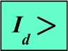
- 1 : Negative Sequence Relay
- 2 : Differential Relay
- 3 : Definite Time Earth Fault Overcurrent Relay
- 4 : Directional Overcurrent Relay
- คำตอบที่ถูกต้อง : 2
- Overcurrent Relays แบบไม่มีทิศทาง ใช้หลักการตรวจจับการเกิดผิดพร่อง (Faults) ด้วยวิธีใด
- 1 : การตรวจวัดระดับ
- 2 : การเปรียบเทียบมุมเฟส
- 3 : การเปรียบเทียบขนาดกำลังไฟฟ้า
- 4 : การเปรียบเทียบความแตกต่างของกระแส
- คำตอบที่ถูกต้อง : 1
- Under Voltage Relay ใช้หลักการตรวจจับการเกิดผิดพร่อง (Faults) ด้วยวิธีใด
- 1 : การเปรียบเทียบมุมเฟส
- 2 : การเปรียบเทียบความแตกต่างของกระแส
- 3 : การเปรียบเทียบขนาดกำลังไฟฟ้า
- 4 : การตรวจวัดระดับ
- คำตอบที่ถูกต้อง : 4
- ค่า Pick up Value ของรีเลย์ หมายถึงข้อใด
- 1 : ค่าการปรับตั้งที่ให้รีเลย์หยุดทำงาน
- 2 : ค่าการปรับตั้งเพื่อชดเชยให้คุณสมบัติการทำงานของรีเลย์ดีขึ้น
- 3 : ค่าการปรับตั้งรีเลย์ให้เริ่มทำงาน
- 4 : ค่าตัวคูณปรับตั้งเพื่อเร่งให้รีเลย์ทำงานเร็วขึ้นช่วยลดความเสียหายให้น้อยลง
- คำตอบที่ถูกต้อง : 3
- รีเลย์ต่อไปนี้ ข้อใดไม่ใช่ Distance Relay
- 1 : Quadrilateral
- 2 : Lenticular
- 3 : Mho
- 4 : High Impedance Relay
- คำตอบที่ถูกต้อง : 4
- รีเลย์ชนิดใดต่อไปนี้ที่ใช้หลักการตรวจจับ Faults ในระบบไฟฟ้า ด้วยวิธีการเปรียบเทียบขนาด (Magnitude Comparison)
- 1 : Directional Overcurrent Relay
- 2 : Distance Relay
- 3 : Current Balance Relay
- 4 : Differential Relay
- คำตอบที่ถูกต้อง : 3
- การ ตรวจจับ Faults ในระบบไฟฟ้า ด้วยวิธีการเปรียบเทียบมุมเฟส (Phase Angle Comparison) โดยทั่วไปจะใช้ปริมาณใดเพื่อนำมาเปรียบเทียบหามุมเฟส
- 1 : ใช้ค่ากระแสไฟฟ้า และ แรงดันไฟฟ้า
- 2 : ใช้ค่ากำลังไฟฟ้า และ กระแสไฟฟ้า
- 3 : ใช้ค่ากำลังไฟฟ้า และ แรงดันไฟฟ้า
- 4 : ใช้ค่ากระแส Negative Sequence และ Positive Sequence เมื่อเกิด Fault
- คำตอบที่ถูกต้อง : 1
- รีเลย์ชนิดใดต่อไปนี้ ที่ใช้หลักการตรวจจับ Faults โดยนำวิธีการเปรียบเทียบมุมเฟส (Phase Angle Comparison) มาใช้ร่วมด้วย
- 1 : Differential Relay
- 2 : Directional Overcurrent Relay
- 3 : Frequency Relay
- 4 : Current Balance Relay
- คำตอบที่ถูกต้อง : 2
- ข้อใดต่อไปนี้ กล่าวถึง Electromagnetic Relays ผิดจากความเป็นจริง
- 1 : Electromagnetic Induction Relay อาศัยแรงดึงดูดแม่เหล็กไฟฟ้าเพื่อบังคับให้ Relay Contact เปลี่ยนสถานะ
- 2 : Electromechanical Relay อาศัยแรงดึงดูดหรือแรงบิดทางไฟฟ้ากลมาทำเป็นรีเลย์
- 3 : Electromagnetic Attraction Relay จะทำงานแบบทันทีทันใด (Instantaneous) โดยไม่มีการหน่วงเวลา
- 4 : Electromechanical Relay เป็นรีเลย์แบบเก่า ที่ไม่สามารถเก็บบันทึกข้อมูลทางไฟฟ้าใดๆ ได้
- คำตอบที่ถูกต้อง : 1
- ข้อใดไม่ใช่คุณสมบัติของ Digital Relay
- 1 : เป็น Multiphase Multifunction Relay
- 2 : สามารถบันทึกเหตุการณ์หรือข้อมูลทางสถิติการเกิด Fault ในระบบได้
- 3 : สามารถวัดและแสดงผลค่าปริมาณทางไฟฟ้าของระบบได้ เช่น กระแส แรงดัน วัตต์ โวลต์แอมแปร์ เป็นต้น
- 4 : เป็น Single Phase / Single Function Relay
- คำตอบที่ถูกต้อง : 4
- รีเลย์ชนิดใดต่อไปนี้ อาศัยหลักการใช้ทั้งปริมาณกระแส และแรงดันเพื่อกระตุ้นให้รีเลย์ทำงาน
- 1 : รีเลย์ระยะทาง (Distance Relay)
- 2 : รีเลย์วัดค่ากระแสผลต่าง (Current Differential Relay)
- 3 : รีเลย์ตรวจจับความถี่ต่ำ (Underfrequency Relay)
- 4 : รีเลย์กระแสเกินแบบไม่มีทิศทาง (Non-Directional Overcurrent Relay)
- คำตอบที่ถูกต้อง : 1
- รีเลย์ Number 87 ตามมาตรฐาน ANSI Standard หมายถึงรีเลย์ชนิดใด
- 1 : Instantaneous Overcurrent Relay
- 2 : Distance Relay
- 3 : Differential Protective Relay
- 4 : Reverse-Phase or Phase-Balance Current Relay
- คำตอบที่ถูกต้อง : 3
- รีเลย์ Number 51 ตามมาตรฐาน ANSI Standard หมายถึงรีเลย์ชนิดใด
- 1 : Ground Protective Relay
- 2 : AC Time Overcurrent Relay
- 3 : Reverse-Phase or Phase-Balance Current Relay
- 4 : Instantaneous Overcurrent Relay
- คำตอบที่ถูกต้อง : 2
- รีเลย์ Number 21 ตามมาตรฐาน ANSI Standard หมายถึงรีเลย์ชนิดใด
- 1 : Ground Protective Relay
- 2 : AC Time Overcurrent Relay
- 3 : Distance Relay
- 4 : Reverse-Phase or Phase-Balance Current Relay
- คำตอบที่ถูกต้อง : 3
- รีเลย์ Number 67 ตามมาตรฐาน ANSI Standard หมายถึงรีเลย์ชนิดใด
- 1 : AC Time Overcurrent Relay
- 2 : Reverse-Phase or Phase-Balance Current Relay
- 3 : Ground Protective Relay
- 4 : AC Directional Overcurrent Relay
- คำตอบที่ถูกต้อง : 4
- รีเลย์ Number 49 ตามมาตรฐาน ANSI Standard หมายถึงรีเลย์ชนิดใด
- 1 : Thermal Relay
- 2 : Under Voltage Relay
- 3 : Instantaneous Overcurrent Relay
- 4 : Ground Protective Relay
- คำตอบที่ถูกต้อง : 1
- ข้อใดเป็นหลักการตรวจจับการเกิดความผิดพร่อง (Detection of Fault) ของรีเลย์
- 1 : รีเลย์ทำงานเมื่อปริมาณทางไฟฟ้าในระบบมีค่าสูงกว่าระดับที่ปรับตั้ง
- 2 : รีเลย์ทำงานเมื่อปริมาณทางไฟฟ้าในระบบมีค่าต่ำกว่าระดับที่ปรับตั้ง
- 3 : รีเลย์ทำงานเมื่อปริมาณทางไฟฟ้า 2 ค่ามีผลต่างมากเกินกว่าระดับที่ปรับตั้ง
- 4 : ถูกทุกข้อ
- คำตอบที่ถูกต้อง : 4
- High Impedance Relay จัดเป็นรีเลย์ประเภทใด
- 1 : รีเลย์ระยะทาง (Distance Relay)
- 2 : รีเลย์ผลต่าง (Differential Relay)
- 3 : รีแอกแตนซ์รีเลย์ (Reactance Relay)
- 4 : อิมพีแดนซ์รีเลย์ (Impedance Relay)
- คำตอบที่ถูกต้อง : 2
- อุปกรณ์หลักที่ใช้ในการป้องกันระบบไฟฟ้า มีอะไรบ้าง
- 1 : Fuse , Circuit Breaker และ Cutout
- 2 : Fuse , Circuit Breaker และ Delay
- 3 : Fuse , Circuit Breaker และ Relay
- 4 : Circuit Breaker , Cutout และ Relay
- คำตอบที่ถูกต้อง : 3
- อุปกรณ์ในข้อใดต่อไปนี้ ที่ไม่ใช่อุปกรณ์พื้นฐานในการป้องกันระบบไฟฟ้ากำลัง
- 1 : ฟิวส์
- 2 : รีเลย์
- 3 : เซอร์กิตเบรคเกอร์
- 4 : แมกเนติกคอนแทคเตอร์
- คำตอบที่ถูกต้อง : 4
- รีเลย์ชนิด Electro-mechanical Relay ถ้าต้องการให้เป็น High Speed Relay จะต้องใช้โครงสร้างของรีเลย์แบบใด
- 1 : แบบ Split Ring
- 2 : แบบ Induction Disc
- 3 : แบบ Induction Cup
- 4 : แบบ Attractive Armature
- คำตอบที่ถูกต้อง : 4
- การต่อหม้อแปลงกระแส ( CT ) เพื่อตรวจจับ Zero-Sequence นั้น มีประโยชน์อย่างไร
- 1 : เพื่อใช้ป้องกัน Phase Fault
- 2 : เพื่อใช้ป้องกัน Earth Fault
- 3 : เพื่อใช้ป้องกัน Under Voltage
- 4 : เพื่อใช้ในการป้องกันแบบ Differential
- คำตอบที่ถูกต้อง : 2
- Voltage Relay ไม่สามารถนำมาใช้งานในลักษณะใดต่อไปนี้ได้
- 1 : ใช้ตรวจจับก่อนการทำ Synchronism Check
- 2 : ใช้ตรวจจับการกลับเฟส
- 3 : ใช้ตรวจสอบความผิดปกติด้านความร้อนร่วมกับ Bimetal
- 4 : ใช้ตรวจจับเพื่อป้องกัน Motor ขณะเริ่มเดินเครื่อง
- คำตอบที่ถูกต้อง : 3
- หลักการตรวจจับ Faults ของรีเลย์โดยทั่วไป ในระบบไฟฟ้าที่มีการต่อลงดินที่ดี มักจะตรวจจับจากการตรวจค่าเชิงปริมาณทางไฟฟ้าของค่าใด
- 1 : ค่ากระแสที่เพิ่มขึ้นและแรงดันที่เพิ่มขึ้น
- 2 : ค่ากระแสที่เพิ่มขึ้นและแรงดันที่ลดลง
- 3 : ค่ากระแสที่เพิ่มขึ้นและความต้านทานที่เพิ่มขึ้น
- 4 : ค่ากระแสที่เพิ่มขึ้นและกำลังไฟฟ้าที่เพิ่มขึ้น
- คำตอบที่ถูกต้อง : 2
- Voltage Restraint Overcurrent Relay ใช้ปริมาณใดเป็น Pick up Value
- 1 : ใช้ทั้งค่ากระแสและความถี่ ที่เปลี่ยนแปลงไป
- 2 : ใช้ทั้งค่าแรงดันและความถี่ ที่เปลี่ยนแปลงไป
- 3 : ใช้ทั้งค่ากระแสและแรงดัน ที่เปลี่ยนแปลงไป
- 4 : ใช้ทั้งกระแสและอิมพีแดนซ์ ที่เปลี่ยนแปลงไป
- คำตอบที่ถูกต้อง : 3
- Pressure Relay ใช้เพื่อป้องกันอุปกรณ์ใดต่อไปนี้
- 1 : เครื่องกำเนิดไฟฟ้า
- 2 : หม้อแปลงกำลังแบบฉนวนน้ำมัน
- 3 : คาปาซิเตอร์
- 4 : อุปกรณ์ที่ใช้ก๊าซ SF6 เป็นฉนวน
- คำตอบที่ถูกต้อง : 2
- รีเลย์ Number 46 ตามมาตรฐาน ANSI Standard หมายถึงรีเลย์ชนิดใด
- 1 : Negative Sequence Current Relay
- 2 : Negative Sequence Voltage Relay
- 3 : Zero Sequence Current Relay
- 4 : Zero Sequence Voltage Relay
- คำตอบที่ถูกต้อง : 1
- รีเลย์ Number 47 ตามมาตรฐาน ANSI Standard หมายถึงรีเลย์ชนิดใด
- 1 : Negative Sequence Current Relay
- 2 : Negative Sequence Voltage Relay
- 3 : Zero Sequence Current Relay
- 4 : Zero Sequence Voltage Relay
- คำตอบที่ถูกต้อง : 2
- รีเลย์ Number 81U ตามมาตรฐาน ANSI Standard หมายถึงรีเลย์ชนิดใด
- 1 : Under Frequency Relay
- 2 : Over Frequency Relay
- 3 : Differential Relay
- 4 : Regulating Relay
- คำตอบที่ถูกต้อง : 1
- รีเลย์ Number 40 ตามมาตรฐาน ANSI Standard หมายถึงรีเลย์ชนิดใด
- 1 : Frequency Relay
- 2 : Regulating Relay
- 3 : Lockout Relay
- 4 : Loss of Field Relay
- คำตอบที่ถูกต้อง : 4
- รีเลย์ Number 27 ตามมาตรฐาน ANSI Standard หมายถึงรีเลย์ชนิดใด
- 1 : Under Frequency Relay
- 2 : Over Frequency Relay
- 3 : Under Voltage Relay
- 4 : Over Voltage Relay
- คำตอบที่ถูกต้อง : 3
- รีเลย์ Number 59 ตามมาตรฐาน ANSI Standard หมายถึงรีเลย์ชนิดใด
- 1 : Under Frequency Relay
- 2 : Over Frequency Relay
- 3 : Under Voltage Relay
- 4 : Over Voltage Relay
- คำตอบที่ถูกต้อง : 4
- รีเลย์ Number 50N ตามมาตรฐาน ANSI Standard หมายถึง รีเลย์ชนิดใด
- 1 : Instantaneous Over Current Relay
- 2 : Time Delay Over Current Relay
- 3 : Instantaneous Earth Fault Relay
- 4 : Time Delay Earth Fault Relay
- คำตอบที่ถูกต้อง : 3
- รีเลย์ Number 51V ตามมาตรฐาน ANSI Standard หมายถึงรีเลย์ชนิดใด
- 1 : Time Delay Over Current Relay
- 2 : Time Delay Over Voltage Relay
- 3 : Voltage Restraint Over Current Relay
- 4 : Time Delay Earth Fault Relay
- คำตอบที่ถูกต้อง : 3
- รหัสอุปกรณ์ หมายเลข 52 ตามมาตรฐาน ANSI Standard หมายถึงอุปกรณ์ใด
- 1 : Current Operated Circuit Breaker
- 2 : Relay Operated Circuit Breaker
- 3 : Thermally Operated Circuit Breaker
- 4 : Voltage Operated Circuit Breaker
- คำตอบที่ถูกต้อง : 2
- Static Relays หมายถึงรีเลย์แบบใด
- 1 : Electromechanical Relays
- 2 : Solid State Relays
- 3 : Digital Relays
- 4 : Numerical Relays
- คำตอบที่ถูกต้อง : 2
- ภายในโครงสร้างของรีเลย์แบบ Microprocessor หรือ Digital Relays ที่ใช้งานในยุคปัจจุบันจะประกอบด้วย Isolation Transformers เพื่อใช้ทำหน้าที่อะไร
- 1 : ใช้กรองสัญญาณรบกวนก่อนเข้ารีเลย์
- 2 : ใช้แยกวงจรและแปลงลดสัญญาณก่อนเข้ารีเลย์
- 3 : ใช้จ่ายไฟเลี้ยงวงจรอิเล็กทรอนิกส์ภายในตัวรีเลย์
- 4 : ใช้ส่งสัญญาณข้อมูลภายในตัวรีเลย์
- คำตอบที่ถูกต้อง : 2
- รหัสอุปกรณ์ หมายเลข 52-a ตามมาตรฐาน ANSI Standard หมายถึงอุปกรณ์ชนิดใด
- 1 : Auxiliary Contact แบบปกติเปิด (Normally Open)
- 2 : Auxiliary Contact แบบปกติปิด (Normally Close)
- 3 : Auxiliary Relay แบบปกติเปิด (Normally Open)
- 4 : Auxiliary Relay แบบปกติปิด (Normally Close)
- คำตอบที่ถูกต้อง : 1
- รหัสอุปกรณ์ หมายเลข 52-b ตามมาตรฐาน ANSI Standard หมายถึงอุปกรณ์ชนิดใด
- 1 : Auxiliary Contact แบบปกติเปิด (Normally Open)
- 2 : Auxiliary Contact แบบปกติปิด (Normally Close)
- 3 : Auxiliary Relay แบบปกติเปิด (Normally Open)
- 4 : Auxiliary Relay แบบปกติปิด (Normally Close)
- คำตอบที่ถูกต้อง : 2
- Under-Voltage Relay จะทำงาน เมื่อแรงดันต่ำกว่าค่าที่ตั้งไว้ โดยที่
- 1 : รีเลย์จะต่อ Contact ชนิด a ถึงกัน
- 2 : รีเลย์จะต่อ Contact ชนิด b ถึงกัน
- 3 : รีเลย์จะแยก Contact ชนิด a ออกจากกัน
- 4 : รีเลย์จะแยก Contact ชนิด b ออกจากกัน
- คำตอบที่ถูกต้อง : 2
- ข้อใดที่ไม่ใช่ความแตกต่างระหว่าง Instantaneous Relay กับ Inverse Time Relay
- 1 : Instantaneous Relay มีโครงสร้างแบบ Hinged Armature แต่ของ Inverse Time Relay เป็นแบบ Induction Type
- 2 : Instantaneous Relay มีโครงสร้างแบบ Armature Attractive แต่ของ Inverse Time Relay เป็นแบบ Induction Disc
- 3 : Instantaneous Relay จะทำงานทันที เมื่อมีกระแส Fault ไหลผ่าน Coil เกินกว่าค่าที่ปรับตั้งไว้ แต่ Inverse Time Relay จะทำงานด้วยเวลาที่แปรผันตามปริมาณกระแส
- 4 : Instantaneous Relay สร้างได้ง่ายกว่า Inverse Time Relay
- คำตอบที่ถูกต้อง : 4
- จาก ข้อความต่อไปนี้ ข้อใดกล่าวถูกต้อง A. Solid State Relay เป็นรีเลย์ที่ไม่มีส่วนที่เคลื่อนที่ได้ B. Solid State Relay เป็นรีเลย์ที่ไม่ต้องใช้พลังงานไฟฟ้าจากภายนอก C. Microprocessor Relay เป็นรีเลย์ที่สามารถทำงานได้หลายหน้าที่ในตัวเดียว D.Microprocessor Relay เป็นรีเลย์ที่มีโครงสร้างวงจรภายในไม่ซับซ้อน
- 1 : ข้อ A และ C
- 2 : ข้อ A และ D
- 3 : ข้อ B และ C
- 4 : ข้อ B และ D
- คำตอบที่ถูกต้อง : 1
- ตามมาตรฐาน IEC 60617 (IEC Relay Symbols) สัญลักษณ์ของรีเลย์ดังรูป หมายถึงรีเลย์ใด
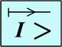
- 1 : Instantaneous Overcurrent Relay
- 2 : Differential Relay
- 3 : Definite Time Earth Fault Overcurrent Relay
- 4 : Directional Overcurrent Relay
- คำตอบที่ถูกต้อง : 4
- ตามมาตรฐาน IEC 60617 (IEC Relay Symbols) สัญลักษณ์ของรีเลย์ดังรูป หมายถึงรีเลย์ใด
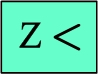
- 1 : Distance Relay
- 2 : Underspeed Relay
- 3 : Underpower Relay
- 4 : Phase Angle Relay
- คำตอบที่ถูกต้อง : 1
- ตามมาตรฐาน IEC 60617 (IEC Relay Symbols) สัญลักษณ์ของรีเลย์ดังรูป หมายถึงรีเลย์ใด
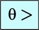
- 1 : Overspeed Relay
- 2 : Power Factor Relay
- 3 : Overtemperature Relay
- 4 : Phase Angle Relay
- คำตอบที่ถูกต้อง : 3
- ตามมาตรฐาน IEC 60617 (IEC Relay Symbols) สัญลักษณ์ของรีเลย์ดังรูป หมายถึงอุปกรณ์ใด
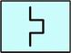
- 1 : Directional Relay
- 2 : Switch
- 3 : Circuit Breaker
- 4 : Thermal Relay
- คำตอบที่ถูกต้อง : 4
- ตามมาตรฐาน IEC 60617 (IEC Relay Symbols) สัญลักษณ์ของรีเลย์ดังรูป หมายถึงรีเลย์ใด
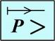
- 1 : Phase Angle Relay
- 2 : Directional Overpower Relay
- 3 : Power Factor Relay
- 4 : Revers-Phase Relay
- คำตอบที่ถูกต้อง : 2
- ตามมาตรฐาน IEC 60617 (IEC Relay Symbols) สัญลักษณ์ของรีเลย์ดังรูป หมายถึงรีเลย์ใด
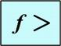
- 1 : Overspeed Relay
- 2 : Underspeed Relay
- 3 : Overfrequency Relay
- 4 : Phase Angle Relay
- คำตอบที่ถูกต้อง : 3
- ตามมาตรฐาน IEC 60617 (IEC Relay Symbols) สัญลักษณ์ของรีเลย์ดังรูป หมายถึงรีเลย์ใด
- 1 : Underspeed relay
- 2 : Underfrequency relay
- 3 : Underpower relay
- 4 : Undervoltage relay
- คำตอบที่ถูกต้อง : 4
- ตามมาตรฐาน IEC 60617 (IEC Relay Symbols) สัญลักษณ์ของรีเลย์ดังรูป หมายถึงรีเลย์ใด
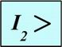
- 1 : Directional Overcurrent Relay
- 2 : Definite Time Overcurrent Relay
- 3 : Negative Sequence Relay
- 4 : Inverse Time Overcurrent Relay
- คำตอบที่ถูกต้อง : 3
- รีเลย์ใดต่อไปนี้ ใช้ค่า Impedance เป็นปริมาณ Pick up เพื่อให้รีเลย์ทำงาน
- 1 : รีเลย์ Number 67
- 2 : รีเลย์ Number 87
- 3 : รีเลย์ Number 27
- 4 : รีเลย์ Number 21
- คำตอบที่ถูกต้อง : 4
- รีเลย์ใดต่อไปนี้ อาศัยกระแสกระตุ้นที่ต่อมาจาก CT เพียงอย่างเดียว เป็นปริมาณ Pick up เพื่อให้รีเลย์ทำงาน
- 1 : รีเลย์ Number 50
- 2 : รีเลย์ Number 67
- 3 : รีเลย์ Number 27
- 4 : รีเลย์ Number 21
- คำตอบที่ถูกต้อง : 1
- กลไกลการทำงานของ Digital Relays จะขึ้นอยู่กับอะไรเป็นสำคัญ
- 1 : ขึ้นอยู่กับสัญญาณข้อมูลที่ได้รับจาก ADC
- 2 : ขึ้นอยู่กับคำสั่งจาก Software ที่ใช้
- 3 : ขึ้นอยู่กับหน่วยความจำ
- 4 : ขึ้นอยู่กับส่วนป้อนข้อมูลและแสดงผล
- คำตอบที่ถูกต้อง : 2
- รีเลย์ใดต่อไปนี้ที่มีคุณสมบัติแบบ Adjustable Logic Elements
- 1 : รีเลย์แบบอาศัยการเหนี่ยวนำแม่เหล็กไฟฟ้า
- 2 : รีเลย์แบบอาศัยแรงดูดแม่เหล็กไฟฟ้า
- 3 : Plunger Relays
- 4 : Static Relays
- คำตอบที่ถูกต้อง : 4
- Over Load Relay แบบใช้แผ่นโลหะคู่ (Bimetal) มีหลักการทำงานอย่างไร
- 1 : ใช้หลักการของโลหะต่างชนิดกัน เมื่อได้รับความร้อนพร้อมกันมีอัตราการขยายตัวไม่เท่ากัน
- 2 : ใช้หลักการสนามแม่เหล็กดูดหน้าคอนแทค โดยผ่านแผ่นโลหะ
- 3 : ใช้หลักการของโลหะต่างชนิดกัน เมื่อได้รับความร้อนไม่พร้อมกันมีอัตราการหดตัวไม่เท่ากัน
- 4 : ใช้หลักการสนามแม่เหล็กไฟฟ้าเหนี่ยวนำแผ่นโลหะ เพื่อเปิด ปิด หน้าคอนแทค
- คำตอบที่ถูกต้อง : 1
- หลักการ Pilot Relaying นิยมใช้ป้องกันอุปกรณ์ใดในระบบไฟฟ้ากำลัง
- 1 : ใช้ป้องกันเครื่องกำเนิดไฟฟ้า
- 2 : ใช้ป้องกันหม้อแปลงไฟฟ้า
- 3 : ใช้ป้องกันสายส่งกำลังไฟฟ้า
- 4 : ใช้ป้องกันมอเตอร์ไฟฟ้า
- คำตอบที่ถูกต้อง : 3
- ภาย ในโครงสร้างของรีเลย์แบบ Microprocessor หรือ Digital Relays ที่ใช้งานในยุคปัจจุบันจำเป็นต้องมี Multiplexer ( MUX ) เพื่อใช้ทำหน้าที่อะไร
- 1 : ใช้กรองสัญญาณรบกวนก่อนเข้าอุปกรณ์ ADC
- 2 : ใช้เลือกและเรียงลำดับของสัญญาณก่อนเข้าอุปกรณ์ ADC
- 3 : ใช้ขยายขนาดสัญญาณก่อนเข้าอุปกรณ์ ADC
- 4 : ใช้เป็นตัวสร้างสัญญาณนาฬิกาเทียบภายในรีเลย์
- คำตอบที่ถูกต้อง : 2
- จาก ข้อความต่อไปนี้ ข้อใดกล่าวถูกต้อง A) 59-Overvoltage Relay และ 27-Undervoltage Relay ใช้ป้องกันแรงดันในระบบไฟฟ้ามีความผิดปกติ B) 25-Synchronism Relay ใช้ตรวจสอบความถี่ และมุมเฟสของแรงดันไฟฟ้าใน 2 วงจรที่จะทำการต่อขนานกัน C) 59-Overvoltage Relay และ 81-Undervoltage Relay ใช้ป้องกันความถี่ในระบบไฟฟ้าผิดปกติ D) 21-Distance Relay และ 87-Differential Relay ใช้ป้องกันอุปกรณ์หม้อแปลงในระบบไฟฟ้า
- 1 : ข้อ A และ B
- 2 : ข้อ A และ C
- 3 : ข้อ B และ C
- 4 : ข้อ C และ D
- คำตอบที่ถูกต้อง : 1
- รหัสและชื่ออุปกรณ์ในข้อใดต่อไปนี้ ถูกต้องทั้งหมด
- 1 : 49-Frequency Relay, 50-Instantaneous Overcurrent Relay, 67-Undervoltage Relay
- 2 : 21-Distance Relay , 50-Instantaneous Overcurrent Relay, 51-Time Overcurrent Relay
- 3 : 40-Loss of Excitation Relay, 59-Overvoltage Relay, 78-Differential Relay
- 4 : 50-Time Overcurrent Relay, 51-Instantaneous Overcurrent Relay, 87-Differential Relay
- คำตอบที่ถูกต้อง : 2
- รหัสและชื่ออุปกรณ์ในข้อใดต่อไปนี้ ถูกต้องทั้งหมด
- 1 : 27-Overvoltage Relay, 51-Time Overcurrent Relay, 59-Undervoltage Relay
- 2 : 27-Overvoltage Relay, 51-Undervoltage Relay, 59-Time Overcurrent Relay
- 3 : 27-Undervoltage Relay, 51-Time Overcurrent Relay, 59-Overvoltage Relay
- 4 : 27-Undervoltage Relay, 51-Overvoltage Relay, 59-Time Overcurrent Relay
- คำตอบที่ถูกต้อง : 3
- รหัสและชื่ออุปกรณ์ในข้อใดต่อไปนี้ ไม่ถูกต้อง
- 1 : 21-Distance Relay, 40-Loss of Excitation Relay, 59-Overvoltage Relay
- 2 : 32-Power Direction Relay, 60V-Voltage Balance Relay, 87-Differential Relay
- 3 : 27-Undervoltage Relay, 37-Undercurrent Relay, 78-Out of Step relay
- 4 : 49-Frequency Relay, 50-Instantaneous Overcurrent Relay, 51-Time Overcurrent Relay
- คำตอบที่ถูกต้อง : 4
- รีเลย์กลุ่มใดต่อไปนี้ อาศัยสัญญาณกระตุ้นที่ต่อมาจาก VT เพียงอย่างเดียว เพื่อให้รีเลย์ทำงาน
- 1 : รีเลย์ Number 50 และ รีเลย์ Number 87
- 2 : รีเลย์ Number 51 และ รีเลย์ Number 67
- 3 : รีเลย์ Number 25 และ รีเลย์ Number 27
- 4 : รีเลย์ Number 81 และ รีเลย์ Number 21
- คำตอบที่ถูกต้อง : 3
- รีเลย์กลุ่มใดต่อไปนี้ ใช้งานร่วมกับ CT เพียงอย่างเดียว
- 1 : รีเลย์ Number 50 และ รีเลย์ Number 87
- 2 : รีเลย์ Number 21 และ รีเลย์ Number 67N
- 3 : รีเลย์ Number 25 และ รีเลย์ Number 27
- 4 : รีเลย์ Number 51 และ รีเลย์ Number 59
- คำตอบที่ถูกต้อง : 1
- ข้อใดต่อไปนี้กล่าวถึงหลักการป้องกันกระแสเกินที่ไม่ถูกต้อง
- 1 : รีเลย์กระแสเกินเป็นรีเลย์ที่ใช้มากที่สุดในการป้องกัน Phase Faults และ Earth Faults
- 2 : ปริมาณที่ใช้ตรวจจับ Fault ที่เกิดขึ้นในระบบอาจใช้เป็นค่ากระแส, เวลา หรือทั้งกระแสและเวลา ร่วมกัน
- 3 : ปริมาณที่ใช้ตรวจจับ Fault ที่เกิดขึ้นในระบบอาจใช้เป็นค่ากระแส, แรงดัน หรือ เวลา ก็ได้
- 4 : การป้องกันกระแสลัดวงจร (Short Circuit) จะต้องตั้งค่าให้รีเลย์ตัวที่อยู่ใกล้ Fault มากที่สุดทำงานก่อนเสมอ
- คำตอบที่ถูกต้อง : 3
- ค่าเวลา Grading Margin ที่เหมาะสมที่สุด สำหรับรีเลย์ควรมีค่าอยู่ในช่วงใด
- 1 : 0.1 1.0 วินาที
- 2 : 0.25 0.4 วินาที
- 3 : 1.0 3.0 วินาที
- 4 : 2.0 5.0 วินาที
- คำตอบที่ถูกต้อง : 2
- การทำ Discrimination ของรีเลย์ในระบบป้องกันกระแสเกิน สามารถทำได้กี่วิธี อะไรบ้าง
- 1 : 2 วิธี คือ โดยใช้กระแส และ เวลา
- 2 : 2 วิธี คือ โดยใช้กระแส และ มุมเฟส
- 3 : 3 วิธี คือ โดยใช้กระแส, เวลา และ ใช้ทั้งกระแสร่วมกับเวลา
- 4 : 3 วิธี คือ โดยใช้กระแส, เวลา และ มุมเฟส
- คำตอบที่ถูกต้อง : 3
- ลักษณะสมบัติของรีเลย์กระแสเกินแบบ Definite Time Overcurrent Relay คือข้อใด
- 1 : รีเลย์จะทำงาน เมื่อตรวจพบว่ากระแส Fault มีค่าเกินกว่าค่ากระแสที่ปรับตั้งไว้ และมีเวลาทำงานเร็วที่สุดเกือบเป็นแบบทันทีทันใด
- 2 : รีเลย์จะทำงาน เมื่อตรวจพบว่ากระแส Fault มีค่าเกินกว่าค่ากระแสที่ปรับตั้งไว้ และมีเวลาทำงานแบบคงที่ตามค่าที่ออกแบบไว้
- 3 : รีเลย์จะทำงาน เมื่อตรวจพบว่ากระแส Fault มีค่าเกินกว่าค่ากระแสที่ปรับตั้งไว้ และมีเวลาทำงานเป็นปฏิภาคผกผันกับปริมาณกระแสผิดพร่อง
- 4 : รีเลย์จะทำงาน เมื่อตรวจพบว่ากระแส Fault มีค่าเกินกว่าค่ากระแสที่ปรับตั้งไว้ และมีเวลาทำงานเป็นแบบแปรผันตามปริมาณกระแสผิดพร่อง
- คำตอบที่ถูกต้อง : 2
- ลักษณะสมบัติของรีเลย์กระแสเกินแบบ Definite Current Overcurrent Relay คือข้อใด
- 1 : รีเลย์จะทำงาน เมื่อตรวจพบว่ากระแส Fault มีค่าเท่ากับหรือเกินกว่าค่ากระแสที่ปรับตั้งไว้ และมีเวลาทำงานเป็นปฏิภาคผกผันกับปริมาณกระแสผิดพร่อง
- 2 : รีเลย์จะทำงาน เมื่อตรวจพบว่ากระแส Fault มีค่าเท่ากับหรือเกินกว่าค่ากระแสที่ปรับตั้งไว้ และมีเวลาทำงานเป็นแบบแปรผันตามปริมาณกระแสผิดพร่อง
- 3 : รีเลย์จะทำงาน เมื่อตรวจพบว่ากระแส Fault มีค่าเท่ากับหรือเกินกว่าค่ากระแสที่ปรับตั้งไว้ โดยรีเลย์จะทำงานทันทีไม่ขึ้นอยู่กับค่ากระแส
- 4 : รีเลย์จะทำงาน เมื่อตรวจพบว่ากระแส Fault มีค่าเท่ากับหรือเกินกว่าค่ากระแสที่ปรับตั้งไว้ โดยรีเลย์จะทำงานแบบมีเวลาหน่วงคงที่ตามค่าที่ปรับตั้งไว้
- คำตอบที่ถูกต้อง : 3
- ลักษณะสมบัติของรีเลย์กระแสเกินแบบ Inverse Time Overcurrent Relay คือข้อใด
- 1 : รีเลย์จะทำงาน เมื่อตรวจพบว่าอิมพีแดนซ์ที่ตรวจวัดได้มีค่าน้อยกว่าค่าที่ปรับตั้งไว้ โดยรีเลย์จะทำงานทันทีในช่วงเริ่มต้น และยิ่งทำงานเร็วขึ้นถ้าอิมพีแดนซ์มีค่าน้อย
- 2 : รีเลย์จะทำงาน เมื่อตรวจพบว่ากระแส Fault มีค่าเกินกว่าค่ากระแสที่ปรับตั้งไว้ โดยรีเลย์จะทำงานทันทีในช่วงเริ่มต้น และยิ่งทำงานเร็วขึ้นถ้ากระแสมีค่าน้อย
- 3 : รีเลย์จะทำงาน เมื่อตรวจพบว่ากระแส Fault มีค่าเกินกว่าค่ากระแสที่ปรับตั้งไว้ และมีเวลาทำงานเป็นแบบแปรผันตามปริมาณกระแสผิดพร่อง
- 4 : รีเลย์จะทำงาน เมื่อตรวจพบว่ากระแส Fault มีค่าเกินกว่าค่ากระแสที่ปรับตั้งไว้ และมีเวลาทำงานเป็นปฏิภาคผกผันกับปริมาณกระแสผิดพร่อง
- คำตอบที่ถูกต้อง : 4
- รีเลย์กระแสเกินแบบไม่มีทิศทาง (Non-directional Overcurrent Relay) ใช้วิธีใดในการตรวจจับ Faults
- 1 : การตรวจวัดระดับ
- 2 : การเปรียบเทียบมุมเฟส
- 3 : การเปรียบเทียบความแตกต่างของกระแส
- 4 : การตรวจจับฮาร์มอนิกส์
- คำตอบที่ถูกต้อง : 1
- Grading Margin ขึ้นอยู่กับแฟกเตอร์ใดต่อไปนี้
- 1 : เวลา Overshoot ของรีเลย์
- 2 : ค่าความผิดพลาดของอุปกรณ์
- 3 : เวลาในการตัดวงจรของ Circuit Breaker
- 4 : ถูกทุกข้อ
- คำตอบที่ถูกต้อง : 4
- ข้อใดไม่ใช่ปัจจัยสำคัญที่ใช้ในการกำหนดค่าเวลา Grading Margin สำหรับการจัดลำดับเวลาการทำงานของรีเลย์กระแสเกิน
- 1 : เวลาในการตัดวงจรของ Circuit Breaker
- 2 : เวลาการทำงานเกินเลย (Overshoot Time) ของรีเลย์
- 3 : ค่าเวลาเผื่อ ( Allowance ) สำหรับความผิดพลาด
- 4 : ช่วงเวลาคงอยู่ของกระแสลัดวงจร
- คำตอบที่ถูกต้อง : 4
- ความหมายของ กระแสเกิน (Overcurrent) ในการป้องกันระบบไฟฟ้ากำลัง มีกี่ลักษณะ อะไรบ้าง
- 1 : มี 2 ลักษณะ คือ Short Circuits กับ Inrush Current
- 2 : มี 2 ลักษณะ คือ Short Circuits กับ Interrupting Current
- 3 : มี 2 ลักษณะ คือ Short Circuits กับ Over Load
- 4 : มี 3 ลักษณะ คือ Short Circuits , Over Load และ Transient
- คำตอบที่ถูกต้อง : 3
- สัญลักษณ์ของ Instantaneous Overcurrent Relay ตามมาตรฐาน IEC (IEC Symbols) คือข้อใด
- 1 :
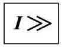
- 2 :

- 3 :

- 4 :

- คำตอบที่ถูกต้อง : 1
- สัญลักษณ์ของ Inverse Time Overcurrent Relay ตามมาตรฐาน IEC (IEC Symbols) คือข้อใด
- 1 :
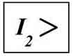
- 2 :

- 3 :
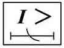
- 4 :
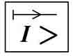
- คำตอบที่ถูกต้อง : 3
- สัญลักษณ์ของ Inverse Time Earth Fault Overcurrent Relay ตามมาตรฐาน IEC (IEC Symbols) คือข้อใด
- 1 :
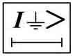
- 2 :

- 3 :

- 4 :
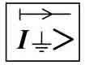
- คำตอบที่ถูกต้อง : 2
- สัญลักษณ์ของ Phase-Directional Overcurrent Relay ตามมาตรฐาน IEC (IEC Symbols) คือข้อใด
- 1 :

- 2 :

- 3 :

- 4 :

- คำตอบที่ถูกต้อง : 2
- สัญลักษณ์ของ Ground-Directional Overcurrent Relay ตามมาตรฐาน IEC (IEC Symbols) คือข้อใด
- 1 :

- 2 :

- 3 :
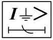
- 4 :

- คำตอบที่ถูกต้อง : 4
- ระบบ ไฟฟ้าแห่งหนึ่งมีขนาดกระแสลัดวงจรสูงสุดเป็น 8,000 A ใช้รีเลย์กระแสเกินในการป้องกัน โดยต่อผ่านหม้อแปลงทดกระแส (CT) ที่มีอัตราการทดกระแส 500/5 A ให้คำนวณหาค่า Plug Setting Multiplier (PSM) จะมีค่าเท่าใด เมื่อปรับตั้งกระแสไว้ที่ 150 %
- 1 : 6.0
- 2 : 8.76
- 3 : 9.56
- 4 : 10.67
- คำตอบที่ถูกต้อง : 4
- เงื่อนไขการทำงานของ Directional Overcurrent Relay คือข้อใด
- 1 : เมื่อกระแสที่รีเลย์มองเห็น มากกว่าหรือเท่ากับค่ากระแสปรับตั้ง รีเลย์จะทำงาน
- 2 : เมื่อกระแสที่รีเลย์มองเห็น มากกว่าหรือเท่ากับค่ากระแสปรับตั้ง และมีทิศทางถูกต้อง รีเลย์จะทำงาน
- 3 : เมื่อกระแสที่รีเลย์มองเห็น มากกว่าหรือเท่ากับค่ากระแสปรับตั้ง และมีทิศทางตรงกันข้าม รีเลย์จะทำงาน
- 4 : เมื่อกระแสที่รีเลย์มองเห็น น้อยกว่าหรือเท่ากับค่ากระแสปรับตั้ง และมีทิศทางถูกต้อง รีเลย์จะทำงาน
- คำตอบที่ถูกต้อง : 2
- Phase Directional Overcurrent Relay และ Ground Directional Overcurrent Relay ตามมาตรฐาน IEEE C37.2 (ANSI Device Numbers) หมายถึงรีเลย์เบอร์ใด ตามลำดับ
- 1 : 67 และ 67N
- 2 : 51 และ 51N
- 3 : 50 และ 50N
- 4 : 32 และ 32N
- คำตอบที่ถูกต้อง : 1
- Phase Directional Overcurrent Relay แบบ Electromechanical สามารถต่อใช้งานแบบใดได้บ้าง
- 1 : 30 degree Connection
- 2 : 60 degree Connection
- 3 : 90 degree Connection
- 4 : ถูกทุกข้อ
- คำตอบที่ถูกต้อง : 4
- Directional Overcurrent Relay สามารถใช้ปริมาณใดเป็น Polarizing Quantity ได้บ้าง
- 1 : ใช้แรงดันไฟฟ้า
- 2 : ใช้กระแสไฟฟ้า
- 3 : ใช้ได้ทั้งแรงดัน หรือ กระแส ไฟฟ้า แล้วแต่กรณีของการป้องกัน
- 4 : ใช้ความถี่ทางไฟฟ้า
- คำตอบที่ถูกต้อง : 3
- Directional Overcurrent Relay ใช้ปริมาณใดเป็น Operating Quantity
- 1 : ใช้แรงดันไฟฟ้า
- 2 : ใช้กระแสไฟฟ้า
- 3 : ใช้ได้ทั้งแรงดัน และ กระแส ไฟฟ้า แล้วแต่กรณีของการป้องกัน
- 4 : ใช้ความถี่ทางไฟฟ้า
- คำตอบที่ถูกต้อง : 2
- Phase Directional Overcurrent Relay (67) สำหรับการป้องกัน Phase Faults ต้องใช้ปริมาณใดเป็น Polarizing Quantity
- 1 : ใช้แรงดันไฟฟ้าได้อย่างเดียว
- 2 : ใช้กระแสไฟฟ้าได้อย่างเดียว
- 3 : ใช้ได้ทั้งแรงดัน และ กระแส ไฟฟ้า แล้วแต่กรณีของการป้องกัน
- 4 : ใช้ความถี่ทางไฟฟ้าได้อย่างเดียว ใช้ความถี่ทางไฟฟ้าได้อย่างเดียว
- คำตอบที่ถูกต้อง : 1
- Polarizing Quantity ของรีเลย์กระแสเกินแบบรู้ทิศทาง (Directional Overcurrent Relays) หมายถึงข้อใด
- 1 : เป็นปริมาณอ้างอิงสำหรับใช้เปรียบเทียบขนาดและทิศทางของกระแสเกิน เพื่อให้รีเลย์ทำงาน
- 2 : เป็นปริมาณอ้างอิงสำหรับใช้เปรียบเทียบขนาดของกระแสเกิน เพื่อให้รีเลย์ทำงาน
- 3 : เป็นปริมาณอ้างอิงสำหรับใช้เปรียบเทียบทิศทางของกระแสเกิน เพื่อให้รีเลย์ทำงาน
- 4 : เป็นปริมาณกระแสเปรียบเทียบกับค่ากระแสปรับตั้งเป็นเปอร์เซ็นต์ เพื่อให้รีเลย์ทำงาน
- คำตอบที่ถูกต้อง : 3
- Overcurrent Relay ต่อผ่านหม้อแปลงทดกระแส (CT) ที่มี Current Ratio เป็น 800/5 A ปรับตั้งให้ทำงานที่ 80% กระแสเริ่มทำงานของ Relay มีค่าเท่าใด
- 1 : 5 A
- 2 : 4 A
- 3 : 3 A
- 4 : 2.5 A
- คำตอบที่ถูกต้อง : 2
- Overcurrent Relay ต่อผ่านหม้อแปลงทดกระแส (CT) ที่มี Current Ratio เป็น 1000/1 A ปรับตั้งให้ทำงานที่ 125% กระแสเริ่มทำงานของ Relay มีค่าเท่าใด
- 1 : 2.0 A
- 2 : 1.5 A
- 3 : 1.25 A
- 4 : 1.0 A
- คำตอบที่ถูกต้อง : 3
- Overcurrent Relay ต่อผ่านหม้อแปลงทดกระแส (CT) ที่มี Current Ratio เป็น 1000/5 A ปรับตั้งให้ทำงานที่ 100% ถ้าเกิดกระแส Fault ขนาด 10,000 A จงหาค่า PSM จะเป็นเท่าใด
- 1 : PSM = 5
- 2 : PSM = 10
- 3 : PSM = 15
- 4 : PSM = 20
- คำตอบที่ถูกต้อง : 2
- ใน ระบบไฟฟ้าแบบ 3 เฟส 3 สาย การป้องกัน Earth Fault Protection ด้วยวิธี Residual Connectedจะต้องใช้หม้อแปลงทดกระแส (CT) ทั้งหมดกี่ตัว
- 1 : ใช้ CT เพียงตัวเดียว
- 2 : ใช้ CT ทั้งหมด 2 ตัว
- 3 : ใช้ CT ทั้งหมด 3 ตัว
- 4 : ใช้ CT ทั้งหมด 4 ตัว
- คำตอบที่ถูกต้อง : 3
- การ ป้องกัน Earth Fault Protection ของเครื่องกำเนิดไฟฟ้า 3 เฟส ที่มีการต่อลงดิน ด้วยวิธี Ground Return จะต้องใช้หม้อแปลงทดกระแส (CT) ทั้งหมดกี่ตัว
- 1 : ใช้ CT ทั้งหมด 4 ตัว
- 2 : ใช้ CT ทั้งหมด 3 ตัว
- 3 : ใช้ CT ทั้งหมด 2 ตัว
- 4 : ใช้ CT เพียงตัวเดียว
- คำตอบที่ถูกต้อง : 4
- การป้องกันกระแสเกินแบบ High Setting Instantaneous Overcurrent ต้องใช้รีเลย์ Device Number ใด
- 1 : 50
- 2 : 51
- 3 : 32
- 4 : 67
- คำตอบที่ถูกต้อง : 1
- การ ปรับตั้งค่ากระแสของ Overcurrent Relay จะต้องปรับที่ค่า Plug Setting ซึ่งมีอยู่ 7 Tap คือ 50%, 75%, 100%, 125%, 150%, 175%, 200% เมื่อ Relay ตัวนี้ต่ออยู่กับ CT ซึ่งมีอัตราการทดกระแส 1000/5 A ถ้าปรับตั้งค่าของ Plug Setting ไว้ที่ 150% จะเท่ากับกระแสกี่แอมแปร์
- 1 : 5.0 A
- 2 : 6.25 A
- 3 : 7.5 A
- 4 : 8.75 A
- คำตอบที่ถูกต้อง : 3
- รีเลย์ป้องกันความผิดพร่องลงดินแบบ Dual Polarizing Earth-Fault Relay ไม่ได้มีไว้ เพื่อแก้ปัญหาใด
- 1 : ค่าแรงดันเศษเหลือ (Residual Voltage) ต่ำเกินไป
- 2 : ค่ามุม Phase Shift มากเกินไป
- 3 : ค่ากระแส Residual Current ต่ำเกินไป
- 4 : ค่า Residual Voltage และ Residual Current ต่ำเกินไป
- คำตอบที่ถูกต้อง : 2
- อุปกรณ์ใดต่อไปนี้ ไม่จำเป็นต้องมีการป้องกันด้วย Directional Overcurrent Relay
- 1 : Induction Motor
- 2 : Ring Main
- 3 : Parallel Source without Transformer
- 4 : Parallel Source with Transformer
- คำตอบที่ถูกต้อง : 1
- การทำ Discrimination ของระบบป้องกันกระแสเกิน หมายถึงข้อใด
- 1 : เป็นการปรับตั้งให้รีเลย์ในระบบที่มีหลายๆ ตัวทำงานแยกเป็นกลุ่ม โดยให้รีเลย์ชนิดเดียวกันทำงานพร้อมกัน
- 2 : เป็นการจัดลำดับการป้องกัน โดยให้รีเลย์ที่อยู่ใกล้แหล่งจ่ายทำงานก่อน และรีเลย์ที่อยู่ไกลออกไปให้ทำหน้าที่เป็นตัว Backup
- 3 : เป็นการปรับตั้งให้รีเลย์ในระบบที่มีหลายๆ ตัวทำงานประสานกัน โดยให้รีเลย์ที่อยู่ไกลจากแหล่งจ่ายมากที่สุดทำงานก่อน และรีเลย์ที่อยู่ในตำแหน่งใกล้แหล่งจ่ายทำงานเป็นลำดับถัดมาโดยไม่ต้องคำนืง ถืงค่าส่วนต่างเวลา (Grading Margin)
- 4 : เป็นการจัดลำดับการป้องกัน โดยให้รีเลย์หลัก (Primary Relay) ที่อยู่ใกล้จุดที่เกิดลัดวงจรทำงานก่อน และรีเลย์สำรอง (Back Up Relay) ที่อยู่ห่างออกไปมีค่าส่วนต่างเวลาการทำงาน (Grading Margin) นานเพียงพอที่จะมั่นใจได้ว่ารีเลย์สำรองจะมีความมั่นคง (Secure)
- คำตอบที่ถูกต้อง : 4
- Overcurrent Relay แบบ Very Inverse มีการปรับตั้งดังนี้ Time Multiplier Setting (TMS) = 0.3, CT Ratio = 1000/1 A โดยปรับตั้งกระแสที่ 100% หากเกิดกระแส Fault 10,000 A จงคำนวณหาเวลาที่รีเลย์ทำงานมีค่าเท่าใด
- 1 : 0.24 วินาที
- 2 : 0.45 วินาที
- 3 : 0.90 วินาที
- 4 : 4.00 วินาที
- คำตอบที่ถูกต้อง : 2
- รี เลย์กระแสเกินมี Curve การทำงานแบบ Standard Inverse (SI) [IEC 60255] โดยตั้งค่า TMS ไว้ที่ 0.5 ถ้าใช้ CT Ratio พิกัด 800/5 A และปรับตั้งค่ากระแสไว้ที่ 100% เมื่อเกิดกระแสผิดพร่องมีค่าเท่ากับ 5,000 A รีเลย์จะทำงานด้วยเวลาเท่าใด
- 1 : 0.500 วินาที
- 2 : 1.875 วินาที
- 3 : 0.945 วินาที
- 4 : 3.750 วินาที
- คำตอบที่ถูกต้อง : 2
- รี เลย์กระแสเกินมี Curve การทำงานแบบ Very Inverse (VI) [IEC 60255] โดยตั้งค่า TMS ไว้ที่ 0.6 ถ้าใช้ CT Ratio พิกัด 600/5 A และปรับตั้งค่ากระแสไว้ที่ 100% เมื่อเกิดกระแสผิดพร่องมีค่าเท่ากับ 4,000 A รีเลย์จะทำงานด้วยเวลาเท่าใด
- 1 : 1.429 วินาที
- 2 : 2.025 วินาที
- 3 : 2.382 วินาที
- 4 : 3.375 วินาที
- คำตอบที่ถูกต้อง : 1
- รี เลย์กระแสเกินมี Curve การทำงานแบบ Standard Inverse (SI) [IEC 60255] ใช้ CT Ratio พิกัด 800/5 A โดยปรับตั้งค่ากระแสไว้ที่ 100% เมื่อเกิดกระแสผิดพร่องมีค่าเท่ากับ 4,000 A ถ้าต้องการให้รีเลย์ทำงานที่เวลา 1.5 วินาที จะต้องปรับตั้งค่า TMS เท่าใด
- 1 : TMS = 0.3
- 2 : TMS = 0.2
- 3 : TMS = 0.25
- 4 : TMS = 0.35
- คำตอบที่ถูกต้อง : 4
- รี เลย์กระแสเกินมี Curve การทำงานแบบ Extremely Inverse (EI) [IEC 60255] ใช้ CT Ratio พิกัด 800/5 A โดยปรับตั้งค่ากระแสไว้ที่ 125% เมื่อเกิดกระแสผิดพร่องมีค่าเท่ากับ 5,000 A ถ้าต้องการให้รีเลย์ทำงานที่เวลา 2.0 วินาที จะต้องปรับตั้งค่า TMS เท่าใด
- 1 : TMS = 3.33
- 2 : TMS = 0.60
- 3 : TMS = 1.19
- 4 : TMS = 0.95
- คำตอบที่ถูกต้อง : 2
- Overcurrent Relay แบบ Extremely Inverse มีการปรับตั้งดังนี้ Time Multiplier Setting (TMS) = 0.2, CT Ratio = 1000/5 A , Pick Up Value = 4 A หากเกิดกระแส Fault = 8,000 A จงคำนวณหาเวลาที่รีเลย์ทำงาน มีค่าเท่าใด
- 1 : 0.12 วินาที
- 2 : 0.16 วินาที
- 3 : 0.25 วินาที
- 4 : 0.33 วินาที
- คำตอบที่ถูกต้อง : 2
- ลักษณะสมบัติของรีเลย์กระแสเกินแบบใด ที่นิยมใช้งานในปัจจุบัน
- 1 : Definite Time Overcurrent Characteristics
- 2 : Definite Current Overcurrent Characteristics
- 3 : Inverse Time Overcurrent Characteristics
- 4 : Inverse Definite Minimum Time Overcurrent Characteristics
- คำตอบที่ถูกต้อง : 4
- Phase Directional Overcurrent Relay ต่อแบบ 60 degree Connection เมื่อพิจารณาเฉพาะรีเลย์ที่เฟส A ปริมาณใดเป็น Operating และปริมาณใดเป็น Polarizing ตามลำดับ
- 1 : ใช้กระแสเฟส A เป็น Operating และแรงดันระหว่างเฟส B-C เป็น Polarizing
- 2 : ใช้กระแสเฟส A เป็น Operating และผลรวมของเวคเตอร์แรงดันระหว่างเฟส B-C กับเฟส A-C เป็น Polarizing
- 3 : ใช้กระแสเฟส A เป็น Operating และแรงดันระหว่างเฟส A-B เป็น Polarizing
- 4 : ใช้กระแสเฟส A เป็น Operating และผลรวมของเวคเตอร์แรงดันระหว่างเฟส A-B กับเฟส A-C เป็น Polarizing
- คำตอบที่ถูกต้อง : 2
- Phase Directional Overcurrent Relay ต่อแบบ 90 degree Connection เมื่อพิจารณาเฉพาะรีเลย์ที่เฟส A ปริมาณใดเป็น Operating และปริมาณใดเป็น Polarizing ตามลำดับ
- 1 : ใช้กระแสเฟส A เป็น Operating และแรงดันระหว่างเฟส B-C เป็น Polarizing
- 2 : ใช้กระแสเฟส A เป็น Operating และผลรวมของเวคเตอร์แรงดันระหว่างเฟส B-C กับเฟส A-C เป็น Polarizing
- 3 : ใช้กระแสเฟส A เป็น Operating และแรงดันระหว่างเฟส A-B เป็น Polarizing
- 4 : ใช้กระแสเฟส A เป็น Operating และผลรวมของเวคเตอร์แรงดันระหว่างเฟส A-B กับเฟส A-C เป็น Polarizing
- คำตอบที่ถูกต้อง : 1
- Phase Directional Overcurrent Relay ชนิด Electromechanical ต่อแบบ 90 degree Connection - 45 degree MTA ค่ามุมระหว่าง Operating Quantity กับ Polarizing Quantity ที่ทำให้เกิดแรงบิดสูงสุดมีค่าเป็นเท่าใด
- 1 : แรงบิดสูงสุดจะเกิดขึ้นที่มุม 30 องศา
- 2 : แรงบิดสูงสุดจะเกิดขึ้นที่มุม 90 องศา
- 3 : แรงบิดสูงสุดจะเกิดขึ้นที่มุม 45 องศา
- 4 : แรงบิดสูงสุดจะเกิดขึ้นที่มุม 60 องศา
- คำตอบที่ถูกต้อง : 3
- Overcurrent Relay แบบ Standard Inverse ต่อผ่านหม้อแปลงกระแส (CT) ที่มี Current Ratio เป็น 1000/5 A , TMS = 0.2 ปรับตั้งไว้ที่ 100% ถ้าเกิดกระแส Fault ขนาด 5,000 A รีเลย์จะทำงานด้วยเวลาเท่าใด
- 1 : 0.43 วินาที
- 2 : 4.30 วินาที
- 3 : 0.80 วินาที
- 4 : 0.86 วินาที
- คำตอบที่ถูกต้อง : 4
- Overcurrent Relay แบบ Standard Inverse ต่อผ่านหม้อแปลงกระแส (CT) ที่มี Current Ratio เป็น 1000/1 A , TMS = 0.1 ปรับตั้งไว้ที่ 125% ถ้าเกิดกระแส Fault ขนาด 5,000 A รีเลย์จะทำงานด้วยเวลาเท่าใด
- 1 : 0.1 วินาที
- 2 : 5.0 วินาที
- 3 : 0.5 วินาที
- 4 : 0.43 วินาที
- คำตอบที่ถูกต้อง : 3
- การป้องกัน Earth Fault Protection ในระบบไฟฟ้า 3 เฟส ด้วยวิธี Residual Connected จะต้องต่อหม้อแปลงทดกระแส (CT) แบบใด
- 1 : CT ต่อแบบ Wye
- 2 : CT ต่อแบบ Delta
- 3 : CT ต่อแบบ Open Delta
- 4 : ไม่มีข้อใดถูก
- คำตอบที่ถูกต้อง : 1
- Phase Directional Overcurrent Relay ชนิด Electromechanical ต่อแบบ 90 degree Connection - 30 degree MTA จะเกิดแรงบิดสูงสุดที่มุม Power Factor เป็นเท่าใด
- 1 : 0 องศา
- 2 : 30 องศา
- 3 : 45 องศา
- 4 : 60 องศา
- คำตอบที่ถูกต้อง : 4
- Overcurrent Relay แบบ Standard Inverse ใช้งานร่วมกับ CT Ratio = 1000/5 A , Pick Up Value = 5 A , TMS = 0.1 เมื่อมีกระแส Fault 15 เท่าของค่าการปรับตั้ง รีเลย์จะทำงานด้วยเวลาเท่าใด
- 1 : 0.1 วินาที
- 2 : 2.5 วินาที
- 3 : 0.25 วินาที
- 4 : 1.5 วินาที
- คำตอบที่ถูกต้อง : 3
- Overcurrent Relay มี Curve การทำงานแบบ Long Time Inverse (LTI) ตามมาตรฐาน IEC 60255 ที่ค่า PSM = 5 และ TMS = 1 รีเลย์จะทำงานด้วยเวลา 30 วินาที ถ้าต้องการให้รีเลย์ทำงานด้วยเวลา 3.0 วินาที ที่ค่า PMS เท่าเดิม ต้องใช้ค่า TMS เป็นเท่าใด
- 1 : 10.0
- 2 : 0.1
- 3 : 0.2
- 4 : 0.01
- คำตอบที่ถูกต้อง : 2
- การนำ Residual Current มาใช้เป็น Polarizing Signal เพื่อตรวจจับ Ground Faults แบบมีทิศทาง จะต้องทำอย่างไร
- 1 : นำสัญญาณกระแส ซึ่งได้จาก CT ที่ต่ออยู่ ณ จุด Neutral ของอุปกรณ์ มาเป็น Polarizing Signal
- 2 : นำสัญญาณกระแส ซึ่งได้จาก CT ทั้ง 3 เฟส ที่ขดลวดด้าน Secondary ต่อขนานกัน มาเป็น Polarizing Signal
- 3 : นำสัญญาณแรงดัน ซึ่งได้จาก VT ต่อแบบ Y ผ่านความต้านทาน มาเป็น Polarizing Signal
- 4 : นำสัญญาณกระแส ซึ่งได้จาก CT แบบ window คล้องผ่านสายไฟทั้ง 3 เฟส มาเป็น Polarizing Signal
- คำตอบที่ถูกต้อง : 1
- ระบบ
จำหน่ายแบบ Radial ดังรูปด้านล่าง กำหนดให้รีเลย์ทั้งคู่มี Curve
การทำงานแบบ Standard Inverse (SI) [IEC 60255] เมื่อทำการ Discrimination
ระหว่างรีเลย์ที่ Bus A และที่ Bus B โดยใช้ Grading Margin = 0.35 วินาที
และปรับตั้งค่าตามที่ระบุ ให้คำนวณหาเวลาที่รีเลย์ที่ Bus B ทำงานเมื่อเกิด
Fault ดังรูป
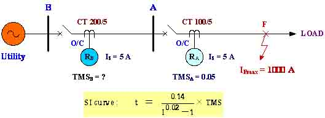
- 1 : เวลาที่รีเลย์ที่ Bus B ทำงาน = 0.35 วินาที
- 2 : เวลาที่รีเลย์ที่ Bus B ทำงาน = 0.5 วินาที
- 3 : เวลาที่รีเลย์ที่ Bus B ทำงาน = 2.97 วินาที
- 4 : เวลาที่รีเลย์ที่ Bus B ทำงาน = 3.32 วินาที
- คำตอบที่ถูกต้อง : 2
- ระบบ
จำหน่ายแบบ Radial System ดังรูป กำหนดให้รีเลย์ทั้งคู่มี Curve
การทำงานแบบ Extremely Inverse (EI) [IEC 60255]
ถ้าปรับตั้งค่ารีเลย์ตามที่ระบุในรูป เมื่อทำการ Discrimination
ระหว่างรีเลย์ที่ Bus A และรีเลย์ที่ Bus B โดยใช้ Grading Margin = 0.35
วินาที จะต้องตั้งค่า TMS ของรีเลย์ที่ Bus B ไว้เท่าใด
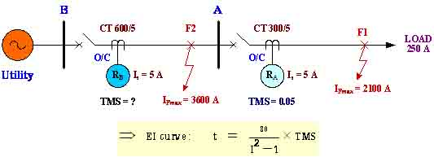
- 1 : รีเลย์ที่ Bus B ตั้งค่า TMS = 0.06
- 2 : รีเลย์ที่ Bus B ตั้งค่า TMS = 0.433
- 3 : รีเลย์ที่ Bus B ตั้งค่า TMS = 0.35
- 4 : รีเลย์ที่ Bus B ตั้งค่า TMS = 0.19
- คำตอบที่ถูกต้อง : 1
- ระบบ
จำหน่ายแบบ Radial System ดังรูป กำหนดให้รีเลย์ทั้งคู่มี Curve
การทำงานแบบ Extremely Inverse (EI) [IEC 60255] ถ้ารีเลย์ที่ Bus B
ถูกตั้งค่าให้เป็น Back up protection ของรีเลย์ที่ Bus A
โดยใช้ค่าส่วนต่างเวลาการทำงาน (Grading Margin) เท่ากับ 0.35 วินาที
เมื่อเกิด Fault ภายใน Primary Zone (F2) ของรีเลย์ที่ Bus B เอง
ถามว่ารีเลย์ที่ Bus B จะทำงานด้วยเวลาเท่าใด
- 1 : 0.433 วินาที
- 2 : 0.350 วินาที
- 3 : 0.137 วินาที
- 4 : 0.260 วินาที
- คำตอบที่ถูกต้อง : 3
- Phase Directional Overcurrent Relay ชนิด Electromechanical ต่อแบบ 90 degree Connection - 30 degree MTA ถ้า Power Factor (PF) ของระบบมีค่าเป็น 1.0 ลักษณะการต่อรีเลย์กระแสเกินแบบนี้ จะให้ค่า Operating Torque เป็นกี่เท่าของ Maximum Torque (Tmax)
- 1 : 0.5 Tmax
- 2 : 0.707 Tmax
- 3 : 0.866 Tmax
- 4 : 0.95 Tmax
- คำตอบที่ถูกต้อง : 1
- รหัสอุปกรณ์ของรีเลย์ผลต่าง (Differential Relay) ตามมาตรฐาน ANSI Code คือข้อใด
- 1 : 50
- 2 : 67
- 3 : 87
- 4 : 78
- คำตอบที่ถูกต้อง : 3
- การใช้งานรีเลย์ผลต่างในวงจรแบบ 3 เฟส จะต้องใช้ CT ทั้งหมดที่ตัว
- 1 : ใช้ CT ทั้งหมด 2 ตัว
- 2 : ใช้ CT ทั้งหมด 4 ตัว
- 3 : ใช้ CT ทั้งหมด 6 ตัว
- 4 : ใช้ CT ทั้งหมด 8 ตัว
- คำตอบที่ถูกต้อง : 3
- การใช้งานรีเลย์ผลต่างในวงจรแบบ 1 เฟส จะต้องใช้ CT ทั้งหมดที่ตัว
- 1 : ใช้ CT ทั้งหมด 1 ตัว
- 2 : ใช้ CT ทั้งหมด 2 ตัว
- 3 : ใช้ CT ทั้งหมด 4 ตัว
- 4 : ใช้ CT ทั้งหมด 6 ตัว
- คำตอบที่ถูกต้อง : 2
- กรณีใดต่อไปนี้ หลักการ Differential Protection ไม่สามารถนำมาใช้งานได้
- 1 : การป้องกัน Bus ในสถานีไฟฟ้าแรงสูง
- 2 : การป้องกันสายส่งไฟฟ้าแรงสูง
- 3 : การป้องกันขดลวดกระตุ้นสนาม (Field) ในเครื่องกำเนิดไฟฟ้าซิงโครนัส
- 4 : การป้องกันหม้อแปลงไฟฟ้าขนาดใหญ่
- คำตอบที่ถูกต้อง : 3
- Through Faults ของระบบการป้องกันแบบ Differential Protection หมายถึงข้อใด
- 1 : External Faults
- 2 : Internal Faults
- 3 : Earth Faults
- 4 : Incipient Fault
- คำตอบที่ถูกต้อง : 1
- กระแส Through Faults ส่งผลต่อการป้องกันแบบ Differential Protection ทั่วไป อย่างไร
- 1 : ทำให้ Differential Relay ทำงานช้าลง
- 2 : ทำให้ Differential Relay ไม่ทำงาน
- 3 : ทำให้ Differential Relay ทำงานผิดพลาด
- 4 : ทำให้ Differential Relay พังเสียหาย
- คำตอบที่ถูกต้อง : 3
- ถ้ากระแส Through Faults มีค่ามากกว่าค่า Pick up ของรีเลย์ ในระบบป้องกันแบบ Differential Protection ทั่วไป จะมีผลต่อระบบป้องกันอย่างไร
- 1 : รีเลย์จะ Trip Faults ที่เกิดขึ้นภายนอกเขตป้องกัน ซึ่งเป็นการทำงานที่ไม่ถูกต้อง
- 2 : รีเลย์จะ Trip เฉพาะกรณีเมื่อเกิด Faults ขึ้นภายในเขตป้องกันเท่านั้น ซึ่งเป็นการทำงานที่ถูกต้อง
- 3 : รีเลย์จะไม่ทำงานเลย
- 4 : จะทำให้รีเลย์พังเสียหาย
- คำตอบที่ถูกต้อง : 1
- Mismatch Current หมายถึงข้อใด
- 1 : Spill Current
- 2 : Differential Current
- 3 : Capacitive Current
- 4 : Fault Current
- คำตอบที่ถูกต้อง : 1
- ค่าเซตติ้งของรีเลย์ผลต่างคิดอย่างไร
- 1 : Is = (I1+I2)/2
- 2 : Is = I1-I2
- 3 : Is = 2I1
- 4 : Is = 2I2
- คำตอบที่ถูกต้อง : 2
- Percentage Differential Relay มีขดลวดภายในทั้งหมดกี่ชุด อะไรบ้าง
- 1 : 1 ชุด คือ Operating Coil
- 2 : 1 ชุด คือ Restraining Coil
- 3 : 2 ชุด คือ Operating Coil และ Restraining Coil
- 4 : 2 ชุด คือ Operating Coil และ Tripping Coil
- คำตอบที่ถูกต้อง : 3
- Differential Relay มีลักษณะสมบัติเป็นแบบ Fixed Percentage ที่ 10% ถ้าเกิดมี Through-Fault Current ขนาด 10 A รีเลย์จะเริ่มทำงานเมื่อมีกระแสผลต่างไหลผ่านขดลวดทำงาน เป็นเท่าใด
- 1 : 0.1 A
- 2 : 1.0 A
- 3 : 5.0 A
- 4 : 10.0 A
- คำตอบที่ถูกต้อง : 1
- Differential Relay มีลักษณะสมบัติเป็นแบบ Fixed Percentage ที่ 20% ถ้าเกิดมี Through-Fault Current ขนาด 15 A รีเลย์จะเริ่มทำงานเมื่อมีกระแสผลต่างไหลผ่านขดลวดทำงาน เป็นเท่าใด
- 1 : 0.2 A
- 2 : 2.0 A
- 3 : 3.0 A
- 4 : 15.0 A
- คำตอบที่ถูกต้อง : 3
- Biased Differential Relay มีกระแสจ่ายมาจาก CT ทั้ง 2 ด้าน เป็น I1 = 5.1 A และ I2 = 4.8 A กระแส Differential มีขนาดเท่าใด
- 1 : 5.05 A
- 2 : 4.95 A
- 3 : 0.3 A
- 4 : 0.2 A
- คำตอบที่ถูกต้อง : 3
- การเกิด CT Mismatch หมายถึงข้อใด
- 1 : การที่ CTs ทุกตัวในวงจร Differential Protection มีคุณสมบัติเหมือนกันทุกประการ
- 2 : การที่มี CTs บางตัวในวงจร Differential Protection มีคุณสมบัติไม่เหมือนกับ CTs ตัวอื่นๆ
- 3 : การที่มี CTs บางตัวในวงจร Differential Protection เกิดสภาวะอิ่มตัว
- 4 : ข้อ ข. และ ข้อ ค. ถูกต้อง
- คำตอบที่ถูกต้อง : 4
- รีเลย์กระแสผลต่างจะทำงานตามเงื่อนไขในข้อใดต่อไปนี้
- 1 : เมื่อรีเลย์ตรวจพบว่ามีกระแสผลต่างเกิดขึ้นในเขตการป้องกัน
- 2 : เมื่อรีเลย์ตรวจพบว่ามีกระแสผลต่างเกิดขึ้นในเขตการป้องกัน ต่ำกว่าค่า Pick up ของรีเลย์
- 3 : เมื่อรีเลย์ตรวจพบว่ามีกระแสผลต่างเกิดขึ้นในเขตการป้องกัน สูงกว่าหรือเท่ากับค่า Pick up ของรีเลย์
- 4 : เมื่อรีเลย์ตรวจพบว่าแรงดันตกคร่อมรีเลย์ต่ำกว่าค่าที่ตั้งไว้
- คำตอบที่ถูกต้อง : 3
- คุณสมบัติที่ดีของระบบการป้องกันแบบ Differential Protection คือ
- 1 : มี Sensitivity สูง
- 2 : มี Security
- 3 : มี Selectivity
- 4 : ถูกทุกข้อ
- คำตอบที่ถูกต้อง : 4
- กรณีใดต่อไปนี้สามารถใช้หลักการ Differential Protection ป้องกันได้
- 1 : การป้องกันเครื่องกำเนิดไฟฟ้าจ่ายโหลดเกิน
- 2 : การป้องกัน Loss of Excitation ในเครื่องกำเนิดไฟฟ้าแบบซิงโครนัส
- 3 : การป้องกัน Internal Faults ภายในหม้อแปลงไฟฟ้า
- 4 : การป้องกัน Over Heating ในมอเตอร์ไฟฟ้า
- คำตอบที่ถูกต้อง : 3
- หม้อแปลงขนาด 200 MVA, 230 kV delta / 115 kV Wye กำหนดให้ CT ด้าน 230 kV ต่อเป็นแบบ Wye และ CT ด้าน 115 kV ต่อเป็นแบบ delta ถ้าCT ด้าน 115 kV เลือกใช้ค่าอัตราทดกระแส 1732/5 ค่าอัตราทดกระแสของ CT ด้าน 230 kV เมื่อใช้กับ Differential Relay ควรมีค่าเป็นเท่าใด
- 1 : 502/5 A
- 2 : 289/8.66 A
- 3 : 289/5 A
- 4 : 866/5 A
- คำตอบที่ถูกต้อง : 3
- ประโยชน์ของการใช้ High Impedance Relay ในการป้องกันแบบ Differential Protection คือข้อใด
- 1 : เพื่อลดผลความคลาดเคลื่อนอันเนื่องมาจาก Burden ของ CT
- 2 : เพื่อแก้ปัญหาการเกิด Mismatch ของ CT
- 3 : เพื่อช่วยไม่ให้ CT เกิดสภาวะอิ่มตัวในแกนเหล็ก
- 4 : เพื่อเพิ่มขนาด Burden ในวงจรด้านทุติยภูมิของ CT
- คำตอบที่ถูกต้อง : 2
- Stabilizing Resistance ในระบบป้องกันแบบ Differential Protection หมายถึงข้อใด
- 1 : ตัวความต้านทานที่ต่อขนานกับรีเลย์ผลต่าง เพื่อเพิ่มค่ากระแสเริ่มทำงาน
- 2 : ตัวความต้านทานที่ต่ออนุกรมกับรีเลย์ผลต่างเพื่อเพิ่มค่ากระแสเริ่มทำงาน
- 3 : ตัวความต้านทานที่ต่อขนานกับรีเลย์ผลต่าง เพื่อช่วยให้รีเลย์มีเสถียรภาพเมื่อเกิดฟอลต์นอกเขตป้องกัน
- 4 : ตัวความต้านทานที่ต่ออนุกรมกับรีเลย์ผลต่าง เพื่อช่วยให้รีเลย์มีเสถียรภาพเมื่อเกิดฟอลต์นอกเขตป้องกัน
- คำตอบที่ถูกต้อง : 4
- หม้อ แปลงเฟสเดียวสองขดลวดขนาดพิกัด 10 MVA, 66 kV / 22 kV มีการป้องกันโดยใช้ Differential Relay หากทางด้านขดลวดแรงสูงใช้ CT ขนาด 200 : 5 และด้านขดลวดแรงต่ำใช้ CT ขนาด 600 : 5 ตามลำดับ ปริมาณค่ากระแสที่ไหลผ่าน Operating Coil ของตัวรีเลย์ที่สภาวะโหลดพิกัดจะมีค่าเท่าใด
- 1 : 0 A
- 2 : 3.79 A
- 3 : 7.58 A
- 4 : 15.16 A
- คำตอบที่ถูกต้อง : 1
- การ เลือกใช้งานหม้อแปลงทดกระแส (CT) สำหรับงานการป้องกันแบบใช้ค่ากระแสผลต่าง (Current Differential) ในอุปกรณ์ไฟฟ้าจะต้องเลือกใช้งานหม้อแปลงทดกระแส Class ใดจึงเหมาะสม
- 1 : เลือกใช้ CT Class 0.2
- 2 : เลือกใช้ CT Class 0.5
- 3 : เลือกใช้ CT Class P
- 4 : เลือกใช้ CT Class PX
- คำตอบที่ถูกต้อง : 4
- การป้องกันแบบ Current Differential Protection สำหรับอุปกรณ์ไฟฟ้าตัวหนึ่ง โดยใช้ Differential Relay (87) แบบธรรมดา ในสภาวะปกติที่ค่ากระแสพิกัดของอุปกรณ์ที่ถูกป้องกัน ทำให้กระแสเข้ารีเลย์ที่มาจาก CT ทั้งสองด้านมีความแตกต่างกัน 0.5 A ถ้าต้องการเน้นป้องกันลัดวงจรภายใน การตั้งค่ารีเลย์ในกรณีใดต่อไปนี้ จึงจะเหมาะสมและไม่ทำให้เกิดความผิดพลาด
- 1 : ตั้งค่ากระแส Setting ที่รีเลย์ 0 A
- 2 : ตั้งค่ากระแส Setting ที่รีเลย์ 0.25 A
- 3 : ตั้งค่ากระแส Setting ที่รีเลย์ 0.5 A
- 4 : ตั้งค่ากระแส Setting ที่รีเลย์ 0.8 A
- คำตอบที่ถูกต้อง : 4
- Biased Differential Relay มีกระแสจ่ายมาจาก CT ทั้ง 2 ด้าน เป็น I1 = 5 A และ I2 = 4.8 A กระแส Restrain มีค่าเท่าใด
- 1 : 5 A
- 2 : 4.9 A
- 3 : 4.8 A
- 4 : 0.2 A
- คำตอบที่ถูกต้อง : 2
- Percentage Differential Relay ใช้ป้องกันหม้อแปลงไฟฟ้าขนาดใหญ่ มีกระแสไหลในสาย Pilot จาก CT ด้านแรงสูงมาเข้ารีเลย์เป็น 5.05 A และจาก CT ด้านแรงต่ำมาเข้ารีเลย์เป็น 5.01 A จงหากระแส Operating Current ของ Relay มีค่าเท่าใด
- 1 : 0.04
- 2 : 5.03
- 3 : 5.00
- 4 : 10.06
- คำตอบที่ถูกต้อง : 1
- หม้อแปลงกำลังหนึ่งเฟสขนาด 23 MVA, 115 kV / 22 kV เลือกใช้CT ด้าน 115 kV และ 22 kV ที่มีอัตราส่วนเป็น 200/5 A และ 1045/5 A ตามลำดับ เมื่อนำเอา Differential Relay GEC Id /< K1 ถูกตั้งไว้ที่ 50% , K2 = K3 = K4 = 20% มาใช้ป้องกันหม้อแปลงดังกล่าว เมื่อเกิด Fault นอกเขตป้องกันหลัง CT ด้าน 22 kV ด้วยกระ แสขนาด 5,225 A ให้คำนวณหา Id และ 100 Id/I2 มีค่าเป็นเท่าใด
- 1 : 0 A และ
- 2 : 5 A และ 5 A
- 3 : 10 A และ 10 A
- 4 : 15 A และ 15 A
- คำตอบที่ถูกต้อง : 1
- หม้อแปลงกำลังหนึ่งเฟสขนาด 23 MVA, 115 kV / 22 kV เลือกใช้ CT ด้าน 115 kV และ 22 kV ที่มีอัตราส่วนเป็น 200/5 A และ 1045/5 A ตามลำดับ เมื่อนำเอา Differential Relay GEC Id / < K1 ถูกตั้งไว้ที่ 50 % , K2 = K3 = K4 = 20 % มาใช้ป้องกันหม้อแปลงดังกล่าว ถ้าเกิด Fault ภายในโซนด้าน 22 kV ด้วยกระแสขนาด 1,045 A ให้คำนวณหา Id และรีเลย์ดังกล่าวจะทำงานหรือไม่
- 1 : Id = 0 A , รีเลย์ไม่ทำงาน
- 2 : Id = 2.5 A , รีเลย์ไม่ทำงาน
- 3 : Id = 5 A , รีเลย์ทำงาน
- 4 : Id = 2.5 A , รีเลย์ทำงาน
- คำตอบที่ถูกต้อง : 3
- ข้อใดกล่าวถึงระบบป้องกันแบบ Pilot Relaying ได้อย่างถูกต้องที่สุด
- 1 : Pilot Relaying มักจะใช้ในการป้องกันสายส่งและบัสร่วมกัน
- 2 : Pilot Relaying อาศัยหลักการทำงานของรีเลย์ระยะทาง ( Distance Relay ) เพียงอย่างเดียว
- 3 : Pilot Relaying มักจะใช้ในการป้องกันสายส่งที่มีความยากมากกว่า 240 กิโลเมตร
- 4 : Pilot Relaying มักจะกำหนดให้เป็นเขตป้องกันชั้นต้น (Primary) โดยไม่มีการป้องกันสำรอง (Backup)
- คำตอบที่ถูกต้อง : 4
- การสื่อสารแบบใด ไม่นิยมใช้งานเป็น Communication Channels ในระบบการป้องกันแบบ Pilot Relaying
- 1 : ระบบดาวเทียม
- 2 : ระบบไมโครเวฟ
- 3 : ระบบคลื่นวิทยุ
- 4 : ระบบโทรศัพท์
- คำตอบที่ถูกต้อง : 1
- Pilot Communication Channels ที่ใช้งานในระบบป้องกันสายส่งปัจจุบันมีทั้งหมดกี่ชนิด
- 1 : 2 ชนิด
- 2 : 3 ชนิด
- 3 : 4 ชนิด
- 4 : 5 ชนิด
- คำตอบที่ถูกต้อง : 3
- การติดตั้งใช้งานระบบ Power Line Carrier ( PLC ) ในทางปฏิบัติ สามารถทำได้กี่วิธี
- 1 : 2 วิธี
- 2 : 3 วิธี
- 3 : 4 วิธี
- 4 : 5 วิธี
- คำตอบที่ถูกต้อง : 2
- Channel Operating Mode ที่มีใช้งานในระบบป้องกันแบบ Pilot Relaying มีทั้งหมดกี่แบบ
- 1 : 2 แบบ
- 2 : 3 แบบ
- 3 : 4 แบบ
- 4 : 5 แบบ
- คำตอบที่ถูกต้อง : 2
- ระบบการป้องกันแบบใดต่อไปนี้ จัดเป็น Unit Protection
- 1 : Pilot Differential Protection
- 2 : Overcurrent and Earth Fault Protection
- 3 : Transformer Protection
- 4 : Busbar Protection
- คำตอบที่ถูกต้อง : 1
- ข้อใดกล่าวถึงระบบ Pilot Protection ได้อย่างถูกต้องที่สุด
- 1 : สามารถใช้ร่วมกับการป้องกันแบบ Differential Protection ได้
- 2 : สามารถใช้ในการป้องกันสายส่งได้
- 3 : ใช้หลักการสื่อสารข้อมูลทางไกลระหว่างต้นทางและปลายทางของสายส่งที่ต้องการป้องกันร่วมกับรีเลย์
- 4 : ถูกทุกข้อ
- คำตอบที่ถูกต้อง : 4
- ช่องทางการสื่อสารข้อมูลระยะไกล (Communication Channel) ของการป้องกันแบบ Pilot Protection ในข้อใด ไม่ต้องใช้สายนำสัญญาณ
- 1 : การสื่อสารโดยใช้สายส่งกำลัง (Power Line Carrier)
- 2 : การสื่อสารโดยใช้คลื่นไมโครเวฟ (Microwave)
- 3 : การสื่อสารโดยใช้ใยแก้วนำแสง (Fiber Optics)
- 4 : การสื่อสารโดยใช้สายโทรศัพท์ (Communication Cable)
- คำตอบที่ถูกต้อง : 2
- คุณสมบัติของ Pilot Wire Relay คือข้อใด
- 1 : ความเร็วของรีเลย์จะแปรผันตรงกับระยะจากจุดที่เกิด Faults ถึงตำแหน่งติดตั้งรีเลย์
- 2 : รีเลย์จะส่งสัญญาณเพื่อทริปเซอร์กิตเบรกเกอร์ที่อยู่ปลายสายทั้ง 2 ด้านทันที ไม่ว่า Faults จะเกิดที่ตำแหน่งใด บนสายส่งในช่วงที่ต้องการป้องกัน
- 3 : รีเลย์ชนิดนี้เหมาะสำหรับการป้องกันเฉพาะสายส่งที่มีความยาวสายส่งมากๆ (Long Line)
- 4 : รีเลย์ชนิดนี้ไม่สามารถใช้ป้องกันระบบสายเคเบิลใต้ดิน (Underground Cable) ได้
- คำตอบที่ถูกต้อง : 2
- ประโยชน์ของระบบการป้องกันแบบ Pilot Relaying คือ
- 1 : เพิ่มความน่าเชื่อถือ ( Reliability ) ของระบบป้องกัน
- 2 : เพิ่มความสามารถแยกแยะ ( Selectivity ) ของระบบป้องกัน
- 3 : เพิ่มความรวดเร็วในการทำงาน ( Speed ) ของระบบป้องกัน
- 4 : ถูกทุกข้อ
- คำตอบที่ถูกต้อง : 4
- การเลือกใช้วิธีการสื่อสารในระบบป้องกันแบบ Pilot Relaying System ขึ้นอยู่กับปัจจัยใดบ้าง
- 1 : พิจารณาจากราคาและความน่าเชื่อถือเป็นสำคัญ
- 2 : พิจารณาจากจำนวน Terminals และระยะทางของสายส่งเป็นสำคัญ
- 3 : พิจารณาจากจำนวนช่องสัญญาณที่ต้องการใช้งานและความถี่ของสัญญาณเป็นสำคัญ
- 4 : ถูกทุกข้อ
- คำตอบที่ถูกต้อง : 4
- ข้อใดกล่าวถึงคุณสมบัติของระบบ Fiber Optic Link ได้อย่างถูกต้องที่สุด
- 1 : เป็นระบบที่มีจำนวนช่องสัญญาณในการสื่อสารมาก จึงเหมาะที่จะใช้งานร่วมกับระบบสื่อสารอื่นในสถานีไฟฟ้า
- 2 : เป็นระบบที่ไม่มีผลกระทบจากสนามไฟฟ้าและสนามแม่เหล็กรบกวน จึงมีความเชื่อถือได้สูง
- 3 : เป็นระบบที่ต้องมีตัวแปลงรหัสสื่อสาร มีประสิทธิภาพสูง แต่มีราคาถูกว่าการสื่อสารแบบอื่น
- 4 : ข้อ ก และ ข ถูกต้อง
- คำตอบที่ถูกต้อง : 4
- ข้อดีของระบบสื่อสารโดยใช้คลื่นไมโครเวฟ ( Microwave ) ในการป้องกันแบบ Pilot Protection คือ
- 1 : มีความคล่องตัวในการใช้งาน สามารถนำไปประยุกต์ใช้กับระบบการป้องกันแบบอื่นได้
- 2 : มีความไวต่อสัญญาณรบกวนจากภายนอก เช่น จากฟ้าผ่า ทำให้การตรวจจับ Faults เป็นไปอย่างรวดเร็ว
- 3 : สามารถส่งสัญญาณควบคุมการทำงานของรีเลย์ระยะทางได้ในช่วงระยะทางที่ไกลๆ
- 4 : ไม่มีผลกระทบจากกระแส Faults ในระบบ จึงทำให้โอกาสที่รีเลย์ระยะทางทำงานผิดพลาดมีน้อย
- คำตอบที่ถูกต้อง : 4
- ข้อดีของระบบสื่อสารด้วย Fiber Optic Link ในระบบป้องกันแบบ Pilot Protection คือ
- 1 : มีช่องสัญญาณสื่อสารจำนวนมาก
- 2 : ไม่มีผลกระทบจากการรบกวนทางแม่เหล็กไฟฟ้า เมื่อเกิด Faults
- 3 : มีความหลากหลายในการประยุกต์ใช้งาน
- 4 : ถูกทุกข้อ
- คำตอบที่ถูกต้อง : 4
- ข้อใดกล่าวถึง Current Differential Protection ผิดไปจากความเป็นจริง
- 1 : สามารถตรวจสอบได้ว่าเป็น Faults ชนิดใด
- 2 : สามารถตรวจจับ High Resistance Faults ได้
- 3 : จัดเป็น Unit Protection จึงไม่มีปัญหาเรื่อง Coordination
- 4 : ไม่ต้องใช้ Voltage Transformer
- คำตอบที่ถูกต้อง : 1
- รูปแบบใดต่อไปนี้คือรูปแบบของระบบ Pilot Relaying
- 1 : Permissive Overreaching Transfer Tripping
- 2 : Current Differential Scheme
- 3 : Zone Acceleration Scheme
- 4 : ถูกทุกข้อ
- คำตอบที่ถูกต้อง : 4
- Pilot Relaying Scheme รูปแบบใดต่อไปนี้ ใช้ Tripping Function เป็นแบบ Under-reach (RU)
- 1 : Directional Comparison Blocking Scheme
- 2 : Permissive Overreaching Transferred Trip ( POTT ) Scheme
- 3 : Zone Acceleration Scheme
- 4 : Current Difference Scheme
- คำตอบที่ถูกต้อง : 3
- Pilot Relaying Scheme รูปแบบใดต่อไปนี้ ใช้ Tripping Function เป็นแบบ Over-reach (RO)
- 1 : Direct Underreaching Transferred Trip ( DUTT ) Scheme
- 2 : Permissive Overreaching Transferred Trip ( POTT ) Scheme
- 3 : Zone Acceleration Scheme
- 4 : Current Difference Scheme
- คำตอบที่ถูกต้อง : 2
- Pilot Relaying Scheme รูปแบบใดต่อไปนี้ ใช้ Tripping Function ทั้งแบบ Under-reach (RU) และ Over-reach (RO) ในระบบเดียวกัน
- 1 : Direct Underreaching Transferred Trip ( DUTT ) Scheme
- 2 : Directional Comparison Blocking Scheme
- 3 : Permissive Overreaching Transferred Trip ( POTT ) Scheme
- 4 : Permissive Underreaching Transferred Trip ( PUTT ) Scheme
- คำตอบที่ถูกต้อง : 4
- Pilot Relaying Scheme รูปแบบใดต่อไปนี้ มี Blocking Function ในตัวเอง
- 1 : Direct Underreaching Transferred Trip ( DUTT ) Scheme
- 2 : Directional Comparison Blocking Scheme
- 3 : Permissive Overreaching Transferred Trip ( POTT ) Scheme
- 4 : Permissive Underreaching Transferred Trip ( PUTT ) Scheme
- คำตอบที่ถูกต้อง : 2
- Pilot Relaying Scheme รูปแบบใดต่อไปนี้ ไม่ต้องใช้ Communication Channels
- 1 : Zone Acceleration Scheme
- 2 : Zone 1 Extension Scheme
- 3 : Permissive Overreaching Transferred Trip ( POTT ) Scheme
- 4 : Permissive Underreaching Transferred Trip ( PUTT ) Scheme
- คำตอบที่ถูกต้อง : 2
- Pilot Relaying Scheme รูปแบบใดต่อไปนี้ เป็น Scheme ที่ Insecure เพราะจะมีการ Trip Faults ที่เกิดขึ้นบนสายส่งที่อยู่ภายนอก Protective Zone นั้นๆ
- 1 : Zone Acceleration Scheme
- 2 : Zone 1 Extension Scheme
- 3 : Permissive Overreaching Transferred Trip ( POTT ) Scheme
- 4 : Permissive Underreaching Transferred Trip ( PUTT ) Scheme
- คำตอบที่ถูกต้อง : 2
- Communication Channels แบบใดต่อไปนี้ ไม่เหมาะที่จะใช้เป็นช่องทางส่งสัญญาณ Trip ในระบบ Pilot Relaying
- 1 : Power Line Carrier
- 2 : Microwave System
- 3 : Fiber Optic Link
- 4 : Communication Cable
- คำตอบที่ถูกต้อง : 1
- Communication Channels แบบใดต่อไปนี้ เหมาะที่จะใช้เป็นช่องทางส่งสัญญาณ Blocking ในระบบ Pilot Relaying
- 1 : Microwave System
- 2 : Fiber Optic Link
- 3 : Power Line Carrier
- 4 : Communication Cable
- คำตอบที่ถูกต้อง : 3
- คุณสมบัติของ Channel Operating Modes แบบ Keyed Carrier คือ
- 1 : สถานะเป็นแบบปกติปิด ( N/C )
- 2 : ปกติจะใช้กับฟังก์ชันการสั่ง Block รีเลย์
- 3 : ใช้สัญญาณ RF กำลังงาน 10 W หรือ 100 W แล้วแต่กรณี
- 4 : ถูกทุกข้อ
- คำตอบที่ถูกต้อง : 4
- คุณสมบัติของ Channel Operating Modes แบบ Frequency Shift Keying คือ
- 1 : ใช้การทำงานด้วยการเปลี่ยนความถี่จากสถานะปกติไปเป็นสถานะคำสั่ง
- 2 : สัญญาณปกติสามารถเป็นได้ทั้ง Guard Signal หรือ Trip Permission Signal
- 3 : ช่องสัญญาณแบบ FSK นี้ สามารถใช้ได้ทั้งการป้องกันสายส่ง และการป้องกันอุปกรณ์
- 4 : ถูกทุกข้อ
- คำตอบที่ถูกต้อง : 4
- Pilot Relaying Scheme รูปแบบใดต่อไปนี้ ต้องอาศัยสัญญาณควบคุมจาก Autoreclose ในการทำงาน
- 1 : Zone Acceleration Scheme
- 2 : Zone 1 Extension Scheme
- 3 : Permissive Overreaching Transferred Trip ( POTT ) Scheme
- 4 : Directional Comparison Blocking Scheme
- คำตอบที่ถูกต้อง : 2
- หากต้องการส่งสัญญาณ Guard ตลอดเวลา ต้องเลือกใช้ Channel Operating Modes แบบใดจึงเหมาะสม
- 1 : Keyed Carrier
- 2 : Frequency Shift Keying
- 3 : Single Sideband Suppressed Carrier
- 4 : ถูกทุกข้อ
- คำตอบที่ถูกต้อง : 2
- Pilot Relaying System ใช้ในการป้องกันอะไรเป็นสำคัญ
- 1 : ใช้ป้องกันหม้อแปลงไฟฟ้า
- 2 : ใช้ป้องกันสายส่งและสายจำหน่ายกำลังไฟฟ้า
- 3 : ใช้ป้องกันมอเตอร์ไฟฟ้า
- 4 : ใช้ป้องกันเครื่องกำเนิดไฟฟ้า
- คำตอบที่ถูกต้อง : 2
- Pilot Relaying System แบบ Current Difference Scheme เหมาะสำหรับใช้ป้องกันสายจำหน่าย เพราะเหตุใด
- 1 : สามารถใชักับระบบ Multi-Terminal Lines ได้
- 2 : สามารถตรวจจับ High Resistance Fault ได้
- 3 : ไม่มีปัญหาเรื่อง Series Compensation
- 4 : ถูกทุกข้อ
- คำตอบที่ถูกต้อง : 4
- ข้อดีของ Permissive Underreach Transfer Tripping (PUTT)
- 1 : ระบบมีความน่าเชื่อถือเนื่องจากหากเกิดฟอลต์ที่ปลายข้างใดข้างหนึ่งจะไม่สั่งตัดวงจร ( Trip ) อย่างทันทีทันใด
- 2 : ระบบจะสั่งตัดวงจรอย่างรวดเร็วถ้าได้รับสัญญาณจากฝั่งที่เห็นตำแหน่งของฟอลต์
- 3 : ระบบจะมีความมั่นคง (security) เพราะจะทริพฟอล์ตที่เกิดขึ้นภายนอกเขตการป้องกันด้วย
- 4 : ไม่มีข้อใดถูก
- คำตอบที่ถูกต้อง : 2
- ข้อเสียของระบบการสื่อสารโดยใช้สายส่งกำลัง ( Power Line Carrier : PLC ) คือ
- 1 : ไม่มีความคล่องตัวในการนำไปประยุกต์ใช้งานกับระบบการป้องกันแบบอื่น
- 2 : มีความไวต่อสัญญาณรบกวนจากภายนอก เช่น สัญญาณรบกวนจากฟ้าผ่า อาจทำให้ระบบทำงานผิดพลาดได้
- 3 : มีความกว้างของช่วงสัญญาณในการส่งแคบเกินไป
- 4 : ต้องใช้ Coupling Capacitor ต่อขนานกับระบบ อาจทำให้เกิดการสูญเสียขึ้นในระบบ
- คำตอบที่ถูกต้อง : 2
- Blocking Mode หมายถึง
- 1 : การส่งสัญญาณจากรีเลย์ด้านหนึ่งไปยังอีกด้านหนึ่งของสายส่ง เพื่อกันการทริปของ Circuit Breaker ที่ฝั่งตรงข้าม
- 2 : การส่งสัญญาณจากรีเลย์ด้านหนึ่งไปยังอีกด้านหนึ่งของสายส่ง เพื่อทำการทริป Circuit Breaker ฝั่งตรงข้าม
- 3 : การส่งสัญญาณจากรีเลย์ด้านหนึ่งไปยังอีกด้านหนึ่งของสายส่ง เพื่อสั่งทริป Circuit Breaker แบบ Trip ซ้ำ เพื่อความแน่นอน
- 4 : การส่งสัญญาณ Guarding จากรีเลย์ด้านหนึ่งไปยังอีกด้านหนึ่งของสายส่ง เพื่อป้องกันการทริปโดยไม่จำเป็น
- คำตอบที่ถูกต้อง : 1
- ข้อใดกล่าวถึงคุณสมบัติของระบบ Fiber Optic Links ได้อย่างถูกต้องที่สุด
- 1 : เป็นระบบที่มีจำนวนช่องสัญญาณในการสื่อสารมาก จึงเหมาะที่จะใช้งานร่วมกับระบบสื่อสารอื่นในสถานีไฟฟ้า
- 2 : เป็นระบบที่ไม่มีผลกระทบจากสนามไฟฟ้าและสนามแม่เหล็กรบกวน จึงมีความเชื่อถือได้สูง
- 3 : เป็นระบบที่ต้องมีตัวแปลงรหัสสื่อสาร มีประสิทธิภาพสูง แต่มีราคาแพงมาก
- 4 : ถูกทุกข้อ
- คำตอบที่ถูกต้อง : 4
- คุณสมบัติของ Carrier Current Pilot คือข้อใด
- 1 : รีเลย์เพียงตัวเดียวสามารถควบคุมการเกิดฟอลต์ได้ทั้ง 3 เฟส
- 2 : ในระบบสายส่งจะต้องมีการติดตั้งตัวรับสัญญาณ และตัวส่งสัญญาณแยกคนละสถานี โดยใช้สัญญาณโทรศัพท์ติดต่อระหว่างกัน
- 3 : การปรับความถี่ของสถานีรับ ส่งสัญญาณที่ปลายสายแต่ละด้านต้องเท่ากัน
- 4 : รีเลย์ชนิดนี้มีความน่าเชื่อถือ (Reliable) ดีกว่า Pilot Wire Relay เหมาะสำหรับป้องกันระบบสายส่งแบบ Short Line
- คำตอบที่ถูกต้อง : 3
- การปรับตั้ง Tripping Function ให้เป็นแบบ Under-reach (RU) ในระบบ Pilot Relaying จะต้องทำอย่างไร
- 1 : ปรับตั้งค่าการมองเห็นของรีเลย์ทั้งสองด้านของช่วงสายส่งที่ต้องการป้องกันให้เห็นไม่เกินความยาวสายส่งในช่วงนั้น แต่ต้องมีช่วงที่ Overlap กัน
- 2 : ปรับตั้งค่าการมองเห็นของรีเลย์ทั้งสองด้านของช่วงสายส่งที่ต้องการป้องกันให้เห็นเลยความยาวสายส่งในช่วงนั้นไป
- 3 : ปรับ ตั้งค่าการมองเห็นของรีเลย์ด้านหนึ่งให้เห็นไม่เกินความยาวสายส่งในช่วงนั้น แต่การมองเห็นของรีเลย์ฝั่งตรงข้ามให้เลยความยาวสายส่งในช่วงนั้นไป
- 4 : ปรับตั้งค่าการมองเห็นของรีเลย์ทั้งสองด้านของช่วงสายส่งที่ต้องการป้องกันให้เห็นไม่เกิน 48% ของความยาวสายส่งในช่วงนั้น
- คำตอบที่ถูกต้อง : 1
- การปรับตั้ง Tripping Function ให้เป็นแบบ Over-reach (RO) ในระบบ Pilot Relaying จะต้องทำอย่างไร
- 1 : ปรับตั้งค่าการมองเห็นของรีเลย์ทั้งสองด้านของช่วงสายส่งที่ต้องการป้องกันให้เห็นไม่เกินความยาวสายส่งในช่วงนั้น แต่ต้องมีช่วงที่ Overlap กัน
- 2 : ปรับตั้งค่าการมองเห็นของรีเลย์ทั้งสองด้านของช่วงสายส่งที่ต้องการป้องกันให้เห็นเลยความยาวสายส่งในช่วงนั้นไป
- 3 : ปรับ ตั้งค่าการมองเห็นของรีเลย์ด้านหนึ่งให้เห็นไม่เกินความยาวสายส่งในช่วงนั้น แต่การมองเห็นของรีเลย์ฝั่งตรงข้ามให้เลยความยาวสายส่งในช่วงนั้นไป
- 4 : ปรับตั้งค่าการมองเห็นของรีเลย์ทั้งสองด้านของช่วงสายส่งที่ต้องการป้องกันให้เห็นไม่เกิน 48% ของความยาวสายส่งในช่วงนั้น
- คำตอบที่ถูกต้อง : 2
- สายส่งไฟฟ้าแรงสูง 230 kV เชื่อมต่อระหว่างสถานีไฟฟ้าเส้นหนึ่ง มีค่าอิมพีแดนซ์ปรากฏทางด้าน Secondary เป็น Z = 2 + j16 Ohm ถูกป้องกันด้วยระบบ Pilot Relaying แบบ DUTT Scheme มี Tripping Function เป็นแบบ Under-reach ปรับตั้งไว้ที่ 80% โดยใช้รีเลย์แบบ Admittance ทั้งสองด้านของสายส่ง การตั้งค่ารีเลย์ในข้อใดต่อไปนี้ถูกต้อง
- 1 : รีเลย์ฝั่งหนึ่งปรับตั้งค่าไว้ที่ Z1 = 1.6 + j12.8 Ohm , รีเลย์ฝั่งตรงข้ามปรับตั้งค่าไว้ที่ Z2 = 2 + j16 Ohm
- 2 : รีเลย์ฝั่งหนึ่งปรับตั้งค่าไว้ที่ Z1 = 2 + j16 Ohm , รีเลย์ฝั่งตรงข้ามปรับตั้งค่าไว้ที่ Z2 = 1.6 + j12.8 Ohm
- 3 : รีเลย์ทั้งสองฝั่งปรับตั้งค่าไว้เท่ากัน คือ Z1 = Z2 = 1.6 + j12.8 Ohm
- 4 : รีเลย์ทั้งสองฝั่งปรับตั้งค่าไว้เท่ากัน คือ Z1 = Z2 = 2 + j16 Ohm
- คำตอบที่ถูกต้อง : 3
- สายส่งไฟฟ้าแรงสูง 230 kV เชื่อมต่อระหว่างสถานีไฟฟ้าเส้นหนึ่ง มีค่าอิมพีแดนซ์ปรากฏทางด้าน Secondary เป็น Z = 2 + j14 Ohm ถูกป้องกันด้วยระบบ Pilot Relaying แบบ POTT Scheme มี Tripping Function เป็นแบบ Over-reach ปรับตั้งไว้ที่ 150% โดยใช้รีเลย์แบบ Admittance ทั้งสองด้านของสายส่ง การตั้งค่ารีเลย์ในข้อใดต่อไปนี้ถูกต้อง
- 1 : รีเลย์ฝั่งหนึ่งปรับตั้งค่าไว้ที่ Z1 = 3 + j21 Ohm , รีเลย์ฝั่งตรงข้ามปรับตั้งค่าไว้ที่ Z2 = 2 + j14 Ohm
- 2 : รีเลย์ฝั่งหนึ่งปรับตั้งค่าไว้ที่ Z1 = 2 + j14 Ohm , รีเลย์ฝั่งตรงข้ามปรับตั้งค่าไว้ที่ Z2 = 3 + j21 Ohm
- 3 : รีเลย์ทั้งสองฝั่งปรับตั้งค่าไว้เท่ากัน คือ Z1 = Z2 = 2 + j14 Ohm
- 4 : รีเลย์ทั้งสองฝั่งปรับตั้งค่าไว้เท่ากัน คือ Z1 = Z2 = 3 + j21 Ohm
- คำตอบที่ถูกต้อง : 4
- ระบบ Pilot Relaying ดังรูป เป็นการใช้ Pilot Communication Channels สำหรับสื่อสารด้วยวิธีใด
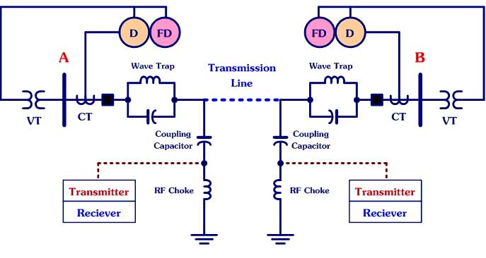
- 1 : การสื่อสารโดยใช้ไมโครเวฟ ( Microwave )
- 2 : การสื่อสารโดยใช้สายส่งกำลัง ( Power Line Carrier )
- 3 : การสื่อสารโดยใช้ใยแก้วนำแสง ( Fiber Optics )
- 4 : การสื่อสารโดยใช้สายโทรศัพท์ ( Communication Cable or Pilot Wire )
- คำตอบที่ถูกต้อง : 2
- ในระบบ Pilot Relaying รูปแบบ Communication Channels ใดต่อไปนี้ ใช้วิธีการสื่อสารผ่านทางสายส่งกำลังไฟฟ้า
- 1 : Microwave
- 2 : Fiber Optics
- 3 : Power Line Carrier
- 4 : Communication Cable or Pilot Wire
- คำตอบที่ถูกต้อง : 3
- สายส่งไฟฟ้าแรงสูง 230 kV เชื่อมต่อระหว่างสถานีไฟฟ้าเส้นหนึ่ง มีค่าอิมพีแดนซ์ปรากฏทางด้าน Secondary เป็น Z = 4 + j20 Ohm ถูกป้องกันด้วยระบบ Pilot Relaying แบบ DUTT Scheme มี Tripping Function เป็นแบบ Under-reach ปรับตั้งไว้ที่ 85% โดยใช้รีเลย์แบบ Admittance ทั้งสองด้านของสายส่ง การตั้งค่ารีเลย์ในข้อใดต่อไปนี้ถูกต้อง
- 1 : รีเลย์ฝั่งหนึ่งปรับตั้งค่าไว้ที่ Z1 = 4 + j20 Ohm , รีเลย์ฝั่งตรงข้ามปรับตั้งค่าไว้ที่ Z2 = 3.4 + j17 Ohm
- 2 : รีเลย์ฝั่งหนึ่งปรับตั้งค่าไว้ที่ Z1 = 3.4 + j17 Ohm , รีเลย์ฝั่งตรงข้ามปรับตั้งค่าไว้ที่ Z2 = 4 + j20 Ohm
- 3 : รีเลย์ทั้งสองฝั่งปรับตั้งค่าไว้เท่ากัน คือ Z1 = Z2 = 4 + j20 Ohm
- 4 : รีเลย์ทั้งสองฝั่งปรับตั้งค่าไว้เท่ากัน คือ Z1 = Z2 = 3.4 + j17 Ohm
- คำตอบที่ถูกต้อง : 4
- สาย
ส่งกำลังไฟฟ้าแรงดันสูงแห่งหนึ่ง ในช่วงระหว่างสถานีไฟฟ้า A และ B
ใช้การป้องกันด้วย Pilot Relaying แบบ Mho Relays มีคุณลักษณะสมบัติแสดงบน
R-X Diagram ดังรูป การตั้งค่ารีเลย์ในลักษณะนี้ มีชื่อเรียกว่าอย่างไร
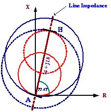
- 1 : Permissive Under-reaching Transferred Trip Scheme
- 2 : Permissive Over-reaching Transferred Trip Scheme
- 3 : Directional Comparison Blocking Scheme
- 4 : Direct Under-reaching Transferred Trip Scheme
- คำตอบที่ถูกต้อง : 1
- รูปแบบของระบบ Pilot Relaying แบบใด ที่มี Time Delay Backup สามารถใช้ทำ Co-ordination กับรีเลย์ Zone อื่นได้
- 1 : DUTT Scheme
- 2 : Zone1 Extension Scheme
- 3 : PUTT Scheme
- 4 : Current Differential Scheme
- คำตอบที่ถูกต้อง : 3
- สายส่งไฟฟ้าแรงสูง 230 kV เชื่อมต่อระหว่างสถานีไฟฟ้าเส้นหนึ่ง ถูกป้องกันด้วยระบบ Pilot Relaying แบบ DUTT Scheme มี Tripping Function เป็นแบบ Under-reach ปรับตั้งไว้ที่ 85% โดยใช้รีเลย์แบบ Admittance ทั้งสองด้านของสายส่ง ถ้าระบบสื่อสารมีความสมบูรณ์ กรณีใดต่อไปนี้ระบบป้องกันจะไม่ทำงาน
- 1 : เมื่อเกิดลัดวงจรบนสายส่งในช่วงที่ถูกป้องกัน แล้วมีรีเลย์เพียงฝั่งเดียวที่สามารถตรวจจับ Fault ที่เกิดขึ้นได้
- 2 : เมื่อเกิดลัดวงจรบนสายส่งในช่วงที่ถูกป้องกัน แล้วรีเลย์ทั้งสองฝั่งสามารถตรวจจับ Fault ที่เกิดขึ้นได้
- 3 : เมื่อ เกิดลัดวงจรบนสายส่งในช่วงที่ถูกป้องกันพร้อมกัน 2 จุด ณ ตำแหน่งใกล้กับสถานีไฟฟ้าทั้งสองฝั่ง แล้วรีเลย์แต่ละฝั่งสามารถตรวจจับ Fault ที่เกิดขึ้นได้
- 4 : เมื่อเกิดลัดวงจรบนสายส่ง แต่รีเลย์ทั้งสองฝั่งไม่สามารถมองเห็น Fault ที่เกิดขึ้นได้
- คำตอบที่ถูกต้อง : 4
- รูปที่แสดงด้านล่าง จัดเป็นรูปแบบของระบบ Pilot Relaying Scheme แบบใด
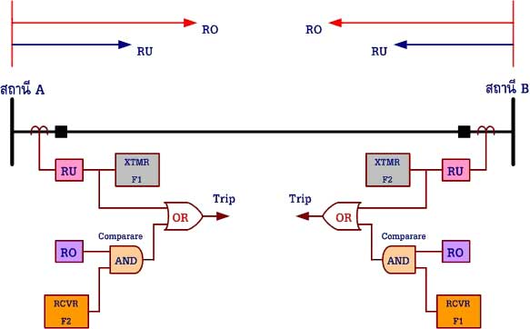
- 1 : Directional Comparison Blocking Scheme
- 2 : Direct Under-reaching Transfer Tripping Scheme
- 3 : Permissive Over-reaching Transfer Tripping Scheme
- 4 : Permissive Under-reaching Transfer Tripping Scheme
- คำตอบที่ถูกต้อง : 4
- ระบบป้องกันสายส่งแบบ Pilot Protection มีแผนภาพแสดงดังรูป การป้องกันรูปแบบนี้มีชื่อเรียกว่าอะไร
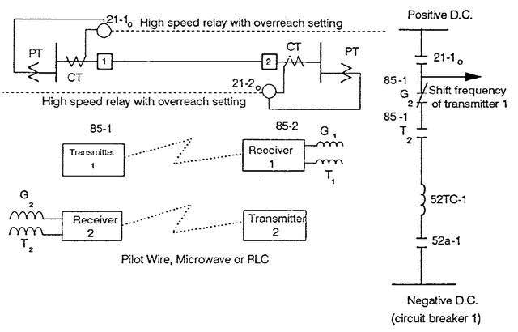
- 1 : Directional Comparison Blocking
- 2 : Permissive Underreach Transfer Tripping
- 3 : Permissive Overreach Transfer Tripping
- 4 : Direct Transfer Tripping
- คำตอบที่ถูกต้อง : 3
- แผนภาพดังรูปด้านล่าง จัดเป็นรูปแบบของระบบ Pilot Relaying Scheme แบบใด
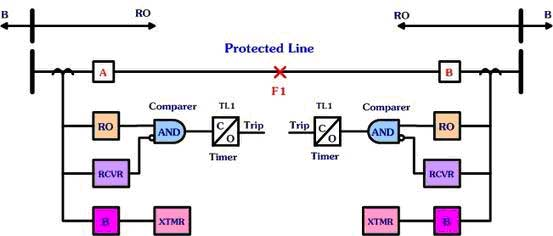
- 1 : Directional Comparison Blocking Scheme
- 2 : Direct Underreach Transfer Tripping Scheme
- 3 : Permissive Overreach Transfer Tripping Scheme
- 4 : Permissive Underreaching Transfer Tripping Scheme
- คำตอบที่ถูกต้อง : 1
- การป้องกันสายส่งกำลังไฟฟ้าแรงดันสูง โดยทั่วไปจะใช้รีเลย์ประเภทใดในการป้องกัน
- 1 : Voltage Relay
- 2 : Overcurrent Relay
- 3 : Differential Relay
- 4 : Distance Relay
- คำตอบที่ถูกต้อง : 4
- สัญญาณ Input ที่ป้อนให้กับรีเลย์ระยะทาง (Distance Relay) มาจากอุปกรณ์ใดต่อไปนี้
- 1 : CT
- 2 : VT
- 3 : Instrument
- 4 : CT และ VT
- คำตอบที่ถูกต้อง : 4
- การวิเคราะห์การทำงานของรีเลย์ระยะทางโดยทั่วไปนิยมใช้การวิเคราะห์บนแผนภาพ ( Diagram ) รูปแบบใด
- 1 : R-X Diagram
- 2 : V-I Diagram
- 3 : P.F. Diagram
- 4 : I-T Diagram
- คำตอบที่ถูกต้อง : 1
- การ ปรับตั้งสำหรับ Ground Fault Distance Relay ที่ใช้ในการป้องกันเมื่อเกิด Single Line to Ground Fault (SLG) เราจะต้องนำค่าพารามิเตอร์ใดมาพิจารณาประกอบด้วย
- 1 : Power Factor
- 2 : Compensation Factor
- 3 : Full Load Current
- 4 : Frequency Factor
- คำตอบที่ถูกต้อง : 2
- ข้อใดคือคุณลักษณะสมบัติของ Impedance Relay
- 1 : เป็นรีเลย์ระยะทางแบบไม่มีทิศทาง
- 2 : ใช้ค่าขนาดของอิมพีแดนซ์อย่างเดียวในการปรับตั้งรีเลย์
- 3 : ถ้าค่าอิมพีแดนซ์ที่วัดได้มากกว่าค่าอิมพีแดนซ์ปรับตั้งรีเลย์จะทำงาน
- 4 : เป็นรีเลย์ระยะทางแบบไม่มีทิศทางและใช้ค่าขนาดของอิมพีแดนซ์อย่างเดียวในการปรับตั้งรีเลย์
- คำตอบที่ถูกต้อง : 4
- ข้อใดคือคุณลักษณะสมบัติของ Mho Relay
- 1 : Impedance ส่วนมากตกอยู่ใน Quadrant ที่ 1 บน R-X diagram
- 2 : เป็นรีเลย์แบบมีทิศทางในตัวเอง
- 3 : ลักษณะเส้นรอบวงบน R-X diagram เลยจุด Origin
- 4 : Impedance ส่วนมากตกอยู่ใน Quadrant ที่ 1 บน R-X diagramและเป็นรีเลย์แบบมีทิศทางในตัวเอง
- คำตอบที่ถูกต้อง : 4
- การตั้งค่ารีเลย์ระยะทางแบบ Step Distance Protection รีเลย์ Zone 1 จะต้องปรับตั้งเวลาการทำงานเป็นแบบใด
- 1 : หน่วงเวลาไว้ 0.3 วินาที
- 2 : หน่วงเวลาไว้ 0.5 วินาที
- 3 : หน่วงเวลาไว้ 1.0 วินาที
- 4 : ปรับให้ทำงานแบบทันที (Instantaneous)
- คำตอบที่ถูกต้อง : 4
- การตั้งค่ารีเลย์ระยะทางแบบ Step Distance Protection รีเลย์ Zone 1 ควรปรับตั้งให้ป้องกันสายส่งในระยะประมาณเท่าใด
- 1 : 40 50 % ของความยาวสายส่งในช่วงที่ต้องการป้องกัน
- 2 : 50 60 % ของความยาวสายส่งในช่วงที่ต้องการป้องกัน
- 3 : 80 90 % ของความยาวสายส่งในช่วงที่ต้องการป้องกัน
- 4 : 120 % ของความยาวสายส่งในช่วงที่ต้องการป้องกัน
- คำตอบที่ถูกต้อง : 3
- การตั้งค่ารีเลย์ระยะทางแบบ Step Distance Protection รีเลย์ Zone 2 ควรปรับตั้งให้ป้องกันสายส่งในระยะประมาณเท่าใด
- 1 : 90 100 % ของความยาวสายส่งในช่วงที่ต้องการป้องกัน
- 2 : 120 150 % ของความยาวสายส่งในช่วงที่ต้องการป้องกัน
- 3 : 180 200 % ของความยาวสายส่งในช่วงที่ต้องการป้องกัน
- 4 : 250 300 % ของความยาวสายส่งในช่วงที่ต้องการป้องกัน
- คำตอบที่ถูกต้อง : 2
- การตั้งค่ารีเลย์ระยะทางแบบ Step Distance Protection รีเลย์ Zone 2 จะต้องปรับตั้งแบบหน่วงเวลาการทำงานไว้ที่ช่วงเวลาประมาณเท่าใด
- 1 : หน่วงเวลาไว้ประมาณ 0.3 วินาที
- 2 : หน่วงเวลาไว้ประมาณ 0.8 วินาที
- 3 : หน่วงเวลาไว้ประมาณ 1.0 วินาที
- 4 : หน่วงเวลาไว้ประมาณ 1.5 วินาที
- คำตอบที่ถูกต้อง : 1
- การตั้งค่ารีเลย์ระยะทางแบบ Step Distance Protection รีเลย์ Zone 3 จะต้องปรับตั้งแบบหน่วงเวลาการทำงานไว้ที่ช่วงเวลาประมาณเท่าใด
- 1 : หน่วงเวลาไว้ประมาณ 0.3 0.5 วินาที
- 2 : หน่วงเวลาไว้ประมาณ 0.5 - 1.0 วินาที
- 3 : หน่วงเวลาไว้ประมาณ 1.0 - 3.0 วินาที
- 4 : หน่วงเวลาไว้ประมาณ 3.0 - 5.0 วินาที
- คำตอบที่ถูกต้อง : 2
- รี เลย์ระยะทางที่ใช้ป้องกันสายส่ง มี CT Ratio = 1000/5 A และ VT Ratio = 115 kV / 110 V ค่าตัวคูณสำหรับการปรับตั้งค่าการทำงานของรีเลย์ คือข้อใด
- 1 : 0.5130
- 2 : 0.1913
- 3 : 0.1713
- 4 : 0.0213
- คำตอบที่ถูกต้อง : 2
- รีเลย์ใดต่อไปนี้ จัดอยู่ในกลุ่มของ Distance Relays
- 1 : Offset-Mho Relay
- 2 : Reactance Relay
- 3 : Mho Relay
- 4 : ถูกทุกข้อ
- คำตอบที่ถูกต้อง : 4
- Impedance Relay เหมาะสำหรับใช้ป้องกันการลัดวงจรระหว่างเฟสของสายส่งที่มีความยาวสายแบบใด
- 1 : สายส่งที่มีความยาวสายแบบช่วงสั้น
- 2 : สายส่งที่มีความยาวสายแบบปานกลาง
- 3 : สายส่งที่มีความยาวสายแบบช่วงยาว
- 4 : สายส่งที่มีความยาวสายแบบยาวมาก
- คำตอบที่ถูกต้อง : 2
- การ ใช้งานรีเลย์ระยะทาง (Distance Relay) เพื่อป้องกันสายส่งกำลังไฟฟ้า เหตุใดจึงต้องมีการแบ่งโซนการป้องกัน (Zone of Protections) ออกเป็นส่วนๆ
- 1 : เพื่อให้สามารถป้องกันสายส่งได้ตลอดทั้งช่วงความยาวสายที่ต้องการป้องกัน
- 2 : เพื่อให้เป็น Back Up Protection ให้สายส่งเส้นถัดไป
- 3 : เพื่อให้การป้องกันมีประสิทธิภาพ กำจัด Faults ได้รวดเร็ว มีความเชื่อถือได้สูง แยกแยะได้ถูกต้อง
- 4 : ถูกทุกข้อ
- คำตอบที่ถูกต้อง : 4
- รีเลย์ระยะทางที่เหมาะสำหรับใช้ป้องกันสายส่งกำลังไฟฟ้าที่มีความยาวสายแบบยาวมากๆ คือ รีเลย์แบบใด
- 1 : แบบ Impedance Relay
- 2 : แบบ Lenticular Relay
- 3 : แบบ Quadrilateral Relay
- 4 : แบบ Mho Relay
- คำตอบที่ถูกต้อง : 2
- รีเลย์ชนิดใดเหมาะสำหรับใช้ตรวจจับการเกิด Faults ในระบบสายส่งกำลังไฟฟ้าแรงดันสูง
- 1 : Distance Relays
- 2 : Over Voltage Relays
- 3 : Directional Power Relays
- 4 : Under Voltage Relays
- คำตอบที่ถูกต้อง : 1
- รีเลย์ระยะทาง ( Distance Relays ) มีเงื่อนไขการทำงานเป็นอย่างไร
- 1 : ถ้าอิมพีแดนซ์ปรากฏที่รีเลย์ มีค่าสูงกว่า ค่าอิมพีแดนซ์ที่ตั้งไว้ รีเลย์จะทำงาน
- 2 : ถ้าอิมพีแดนซ์ปรากฏที่รีเลย์ มีค่าต่ำกว่า ค่าอิมพีแดนซ์ที่ตั้งไว้ รีเลย์จะทำงาน
- 3 : ถ้าอิมพีแดนซ์ปรากฏที่รีเลย์ มีค่าเท่ากับ ค่าอิมพีแดนซ์ที่ตั้งไว้พอดี รีเลย์อาจจะทำงานหรือไม่ก็ได้
- 4 : ข้อ 2 และ ข้อ 3 ถูกด้อง
- คำตอบที่ถูกต้อง : 4
- รีเลย์ระยะทาง (Distance Relays) แบบใดต่อไปนี้ ที่มีคุณลักษณะสมบัติไม่มีทิศทางในตัวเอง
- 1 : Mho Relay
- 2 : Impedance Relay
- 3 : Lenticular Relay
- 4 : Offset Mho Relay
- คำตอบที่ถูกต้อง : 2
- รีเลย์ระยะทาง (Distance Relays) แบบใดต่อไปนี้ ที่มีคุณลักษณะสมบัติมีทิศทางในตัวเอง
- 1 : Mho Relay
- 2 : Impedance Relay
- 3 : Reactance Relay
- 4 : ข้อ 1 และ 2 ถูกต้อง
- คำตอบที่ถูกต้อง : 1
- Reach ของ Distance Relays หมายถึงข้อใด
- 1 : การทำงานผิดพลาดของรีเลย์
- 2 : การทำงานถูกต้องของรีเลย์
- 3 : ระยะทางยาวบนสายส่ง ซึ่งเมื่อเกิด Faults แล้ว รีเลย์ทำงาน
- 4 : ระยะทางยาวบนสายส่ง ซึ่งเมื่อเกิด Faults แล้ว รีเลย์ไม่ทำงาน
- คำตอบที่ถูกต้อง : 3
- Overreach ของ Distance Relays หมายถึงข้อใด
- 1 : การที่รีเลย์ระยะทางเห็นตำแหน่งจุดที่เกิด Faults อยู่ไกลกว่าความเป็นจริง
- 2 : การที่รีเลย์ระยะทางเห็นตำแหน่งจุดที่เกิด Faults อยู่ใกล้เข้ามามากกว่าความเป็นจริง
- 3 : การที่รีเลย์ระยะทางไม่เห็นตำแหน่งของจุดที่เกิด Faults
- 4 : การที่รีเลย์ระยะทางเห็นตำแหน่งของจุดที่เกิด Faults แต่ไม่ยอมทำงาน
- คำตอบที่ถูกต้อง : 2
- Underreach ของ Distance Relays หมายถึงข้อใด
- 1 : การที่รีเลย์ระยะทางเห็นตำแหน่งจุดที่เกิด Faults อยู่ไกลกว่าความเป็นจริง
- 2 : การที่รีเลย์ระยะทางเห็นตำแหน่งจุดที่เกิด Faults อยู่ใกล้เข้ามามากกว่าความเป็นจริง
- 3 : การที่รีเลย์ระยะทางไม่เห็นตำแหน่งของจุดที่เกิด Faults
- 4 : การที่รีเลย์ระยะทางเห็นตำแหน่งของจุดที่เกิด Faults แต่ไม่ยอมทำงาน
- คำตอบที่ถูกต้อง : 1
- รีแอกแตนซ์รีเลย์ ( Reactance Relay ) เป็นรีเลย์ระยะทางที่จะทำงาน เมื่อ
- 1 : รีเลย์มองเห็นค่าอิมพีแดนซ์ต่ำกว่าค่าที่ตั้งไว้
- 2 : รีเลย์มองเห็นค่าอิมพีแดนซ์สูงกว่าค่าที่ตั้งไว้
- 3 : รีเลย์มองเห็นค่ารีแอคแตนซ์ต่ำกว่าค่าที่ตั้งไว้
- 4 : รีเลย์มองเห็นค่ารีแอคแตนซ์สูงกว่าค่าที่ตั้งไว้
- คำตอบที่ถูกต้อง : 3
- เหตุใดเราจึงใช้รีเลย์ระยะทาง (Distance Relay) ในการป้องกันสายส่งกำลังไฟฟ้าแรงดันสูง
- 1 : เพราะรีเลย์ระยะทางมีราคาถูกกว่ารีเลย์แบบอื่นๆ และใช้งานสะดวก
- 2 : เพราะค่ากระแสลัดวงจรในระบบไฟฟ้าจะขึ้นอยู่กับรูปแบบของระบบ (System Configuration) เราจึงใช้การวัดค่าอิมพีแดนซ์ต่อระยะทางแทนรีเลย์แบบอื่น
- 3 : เพราะรีเลย์ระยะทางเป็นรีเลย์ที่ใช้ทั้งปริมาณกระแสและแรงดันในการทำงานจึงมีความน่าเชื่อถือมากกว่าการใช้รีเลย์แบบอื่น
- 4 : เพราะรีเลย์ระยะทางเป็นรีเลย์แบบรู้ทิศทางจึงมีความน่าเชื่อถือมากกว่าการใช้รีเลย์แบบอื่น
- คำตอบที่ถูกต้อง : 2
- สายส่งกำลังไฟฟ้าแรงดันสูงมีค่าอิมพีแดนซ์ต่อเฟสเป็น 1 + j10 โอห์ม/เฟส จงหาขนาดและมุมของอิมพีแดนซ์ ตามลำดับ มีค่าเท่าใด
- 1 : 10.00 โอห์ม , มุมเฟส 90 องศา /เฟส
- 2 : 10.05 โอห์ม , มุมเฟส 84.29 องศา /เฟส
- 3 : 1.00 โอห์ม , มุมเฟส 10 องศา /เฟส
- 4 : 10.00 โอห์ม , มุมเฟส 10 องศา /เฟส
- คำตอบที่ถูกต้อง : 2
- สาย ส่งกำลังไฟฟ้าแรงดันสูงมีค่าอิมพีแดนซ์ต่อเฟสเป็น 10 โอห์ม มุมเฟส 70 องศา ถ้าต้องการป้องกันสายส่งให้ได้ระยะทางยาว 80% ของความยาวสายทั้งเส้น ค่าอิมพีแดนซ์ปรับตั้งจะเป็นเท่าใด
- 1 : 10 โอห์ม
- 2 : 9 โอห์ม
- 3 : 8 โอห์ม
- 4 : 7 โอห์ม
- คำตอบที่ถูกต้อง : 3
- ค่าอิมพีแดนซ์ที่รีเลย์ระยะทางมองเห็น เมื่อรู้ค่า CT Ratio และ VT Ratio จะต้องคูณด้วยตัวคูณใด
- 1 : (CT Ratio/VT Ratio) ยกกำลังสอง
- 2 : VT Ratio / CT Ratio
- 3 : CT Ratio / VT Ratio
- 4 : CT Ratio x VT Ratio
- คำตอบที่ถูกต้อง : 3
- การปรับตั้งค่าสำหรับ Phase Fault Distance Relay จะต้องใช้ Sequence Impedance ใด เพื่อปรับตั้งค่าให้รีเลย์ทำงาน
- 1 : Positive Sequence Impedance
- 2 : Negative Sequence Impedance
- 3 : Zero Sequence Impedance
- 4 : Positive และ Negative Sequence Impedance
- คำตอบที่ถูกต้อง : 1
- เมื่อเกิด Arc Fault ในสายส่งกำลังไฟฟ้า การทำงานของรีเลย์ใดต่อไปนี้มีโอกาสเสี่ยงต่อการเกิดปัญหา Underreach น้อยที่สุด
- 1 : Mho Relay
- 2 : Impedance Relay
- 3 : Reactance Relay
- 4 : Admittance Relay
- คำตอบที่ถูกต้อง : 3
- สาย ส่งขนาด 2.5 + j3.5 โอห์ม จะต้องตั้งค่าการทำงานของอิมพีแดนซ์รีเลย์ให้มีค่าสูงสุดเท่าใด จึงจะสามารถป้องกันค่า ค.ต.ท. อาร์คฟอลต์ ขนาด 1.0 โอห์มได้
- 1 : 1.5 + j3.5 โอห์ม
- 2 : 2.0 + j4 โอห์ม
- 3 : 3 + j4 โอห์ม
- 4 : 3.5 + j3.5 โอห์ม
- คำตอบที่ถูกต้อง : 4
- สาย ส่งช่วงหนึ่งมีค่าอิมพีแดนซ์รวมทั้งเส้นเป็น 2 + j20 โอห์ม CT และ VT ที่ใช้มีค่า CT Ratio = 500/5 A และ VT Ratio = 20,000/69.3 V ตามลำดับ ถ้าต้องการปรับตั้งโซน 1 เท่ากับ 90% ของความยาวสายส่ง อิมพีแดนซ์ที่ใช้ปรับตั้งรีเลย์ควรมีค่าเป็นเท่าใด
- 1 : 0.50 + j 5.00 โอห์ม
- 2 : 0.40 + j 4.00 โอห์ม
- 3 : 0.63 + j 6.32 โอห์ม
- 4 : 0.73 + j 7.32 โอห์ม
- คำตอบที่ถูกต้อง : 3
- ข้อใดกล่าวถึงคุณสมบัติของอิมพีแดนซ์รีเลย์ ( Impedance Relay ) ผิดจากความเป็นจริง
- 1 : อิมพีแดนซ์รีเลย์เหมาะสำหรับใช้ป้องกันการลัดวงจรระหว่างเฟสของสายส่งที่มีความยาวระยะปานกลาง
- 2 : เมื่อเกิด Power Swing ขึ้นในระบบไฟฟ้า อิมพีแดนซ์รีเลย์ยังคงทำหน้าที่ได้อย่างถูกต้องโดยไม่มีผลกระทบ
- 3 : ถ้าเกิดการลัดวงจรแบบมีอาร์คจะส่งผลให้อิมพีแดนซ์รีเลย์ทำงานผิดพลาด
- 4 : ถ้าต้องการให้อิมพีแดนซ์รีเลย์ทำงานแบบรู้ทิศทาง จะต้องใช้งานร่วมกับรีเลย์แบบรู้ทิศทาง
- คำตอบที่ถูกต้อง : 2
- Quadrilateral Relay เป็นรีเลย์ที่เหมาะสมสำหรับใช้งานเพื่อการป้องกันในลักษณะใด
- 1 : ใช้สำหรับการป้องกันสายส่งเมื่อเกิด Faults ระหว่างสายตัวนำเฟส
- 2 : ใช้สำหรับการป้องกันสายส่งเมื่อเกิด Faults ระหว่างสายตัวนำเฟสกับดิน
- 3 : ใช้สำหรับการป้องกัน เมื่อสายตัวนำเฟสของสายป้อนขาดตกลงบนพื้นดิน
- 4 : ใช้สำหรับการป้องกัน เมื่อเกิดการลัดวงจรระหว่างสายตัวนำเฟสของสายป้อน
- คำตอบที่ถูกต้อง : 2
- รีเลย์ในข้อใดต่อไปนี้ เป็นรีเลย์หลักที่ใช้ในการป้องกันสายส่งกำลังไฟฟ้าแรงดันสูงแบบสามช่วงระยะทาง (Step Three Zone Protection)
- 1 : Pilot wire หรือ Differential relay
- 2 : Mho relay และ Reactance relay
- 3 : Quadrilateral relay และ Impedance relay
- 4 : ข้อ 2 และ ข้อ 3 ถูกต้อง
- คำตอบที่ถูกต้อง : 4
- รี แอกแตนซ์รีเลย์ตัวหนึ่งมีลักษณะการทำงานตามเงื่อนไขสมการ y = 4.5 ถ้าสายส่งเส้นหนึ่งมีค่าอิมพีแดนซ์รวมเป็น 4 + j4 โอห์ม สมมติว่าเกิดฟอลต์ที่ปลายสายส่งพอดีและความต้านทานอาร์กมีขนาด 0.5 โอห์ม การตอบสนองของรีเลย์ดังกล่าวจะเป็นอย่างไร
- 1 : รีเลย์ไม่ทำงาน
- 2 : รีเลย์ทำงานได้ถูกต้องเพราะรีเลย์สามารถมองเห็นฟอลต์ได้
- 3 : รีเลย์ทำงานช้าเพราะค่าความต้านทานอาร์กมีค่าสูงกว่าที่รีเลย์จะมองเห็นได้
- 4 : รีเลย์ทำงานผิดพลาดเพราะฟอลต์อยู่นอกโซนการมองเห็นของรีเลย์
- คำตอบที่ถูกต้อง : 2
- สายส่งเส้นหนึ่งยาว 80 km มีค่าอิมพีแดนซ์ Z = 0.03 + j 0.21 Ohm/km จงหาค่า Admittance ของสายส่งเส้นนี้ มีค่าเท่าใด
- 1 : 0.416 j0.059 Mho
- 2 : 33.33 j4.762 Mho
- 3 : 0.667 j4.673 Mho
- 4 : 0.0083 j0.058 Mho
- คำตอบที่ถูกต้อง : 4
- การ ป้องกันสายส่งกำลังไฟฟ้าแรงดันสูงโดยใช้รีเลย์ระยะทางปรับตั้งแบบ Three-Zone Protection ถ้าต้องการหลีกเลี่ยงความผิดพลาดที่อาจเกิดขึ้นจะต้องปรับตั้งค่าระยะทางไกล สุด (Zone 3) ไม่เกินค่าใดต่อไปนี้
- 1 : Emergency Loading Impedance
- 2 : ค่าอิมพีแดนซ์ของสายส่งช่วงถัดไปเส้นที่ยาวที่สุด
- 3 : ค่าความต้านทานอาร์ค (Arc Resistance)
- 4 : ค่า Underreach
- คำตอบที่ถูกต้อง : 1
- Lenticular Relay มีคุณลักษณะสมบัติ ดังนี้
- 1 : มีพื้นที่การทำงานแคบเมื่อเทียบกับ Mho Relay
- 2 : ใช้ป้องกันสายส่งกรณีที่เกิด Faults แบบมีอาร์กไม่ได้
- 3 : ใช้ป้องกันสายส่งกรณีที่มีโหลดสูงๆ ได้ไม่ดี
- 4 : มีพื้นที่การทำงานบน R-X Diagram เป็นแบบสามเหลี่ยม
- คำตอบที่ถูกต้อง : 1
- ข้อใดกล่าวถึงการป้องกันสายส่งโดยใช้รีเลย์ระยะทาง (Distance Relay) ได้อย่างถูกต้องที่สุด
- 1 : ความต้านทานอาร์กมีผลต่อ Mho Relay มากกว่า Impedance Relay
- 2 : Power Swing จะไม่มีผลต่อการทำงานของรีเลย์ระยะทาง เพราะระบบไฟฟ้าจะคืนสู่สภาวะปกติได้เอง ถ้าระบบมีขนาดใหญ่เพียงพอ
- 3 : เมื่อเกิดฟอลต์ที่มีอาร์ก ค่าความต้านทานอาร์กจะมีผลต่อการทำงานของ Reactance Relay
- 4 : รีเลย์ระยะทางเหมาะสำหรับใช้ป้องกันสายส่งเพราะทำงานได้เร็วมาก ไม่ว่าจะเกิดฟอลต์แบบใดหรือ ณ ตำแหน่งใดๆ บนสายส่ง
- คำตอบที่ถูกต้อง : 1
- การป้องกันสายส่งด้วยรีเลย์ระยะทาง (Distance Relay) โดยใช้หลักการปรับตั้งแบบ Three-Zone Protection ข้อใดต่อไปนี้กล่าวไม่ถูกต้อง
- 1 : ปรับตั้งเวลาการทำงานของ Zone 1 ให้ทำงานแบบทันทีทันใด
- 2 : เมื่อเกิดฟอลต์ภายในโซนป้องกัน รีเลย์ Zone 2 จะทำหน้าที่เป็นตัวป้องกันสำรองให้แก่รีเลย์ Zone 1
- 3 : เมื่อเกิดฟอลต์ภายในโซนป้องกัน รีเลย์ Zone 3 จะทำงาน หลังจากที่รีเลย์ Zone 2 ได้ทำงานไปแล้ว
- 4 : ในกรณีที่มีสายส่งย่อยระยะสั้นๆ ต่อแยกอยู่กับสายส่งหลักที่ต้องการป้องกันเราอาจตัดการตั้งค่ารีเลย์ Zone 2 ออกได้
- คำตอบที่ถูกต้อง : 3
- Power System Swing มีผลต่อการทำงานของ Distance Relays อย่างไร
- 1 : ทำให้ Distance Relays ทำงานผิดพลาด โดยสั่งตัดวงจรหากค่าอิมพีแดนซ์ที่รีเลย์มองเห็นขณะนั้นสูงกว่าค่าที่ตั้งไว้
- 2 : ทำให้ Distance Relays ทำงานผิดพลาด โดยสั่งตัดวงจรหากค่าอิมพีแดนซ์ที่รีเลย์มองเห็นขณะนั้นต่ำกว่าค่าที่ตั้งไว้
- 3 : ทำให้ Distance Relays ทำงานสั่งตัดวงจรช้าลงกว่าปกติ
- 4 : ไม่มีผลต่อการทำงานของ Distance Relays
- คำตอบที่ถูกต้อง : 2
- Fault Resistance ที่เกิดจากอาร์ค มีผลต่อ Distance Relay อย่างไร
- 1 : ทำให้รีเลย์ทำงานผิดพลาด หาก Fault Resistance ที่เกิดจากอาร์คมีค่ามาก รีเลย์จะมองไม่เห็นอิมพีแดนซ์ รีเลย์จะไม่ทำงาน
- 2 : ทำให้รีเลย์ทำงานผิดพลาด หาก Fault Resistance ที่เกิดจากอาร์คมีค่ามาก อิมพีแดนซ์ปรากฏที่รีเลย์มองเห็นจะออกนอก Zone ป้องกันของรีเลย์ที่ได้ตั้งค่าไว้ รีเลย์จะไม่ทำงาน
- 3 : ทำให้รีเลย์ทำงานผิดพลาด หาก Fault Resistance ที่เกิดจากอาร์คมีค่ามาก รีเลย์จะทำงานช้าลง
- 4 : Fault Resistance ที่เกิดจากอาร์ค ไม่มีผลต่อการทำงานของรีเลย์ระยะทางทุกประเภท
- คำตอบที่ถูกต้อง : 2
- ข้อใดคือลักษณะสมบัติการทำงานของรีเลย์ระยะทางแบบ Mho Relay บน R-X diagram
- 1 : พื้นที่การทำงานของรีเลย์จะมีลักษณะเป็นวงกลมมีจุดศูนย์กลางอยู่ที่จุดกำเนิด
- 2 : พื้นที่การทำงานของรีเลย์จะมีลักษณะเป็นรูปสี่เหลี่ยมจัตุรัสครอบจุดกำเนิด
- 3 : พื้นที่การทำงานของรีเลย์จะมีลักษณะเป็นวงกลมมีเส้นรอบวงตัดผ่านจุดกำเนิด โดยค่า Impedance ส่วนมากตกอยู่ใน Quadrant ที่ 1
- 4 : พื้นที่การทำงานของรีเลย์จะมีลักษณะเป็นรูปสี่เหลี่ยมคางหมูครอบจุดกำเนิด
- คำตอบที่ถูกต้อง : 3
- Power System Swing มีผลต่อรีเลย์ระยะทางอย่างไร
- 1 : เมื่อเกิด Power System Swing อาจทำให้รีเลย์เกิด Overreach
- 2 : เมื่อเกิด Power System Swing อาจทำให้รีเลย์เกิด Underreach
- 3 : เมื่อเกิด Power System Swing อาจทำให้รีเลย์เกิดความเสียหายเนื่องจากแรงดันเกิน
- 4 : ไม่มีผลใดๆ ต่อรีเลย์
- คำตอบที่ถูกต้อง : 1
- 1. อิมพีแดนซ์รีเลย์ตัวหนึ่งมีลักษณะการทำงานเป็นวงกลมรัศมี 4 โอห์ม มีจุดศูนย์กลางอยู่ที่จุดกำเนิด เมื่อต่อใช้งานร่วมกับรีเลย์ทิศทาง (Directional Relay) ที่มีลักษณะการทำงานตามเงื่อนไขสมการ y = -x ค่าอิมพีแดนซ์ปรากฏที่รีเลย์มองเห็นในข้อใดต่อไปนี้ รีเลย์จะไม่ทำงาน
- 1 : 2 + j3 โอห์ม
- 2 : 2.5 + j3 โอห์ม
- 3 : 2 j3 โอห์ม
- 4 : 1.5 + 3.5 โอห์ม
- คำตอบที่ถูกต้อง : 3
- สาย ส่งเส้นหนึ่งมีค่าอิมพีแดนซ์รวมทั้งเส้นเป็น 3 + j4 โอห์ม เมื่อเกิด Fault แต่ละครั้งจะมีค่าความต้านทานอาร์ก 1.0 โอห์ม ถ้าตั้งค่าอิมพีแดนซ์รีเลย์ให้มีลักษณะการทำงานเป็นวงกลมรัศมี 4 โอห์ม มีจุดศูนย์กลางอยู่ที่จุดกำเนิด เมื่อเกิด Fault บนสายส่ง ณ ตำแหน่งใดต่อไปนี้ รีเลย์จะไม่ทำงาน
- 1 : ตำแหน่งกึ่งกลางสายส่งพอดี
- 2 : ตำแหน่งระยะ 70% ของความยาวสายส่ง นับจากจุดที่ติดตั้งรีเลย์
- 3 : ตำแหน่งระยะ 60% ของความยาวสายส่ง นับจากจุดที่ติดตั้งรีเลย์
- 4 : ตำแหน่งระยะ 45% ของความยาวสายส่ง นับจากจุดที่ติดตั้งรีเลย์
- คำตอบที่ถูกต้อง : 2
- สาย ส่งเส้นหนึ่งมีค่าอิมพีแดนซ์รวมทั้งเส้นเป็น 6 + j8 โอห์ม เมื่อเกิด Fault แต่ละครั้งจะมีค่าความต้านทานอาร์กน้อยมากจนสามารถละเลยได้ ถ้าตั้งค่าอิมพีแดนซ์รีเลย์ให้มีลักษณะการทำงานเป็นวงกลมรัศมี 8 โอห์ม มีจุดศูนย์กลางอยู่ที่จุดกำเนิด รีเลย์จะสามารถป้องกัน Fault ได้คิดเป็นระยะความยาวกี่เปอร์เซ็นต์ของความยาวสายส่งทั้งหมด
- 1 : 70%
- 2 : 75%
- 3 : 80%
- 4 : 90%
- คำตอบที่ถูกต้อง : 3
- การ ลดโอกาสเสี่ยงต่อการเกิดปัญหา Underreach ของรีเลย์ระยะทาง สามารถแก้ไขได้ด้วยวิธีการปรับตั้งค่ามุมลักษณะการทำงานของรีเลย์ใหม่ ข้อใดต่อไปนี้กล่าวถูกต้อง
- 1 : ปรับตั้งค่ามุมของ Impedance Relay ให้มากขึ้น
- 2 : ปรับตั้งค่ามุมของ Impedance Relay ให้น้อยลง
- 3 : ปรับตั้งค่ามุมของ Mho Relay ให้มากขึ้น
- 4 : ปรับตั้งค่ามุมของ Mho Relay ให้น้อยลง
- คำตอบที่ถูกต้อง : 4
- อิมพีแดนซ์ รีเลย์ตัวหนึ่งมีลักษณะการทำงานเป็นวงกลมรัศมี 10 โอห์ม มีจุดศูนย์กลางอยู่ที่จุดกำเนิด นำมาใช้งานร่วมกับรีแอกแตนซ์รีเลย์ที่มีลักษณะการทำงานตามเงื่อนไขสมการ y - 8 = 0 ที่จุดตัดระหว่างเส้นลักษณะการทำงานของรีเลย์ทั้งสอง มีค่า R ของสายส่งเป็นกี่โอห์ม
- 1 : 4.0 โอห์ม
- 2 : 6.0 โอห์ม
- 3 : 8.0 โอห์ม
- 4 : 10.0 โอห์ม
- คำตอบที่ถูกต้อง : 3
- การป้องกันสายส่งกำลังไฟฟ้าแรงดันสูง โดยทั่วไปจะใช้รีเลย์ประเภทใดในการป้องกัน
- 1 : Voltage Relay
- 2 : Overcurrent Relay
- 3 : Differential Relay
- 4 : Distance Relay
- คำตอบที่ถูกต้อง : 4
- สัญญาณ Input ที่ป้อนให้กับรีเลย์ระยะทาง (Distance Relay) มาจากอุปกรณ์ใดต่อไปนี้
- 1 : CT และ VT
- 2 : CT เพียงอย่างเดียว
- 3 : VT เพียงอย่างเดียว
- 4 : Meter
- คำตอบที่ถูกต้อง : 1
- การวิเคราะห์การทำงานของรีเลย์ระยะทางโดยทั่วไปนิยมใช้การวิเคราะห์บนแผนภาพ ( Diagram ) รูปแบบใด
- 1 : R-X Diagram
- 2 : V-I Diagram
- 3 : P.F. Diagram
- 4 : I-T Diagram
- คำตอบที่ถูกต้อง : 1
- การ ปรับตั้งสำหรับ Ground Fault Distance Relay ที่ใช้ในการป้องกันเมื่อเกิด Single Line to Ground Fault (SLG) เราจะต้องนำค่าพารามิเตอร์ใดมาพิจารณาประกอบด้วย
- 1 : Power Factor
- 2 : Compensation Factor
- 3 : Full Load Current
- 4 : Frequency Factor
- คำตอบที่ถูกต้อง : 2
- ข้อใดคือคุณลักษณะสมบัติของ Impedance Relay
- 1 : เป็นรีเลย์ระยะทางแบบมีทิศทาง
- 2 : ใช้ค่าความต้านทานของสายส่งอย่างเดียวในการปรับตั้งรีเลย์
- 3 : ถ้าค่าอิมพีแดนซ์ที่วัดได้มากกว่าค่าอิมพีแดนซ์ปรับตั้งรีเลย์จะทำงาน
- 4 : ใช้ค่าอิมพีแดนซ์ในการปรับตั้งรีเลย์
- คำตอบที่ถูกต้อง : 4
- ข้อใดคือคุณลักษณะสมบัติของ Mho Relay
- 1 : Impedance ส่วนมากตกอยู่ใน Quadrant ที่ 1 บน R-X diagram
- 2 : เป็นรีเลย์แบบไม่มีทิศทาง
- 3 : ลักษณะเส้นรอบวงบน R-X diagram เลยจุด Origin
- 4 : ถ้าค่าอิมพีแดนซ์ที่วัดได้มากกว่าค่าอิมพีแดนซ์ปรับตั้งรีเลย์จะทำงาน
- คำตอบที่ถูกต้อง : 1
- การตั้งค่ารีเลย์ระยะทางแบบ Step Distance Protection รีเลย์ Zone 1 จะต้องปรับตั้งเวลาการทำงานเป็นแบบใด
- 1 : หน่วงเวลาไว้ 0.3 วินาที
- 2 : หน่วงเวลาไว้ 0.5 วินาที
- 3 : หน่วงเวลาไว้ 1.0 วินาที
- 4 : ปรับให้ทำงานแบบทันที (Instantaneous)
- คำตอบที่ถูกต้อง : 4
- การตั้งค่ารีเลย์ระยะทางแบบ Step Distance Protection รีเลย์ Zone 1 ควรปรับตั้งให้ป้องกันสายส่งในระยะประมาณเท่าใด
- 1 : 40 50 % ของความยาวสายส่งในช่วงที่ต้องการป้องกัน
- 2 : 50 60 % ของความยาวสายส่งในช่วงที่ต้องการป้องกัน
- 3 : 80 90 % ของความยาวสายส่งในช่วงที่ต้องการป้องกัน
- 4 : 120 % ของความยาวสายส่งในช่วงที่ต้องการป้องกัน
- คำตอบที่ถูกต้อง : 3
- การตั้งค่ารีเลย์ระยะทางแบบ Step Distance Protection รีเลย์ Zone 2 ควรปรับตั้งให้ป้องกันสายส่งในระยะประมาณเท่าใด
- 1 : 90 100 % ของความยาวสายส่งในช่วงที่ต้องการป้องกัน
- 2 : 120 150 % ของความยาวสายส่งในช่วงที่ต้องการป้องกัน
- 3 : 180 200 % ของความยาวสายส่งในช่วงที่ต้องการป้องกัน
- 4 : 250 300 % ของความยาวสายส่งในช่วงที่ต้องการป้องกัน
- คำตอบที่ถูกต้อง : 2
- การตั้งค่ารีเลย์ระยะทางแบบ Step Distance Protection รีเลย์ Zone 2 จะต้องปรับตั้งแบบหน่วงเวลาการทำงานไว้ที่ช่วงเวลาประมาณเท่าใด
- 1 : หน่วงเวลาไว้ประมาณ 0.3 วินาที
- 2 : หน่วงเวลาไว้ประมาณ 0.8 วินาที
- 3 : หน่วงเวลาไว้ประมาณ 1.0 วินาที
- 4 : หน่วงเวลาไว้ประมาณ 1.5 วินาที
- คำตอบที่ถูกต้อง : 1
- สาย ส่งขนาด 2.5 + j3.5 โอห์ม จะต้องตั้งค่าการทำงานของอิมพีแดนซ์รีเลย์ให้มีค่าสูงสุดเท่าใด จึงจะสามารถป้องกันค่า ค.ต.ท. อาร์คฟอลต์ ขนาด 1.0 โอห์มได้
- 1 : 1.5 + j3.5 โอห์ม
- 2 : 2.0 + j4 โอห์ม
- 3 : 3 + j4 โอห์ม
- 4 : 3.5 + j3.5 โอห์ม
- คำตอบที่ถูกต้อง : 4
- สาย ส่งช่วงหนึ่งมีค่าอิมพีแดนซ์รวมทั้งเส้นเป็น 2 + j20 โอห์ม CT และ VT ที่ใช้มีค่า CT Ratio = 500/5 A และ VT Ratio = 20,000/69.3 V ตามลำดับ ถ้าต้องการปรับตั้งโซน 1 เท่ากับ 90% ของความยาวสายส่ง อิมพีแดนซ์ที่ใช้ปรับตั้งรีเลย์ควรมีค่าเป็นเท่าใด
- 1 : 0.50 + j 5.00 โอห์ม
- 2 : 0.40 + j 4.00 โอห์ม
- 3 : 0.63 + j 6.32 โอห์ม
- 4 : 0.73 + j 7.32 โอห์ม
- คำตอบที่ถูกต้อง : 3
- ข้อใดกล่าวถึงคุณสมบัติของอิมพีแดนซ์รีเลย์ ( Impedance Relay ) ผิดจากความเป็นจริง
- 1 : อิมพีแดนซ์รีเลย์เหมาะสำหรับใช้ป้องกันการลัดวงจรระหว่างเฟสของสายส่งที่มีความยาวระยะปานกลาง
- 2 : เมื่อเกิด Power Swing ขึ้นในระบบไฟฟ้า อิมพีแดนซ์รีเลย์ยังคงทำหน้าที่ได้อย่างถูกต้องโดยไม่มีผลกระทบ
- 3 : ถ้าเกิดการลัดวงจรแบบมีอาร์คจะส่งผลให้อิมพีแดนซ์รีเลย์ทำงานผิดพลาด
- 4 : ถ้าต้องการให้อิมพีแดนซ์รีเลย์ทำงานแบบรู้ทิศทาง จะต้องใช้งานร่วมกับรีเลย์แบบรู้ทิศทาง
- คำตอบที่ถูกต้อง : 2
- Quadrilateral Relay เป็นรีเลย์ที่เหมาะสมสำหรับใช้งานเพื่อการป้องกันในลักษณะใด
- 1 : ใช้สำหรับการป้องกันสายส่งเมื่อเกิด Faults ระหว่างสายตัวนำเฟส
- 2 : ใช้สำหรับการป้องกันสายส่งเมื่อเกิด Faults ระหว่างสายตัวนำเฟสกับดิน
- 3 : ใช้สำหรับการป้องกัน เมื่อสายตัวนำเฟสของสายป้อนขาดตกลงบนพื้นดิน
- 4 : ใช้สำหรับการป้องกัน เมื่อเกิดการลัดวงจรระหว่างสายตัวนำเฟสของสายป้อน
- คำตอบที่ถูกต้อง : 2
- อิมพีแดนซ์ รีเลย์ตัวหนึ่งมีลักษณะการทำงานเป็นวงกลมรัศมี 4 โอห์ม มีจุดศูนย์กลางอยู่ที่จุดกำเนิด เมื่อต่อใช้งานร่วมกับรีเลย์ทิศทาง (Directional Relay) ที่มีลักษณะการทำงานตามเงื่อนไขสมการ y = -x ค่าอิมพีแดนซ์ปรากฏที่รีเลย์มองเห็นในข้อใดต่อไปนี้ รีเลย์จะไม่ทำงาน
- 1 : 2 + j3 โอห์ม
- 2 : 2.5 + j3 โอห์ม
- 3 : 2 j3 โอห์ม
- 4 : 1.5 + 3.5 โอห์ม
- คำตอบที่ถูกต้อง : 3
- สาย ส่งเส้นหนึ่งมีค่าอิมพีแดนซ์รวมทั้งเส้นเป็น 3 + j4 โอห์ม เมื่อเกิด Fault แต่ละครั้งจะมีค่าความต้านทานอาร์ก 1.0 โอห์ม ถ้าตั้งค่าอิมพีแดนซ์รีเลย์ให้มีลักษณะการทำงานเป็นวงกลมรัศมี 4 โอห์ม มีจุดศูนย์กลางอยู่ที่จุดกำเนิด เมื่อเกิด Fault บนสายส่ง ณ ตำแหน่งใดต่อไปนี้ รีเลย์จะไม่ทำงาน
- 1 : ตำแหน่งกึ่งกลางสายส่งพอดี
- 2 : ตำแหน่งระยะ 70% ของความยาวสายส่ง นับจากจุดที่ติดตั้งรีเลย์
- 3 : ตำแหน่งระยะ 60% ของความยาวสายส่ง นับจากจุดที่ติดตั้งรีเลย์
- 4 : ตำแหน่งระยะ 45% ของความยาวสายส่ง นับจากจุดที่ติดตั้งรีเลย์
- คำตอบที่ถูกต้อง : 2
- สาย ส่งเส้นหนึ่งมีค่าอิมพีแดนซ์รวมทั้งเส้นเป็น 6 + j8 โอห์ม เมื่อเกิด Fault แต่ละครั้งจะมีค่าความต้านทานอาร์กน้อยมากจนสามารถละเลยได้ ถ้าตั้งค่าอิมพีแดนซ์รีเลย์ให้มีลักษณะการทำงานเป็นวงกลมรัศมี 8 โอห์ม มีจุดศูนย์กลางอยู่ที่จุดกำเนิด รีเลย์จะสามารถป้องกัน Fault ได้คิดเป็นระยะความยาวกี่เปอร์เซ็นต์ของความยาวสายส่งทั้งหมด
- 1 : 70%
- 2 : 75%
- 3 : 80%
- 4 : 90%
- คำตอบที่ถูกต้อง : 3
- Buchholz Relay คือ
- 1 : รีเลย์ตรวจจับความผิดปกติที่เกิดภายในภายในถังของหม้อแปลงชนิดที่มีถังเก็บน้ำมันสำรอง(Conservator) โดยการตรวจจับก๊าซที่เกิดจากการอาร์กภายใน
- 2 : รีเลย์เตือนบอกระดับน้ำมันฉนวนภายในหม้อแปลงชนิดที่มี ถังเก็บน้ำมันสำรอง
- 3 : รีเลย์ตรวจจับความผิดปกติภายในหม้อแปลงโดยการตรวจจับก๊าซเพื่อบอกระดับความร้อนที่เกิดขึ้น
- 4 : รีเลย์ตรวจจับความผิดปกติในหม้อแปลง โดยการตรวจจับก๊าซเพื่อบอกระดับความความดันก๊าซในหม้อแปลง
- คำตอบที่ถูกต้อง : 1
- หม้อแปลงไฟฟ้า 3 เฟส ขนาดพิกัด 10 MVA, 22kV / 6.6kV, DeltaWye Connected ให้คำนวณหาขนาดพิกัดกระแสทั้งทางด้าน HV และ LV มีค่าเท่าใด
- 1 : พิกัดกระแสด้าน HV เท่ากับ 454.55 A ; พิกัดกระแสด้าน LV เท่ากับ 1515.15 A
- 2 : พิกัดกระแสด้าน HV เท่ากับ 787.3 A ; พิกัดกระแสด้าน LV เท่ากับ 1515.15 A
- 3 : พิกัดกระแสด้าน HV เท่ากับ 262.43 A ; พิกัดกระแสด้าน LV เท่ากับ 874.77 A
- 4 : พิกัดกระแสด้าน HV เท่ากับ 454.55 A ; พิกัดกระแสด้าน LV เท่ากับ 874.77 A
- คำตอบที่ถูกต้อง : 3
- เหตุใดจึงต้องมีการป้องกันความร้อนสูงเกิน (Overheating) ในหม้อแปลงไฟฟ้า
- 1 :
เพราะความร้อนที่เพิ่มขึ้น เป็นสาเหตุทำให้เกิดแรงดันตกในหม้อแปลง
- 2 :
เพราะความร้อนที่เพิ่มขึ้น เป็นสาเหตุทำให้ฉนวนของหม้อแปลงเสื่อมสภาพและเกิดความเสียหายในที่สุด
- 3 :
เพราะความร้อนที่เพิ่มขึ้น อาจเป็นสาเหตุทำให้แกนเหล็กหลอมละลาย
- 4 : เพราะความร้อนที่เพิ่มขึ้น เป็นสาเหตุทำให้แกนเหล็กของหม้อแปลงเกิดอิ่มตัวได้ง่าย
- คำตอบที่ถูกต้อง : 2
- ข้อใดไม่ใช่ลักษณะการเกิดภาวะผิดปกติ ที่มีผลกระทบต่อการใช้งานของหม้อแปลงไฟฟ้า
- 1 : การรั่วของถังน้ำมันหม้อแปลง
- 2 : การเกิดภาวะแรงดันเกินชั่วครู่เนื่องจากระบบไฟฟ้าภายนอก
- 3 : การเกิดลัดวงจรในระบบไฟฟ้าภายนอก
- 4 : การเกิดกระแสพุ่งเข้าขณะเริ่มจ่ายไฟเข้าหม้อแปลง
- คำตอบที่ถูกต้อง : 4
- ระยะเวลาที่หม้อแปลงไฟฟ้าสามารถทนต่อกระแสลัดวงจรค่าสูงสุดจากภายนอกได้ (Permitted Fault Duration) ตามข้อกำหนดมาตรฐาน IEC 60076 [2000] กำหนดไว้อย่างมากไม่เกินกี่วินาที
- 1 : 0.5 วินาที
- 2 : 1.0 วินาที
- 3 : 2.0 วินาที
- 4 : 3.0 วินาที
- คำตอบที่ถูกต้อง : 3
- จากสถิติความเสียหาย (Failure) ที่เกิดขึ้นกับหม้อแปลงไฟฟ้า ท่านคิดว่าส่วนใดของหม้อแปลงไฟฟ้าที่มีสถิติความถี่ของการเกิดความเสียหายมากที่สุด
- 1 : Bushing Failures
- 2 : Winding Failures
- 3 : Core Failures
- 4 : Tap Changer Failures
- คำตอบที่ถูกต้อง : 2
- การป้องกันกระแสเกินของหม้อแปลงไฟฟ้าโดยใช้รีเลย์กระแสเกินนั้น จะใช้เมื่อใด
- 1 :
ใช้สำหรับป้องกันหม้อแปลงไฟฟ้าที่มีขนาดใหญ่
- 2 :
ใช้เมื่อต้องการให้การตัดวงจรเป็นไปอย่างรวดเร็วในช่วงที่กระแสลัดวงจรยังมีค่าต่ำ
- 3 :
ใช้เมื่อต้องการให้ป้องกันการลัดวงจรลงดิน
- 4 : ถูกทุกข้อ
- คำตอบที่ถูกต้อง : 4
- Restricted Earth Fault Relay เป็นรีเลย์ที่นิยมใช้ในการป้องกันอุปกรณ์ไฟฟ้าชนิดใด
- 1 :
สายส่งกำลังไฟฟ้า
- 2 :
หม้อแปลงไฟฟ้า
- 3 : มอเตอร์ไฟฟ้า
- 4 : บัสบาร์
- คำตอบที่ถูกต้อง : 2
- หม้อ แปลงสำหรับระบบส่งจ่ายกำลังไฟฟ้ามีขนาดพิกัด 100 MVA, 115 kV (Y) / 22 kV (Y) ให้คำนวณหากระแส Full Load ด้าน 115 kV และ 22 kV มีค่าเท่ากับข้อใดตามลำดับ
- 1 : 869 A และ 4,545 A
- 2 : 502 A และ 2,624 A
- 3 : 289 A และ 1,515 A
- 4 : 615 A และ 3,215 A
- คำตอบที่ถูกต้อง : 2
- หม้อแปลงสำหรับระบบส่งกำลังไฟฟ้ามีขนาด 300 MVA 132 kV Delta / 33 kV Delta ให้คำนวณหากระแส Full load ด้าน 132 kV และ 33 kV มีค่าเท่ากับข้อใดตามลำดับ
- 1 : 2,272 A และ 9,090 A
- 2 : 1,606 A และ 6,420 A
- 3 :
1,310 A และ 5,240 A
- 4 : 757 A และ 3,030 A
- คำตอบที่ถูกต้อง : 3
- การป้องกันหม้อแปลงขนาดใหญ่ด้วยวิธี Differential Protection เราจะไม่คำนึงถึงผลของปัจจัยใดต่อไปนี้
- 1 : การเลื่อนเฟส (Phase Shift)
- 2 : ความดันก๊าซที่เปลี่ยนแปลงไปจากค่าที่ตั้งไว้
- 3 : อัตราการทดกระแสของ CT
- 4 : ค่ากระแสหล่อเลี้ยงสนามแม่เหล็กพุ่งเข้า
- คำตอบที่ถูกต้อง : 2
- ทางด้าน Secondary ของหม้อแปลงขนาดเล็ก ควรมีการป้องกันแบบใดต่อไปนี้
- 1 : Time Delay Overcurrent Relay
- 2 : Residually Connected Ground Relay
- 3 :
Transformer Thermal Relay
- 4 : ถูกทุกข้อ
- คำตอบที่ถูกต้อง : 4
- ถ้าต้องการป้องกัน Internal Faults ภายในหม้อแปลงไฟฟ้าขนาดใหญ่ ควรเลือกใช้รีเลย์ชนิดใดต่อไปนี้
- 1 : Overcurrent Relay
- 2 :
Transformer Thermal Relay
- 3 : Differential Relay
- 4 : ถูกทุกข้อ
- คำตอบที่ถูกต้อง : 3
- หม้อแปลง 1 เฟส 50 MVA, 20 kV / 400 kV ต้องการป้องกันด้วย Differential Relay จงหา CT Ratio ที่ติดตั้งที่ด้านแรงต่ำและด้านแรงสูงตามลำดับ
- 1 : 20:1 และ 400:1 แอมป์
- 2 : 2,500:1 และ 125:1 แอมป์
- 3 :
5,000:1 และ 20:1 แอมป์
- 4 : 1,500:1 และ 100:1 แอมป์
- คำตอบที่ถูกต้อง : 2
- เพื่อให้ง่ายสมมติว่าเป็นหม้อแปลง 1 เฟส ขนาด 10 MVA แรงดันด้านปฐมภูมิเป็น 100 kV ด้านทุติยภูมิมีแรงดันออก 25 kV หม้อแปลงนี้ป้องกันด้วย Differential Relay จงหาค่าอัตราการทดกระแสของ CT ด้านปฐมภูมิและทุตยภูมิตามลำดับ
- 1 : 25/5 A และ 100/5 A
- 2 : 100/5 A และ 25/5 A
- 3 : 400/5 A และ 100/5 A
- 4 : 100/5 A และ 400/5 A
- คำตอบที่ถูกต้อง : 4
- หม้อแปลงไฟฟ้าที่ป้องกันด้วย Differential Relay มี Mismatch (Spill) Current ที่จะไหลมาเข้ารีเลย์เป็น 0.25 A ค่า pick up ของรีเลย์ควรตั้งไว้ที่เท่าไร
- 1 : < 0.25 A
- 2 : = 0.25 A
- 3 : > 0.25 A
- 4 : มากกว่าหรือน้อยกว่า 0.25 A ก็ได้
- คำตอบที่ถูกต้อง : 3
- การป้องกันหม้อแปลงไฟฟ้าขนาดใหญ่ ถ้าต้องการป้องกัน Overheating ในหม้อแปลงจะต้องใช้รีเลย์เบอร์ใด ตามมาตรฐาน ANSI Code
- 1 : ใช้รีเลย์เบอร์ 51
- 2 : ใช้รีเลย์เบอร์ 63
- 3 : ใช้รีเลย์เบอร์ 49
- 4 : ใช้รีเลย์เบอร์ 87
- คำตอบที่ถูกต้อง : 3
- การป้องกันหม้อแปลงไฟฟ้าขนาดใหญ่ ถ้าต้องการป้องกัน Overload สำหรับขดลวดด้าน Secondary แบบหน่วงเวลา จะต้องใช้รีเลย์เบอร์ใด ตามมาตรฐาน ANSI Code
- 1 : ใช้รีเลย์เบอร์ 51
- 2 : ใช้รีเลย์เบอร์ 63
- 3 : ใช้รีเลย์เบอร์ 50
- 4 : ใช้รีเลย์เบอร์ 87
- คำตอบที่ถูกต้อง : 1
- การป้องกันหม้อแปลงไฟฟ้าขนาดใหญ่ ถ้าต้องการป้องกันลัดวงจรลงดินแบบทันทีทันใด จะต้องใช้รีเลย์เบอร์ใด ตามมาตรฐาน ANSI Code
- 1 : ใช้รีเลย์เบอร์ 51G
- 2 : ใช้รีเลย์เบอร์ 63
- 3 :
ใช้รีเลย์เบอร์ 50G
- 4 : ใช้รีเลย์เบอร์ 87
- คำตอบที่ถูกต้อง : 3
- การป้องกันหม้อแปลงไฟฟ้าขนาดใหญ่ ถ้าต้องการป้องกัน Interturn Faults ภายในหม้อแปลง จะต้องใช้รีเลย์เบอร์ใด ตามมาตรฐาน ANSI Code
- 1 : ใช้รีเลย์เบอร์ 51
- 2 :
ใช้รีเลย์เบอร์ 27
- 3 :
ใช้รีเลย์เบอร์ 50
- 4 : ใช้รีเลย์เบอร์ 87
- คำตอบที่ถูกต้อง : 4
- การป้องกันหม้อแปลงไฟฟ้าขนาดใหญ่ ถ้าต้องการป้องกันฟลักซ์สูงเกินไป (Overfluxing) จะต้องใช้รีเลย์เบอร์ใด ตามมาตรฐาน ANSI Code
- 1 : ใช้รีเลย์เบอร์ 81O
- 2 : ใช้รีเลย์เบอร์ 59
- 3 : ใช้รีเลย์เบอร์ 51/46
- 4 : ใช้รีเลย์เบอร์ 59/81
- คำตอบที่ถูกต้อง : 4
- เหตุใดจึงต้องมีการป้องกันฟลักซ์สูงเกินไป (Overfluxing Protection) ในหม้อแปลงไฟฟ้าขนาดใหญ่
- 1 : เพื่อป้องกันแรงดันตกในหม้อแปลงไฟฟ้า
- 2 : เพื่อป้องกันกระแสเกิน
- 3 :
เพื่อป้องกันความถี่สูงเกิน
- 4 : เพื่อป้องกันความร้อนสะสมสูงเกินที่แกนเหล็ก ซึ่งเป็นอันตรายต่อหม้อแปลง
- คำตอบที่ถูกต้อง : 4
- การปรับตั้งค่าเพื่อป้องกันฟลักซ์สูงเกินไป (Overfluxing Protection) ในหม้อแปลงไฟฟ้าขนาดใหญ่ โดยใช้อัตราส่วน E/f ควรมีค่าประมาณเท่าใดจึงจะเหมาะสม
- 1 : 0.8
- 2 : 1.0
- 3 : 1.1
- 4 : 1.5
- คำตอบที่ถูกต้อง : 3
- หม้อแปลงไฟฟ้าที่ติดตั้งใช้งานในลักษณะใดต่อไปนี้ จำเป็นต้องมีการป้องกันฟลักซ์สูงเกินไป (Overfluxing Protection)
- 1 : หม้อแปลงในระบบจำหน่ายทั่วไป
- 2 : หม้อแปลงปรับลดแรงดันในสถานีไฟฟ้าแรงสูงทั่วไป
- 3 : หม้อแปลงแบบใช้ฉนวนแห้งทั่วไป
- 4 : หม้อแปลง Step up ที่ติดอยู่กับชุดเครื่องกำเนิดไฟฟ้าในโรงปั่นไฟฟ้าทั่วไป
- คำตอบที่ถูกต้อง : 4
- การป้องกันแรงดันเกินเสิร์จฟ้าผ่าในขดลวดแรงสูงของหม้อแปลงในระบบส่งจ่ายกำลังไฟฟ้า สามารถป้องกันได้ด้วยอุปกรณ์ใดต่อไปนี้
- 1 : Circuit Breaker
- 2 : Overvoltage Relay
- 3 : Lightning Arrester
- 4 : Overcurrent Relay
- คำตอบที่ถูกต้อง : 3
- หม้อแปลงไฟฟ้าที่มีขดลวดต่อ แบบ Wye - Delta หรือ แบบ Delta - Wye จะมีเฟสของกระแสต่างกันกี่องศา
- 1 : 15 องศา
- 2 : 30 องศา
- 3 : 60 องศา
- 4 : 0 องศา
- คำตอบที่ถูกต้อง : 2
- Incipient Fault ในหม้อแปลงไฟฟ้า หมายถึงข้อใด
- 1 : External Fault
- 2 : Winding Earth Fault
- 3 :
Core Fault
- 4 : Unbalanced Fault
- คำตอบที่ถูกต้อง : 3
- Circulating Current Protection จัดเป็นการป้องกันรูปแบบใด
- 1 : Overcurrent Protection
- 2 :
Directional Overcurrent Protection
- 3 : Restricted Earth Fault Protection
- 4 : Differential Protection
- คำตอบที่ถูกต้อง : 4
- สาเหตุสำคัญที่ทำให้การฉนวนของขดลวดด้านแรงต่ำของหม้อแปลงไฟฟ้าในระบบจำหน่ายเกิดชำรุดเสียหายจนนำไปสู่การลัดวงจรตามมา คือ
- 1 : เกิดลัดวงจรภายนอกอย่างรุนแรง ทำให้มีแรงเค้นทางกลสูงกระทำต่อขดลวดหม้อแปลงจนฉนวนเกิดชำรุดเสียหาย
- 2 :
เกิดจากแรงดัน Power Frequency Over-voltage ทำให้ฉนวนเสื่อมสภาพและชำรุดเสียหายในที่สุด
- 3 :
ฉนวนน้ำมันมีความชื้นเข้าไปปนอยู่ เป็นสาเหตุทำให้การฉนวนของหม้อแปลงเสื่อมคุณภาพลง และนำไปสู่การเกิดเบรกดาวน์ได้ในที่สุด
- 4 : ถูกทุกข้อ
- คำตอบที่ถูกต้อง : 4
- ข้อใดกล่าวถึงลักษณะสมบัติการเกิดลัดวงจรของหม้อแปลงผิดไปจากความเป็นจริง
- 1 : หม้อแปลงที่ต่อแบบ Y ซึ่งมีจุดศูนย์ต่อลงดินผ่านอิมพีแดนซ์ ค่ากระแสลัดวงจรจะขึ้นอยู่กับค่าอิมพีแดนซ์ที่ต่อลงดิน และระยะห่างจากจุดที่เกิด Fault กับจุดศูนย์
- 2 : หม้อแปลงที่ต่อแบบ Y ซึ่งมีจุดศูนย์ต่อลงดินโดยตรง ค่ากระแสลัดวงจรจะถูกจำกัดโดย Leakage Reactance ของตัวหม้อแปลงเองโดยตรง
- 3 : หม้อแปลงที่ต่อแบบ Y ซึ่งมีจุดศูนย์ต่อลงดินผ่านอิมพีแดนซ์ ค่ากระแส Primary ที่ไหลผ่านขั้วของหม้อแปลงจะขึ้นอยู่อัตราส่วนอิมพีแดนซ์ของหม้อแปลงยกกำลัง สอง
- 4 : หม้อแปลงที่ต่อแบบ Delta ค่ากระแสลัดวงจรจะมีการเปลี่ยนแปลงไม่มากเท่ากับกรณีที่หม้อแปลงต่อแบบ Y
- คำตอบที่ถูกต้อง : 3
- ฟอลต์ที่แกนเหล็ก (Core Fault) เป็นฟอลต์ชนิดหนื่งที่อาจเกิดขึ้นภายในหม้อแปลงไฟฟ้าได้ ในทางปฏิบัติสามารถใช้รีเลย์ชนิดใดตรวจจับเหตุผิดปกติจากกรณีนี้ได้
- 1 : Time Delay Overcurrent Relay
- 2 : Transformer Thermal Relay
- 3 : Volts-Per-Hertz Relay
- 4 : Pressure Switch or Buchholz Relay
- คำตอบที่ถูกต้อง : 4
- เหตุการณ์ฟลักซ์สูงเกิน (Overfluxing) อาจเกิดขึ้นได้ในหม้อแปลงไฟฟ้าที่ใช้งานกับชุดเครื่องกำเนิดไฟฟ้าในโรงปั่น ไฟฟ้าทั่วไป ทางปฏิบัติเราสามารถใช้รีเลย์ชนิดใดตรวจจับเหตุผิดปกติจากกรณีนี้ได้
- 1 : Time Delay Overcurrent Relay
- 2 : Transformer Thermal Relay
- 3 : Volts-Per-Hertz Relay
- 4 : Pressure Switch or Buchholz Relay
- คำตอบที่ถูกต้อง : 3
- Magnetizing Inrush Current อาจมีผลกระทบทำให้รีเลย์ที่ใช้ป้องกันหม้อแปลงทำงานผิดพลาดเกินความจำเป็น ในทางปฏิบัติเราสามารถแก้ปัญหานี้ได้ด้วยวิธีการใด
- 1 : ใช้ Buchholz Relay
- 2 : ใช้ Restricted Earth Fault Relay
- 3 :
ใช้วิธี Harmonics Restraint
- 4 : ใช้ High Impedance Relay
- คำตอบที่ถูกต้อง : 3
- คำกล่าวในข้อใดถูกต้องเกี่ยวกับการป้องกันหม้อแปลงไฟฟ้าโดยใช้หลักการ Differential Protection
- 1 : ถ้าขดลวดของหม้อแปลงกำลัง ต่อแบบ Star ด้านนั้นควรต่อ CT แบบ Delta เพื่อชดเชย Phase Shift เมื่อหม้อแปลงกำลังมีขดลวดทั้ง 2 ด้านต่อไม่เหมือนกัน
- 2 : ถ้าขดลวดของหม้อแปลงกำลัง ต่อแบบ Delta ด้านนั้นควรต่อ CT แบบ Delta เพื่อชดเชย Phase Shift เมื่อหม้อแปลงกำลังมีขดลวดทั้ง 2 ด้านต่อไม่เหมือนกัน
- 3 : ในการต่อ CT เพื่อป้องกันหม้อแปลงกำลังไม่ต้องพิจารณาขั้ว (Polarity) ของ CT
- 4 : กรณีหม้อแปลงกำลังที่มีการเปลี่ยนแท็ป (Tab)ได้ ไม่ควรใช้รีเลย์แบบวัดค่าผลต่างเป็นเปอร์เซ็นต์ ในการป้องกัน
- คำตอบที่ถูกต้อง : 1
- หม้อ แปลงไฟฟ้าลูกหนึ่งถูกป้องกันด้วย Biased (Percentage) Differential Relay มีกระแสไหลเข้ารีเลย์ในกรณี Through Fault เป็นดังนี้ Operating Current = 0.30 A, Restraining Current = 5.05 A ถ้าเราตั้งค่า Pick Up Current ของรีเลย์เป็น 0.05 A จะต้องตั้ง Biased ไว้ที่กี่ % รีเลย์จึงจะไม่ทำงานผิดพลาดในกรณี Through Fault
- 1 : 4 %
- 2 : 5 %
- 3 : 6 %
- 4 : 7 %
- คำตอบที่ถูกต้อง : 3
- หม้อแปลงสำหรับระบบส่งกำลังไฟฟ้ามีขนาด 300 MVA, 132 kV Delta / 33 kV Delta กำหนดให้ CT ด้าน 132 kV ต่อเป็นแบบ Wye และมีอัตราส่วน 750/5 และ CT ด้าน 33 kV ต่อเป็นแบบ Wye เพื่อต่อเข้ากับ Differential Relay ค่าอัตราการทดกระแสของ CT ด้าน 33 kV ควรมีค่าโดยประมาณเป็นเท่าใดจึงจะเหมาะสม
- 1 : 1310/5 A
- 2 : 3030/5 A
- 3 :
4540/5 A
- 4 : 5240/5 A
- คำตอบที่ถูกต้อง : 2
- ขนาดของ Inrush Current ในหม้อแปลงไฟฟ้า ไม่เกี่ยวข้องกับแฟกเตอร์ใดต่อไปนี้
- 1 :
การต่อลงดินของหม้อแปลง
- 2 :
ขนาดของระบบไฟฟ้า
- 3 :
Phase Angle ของแรงดันขณะทำ Switching
- 4 : ชนิดของสารแม่เหล็กที่ใช้ทำแกนหม้อแปลง
- คำตอบที่ถูกต้อง : 1
- หม้อแปลงไฟฟ้า 3 เฟส ขนาดพิกัด 30 MVA, 24 kV / 6.6 kV, DeltaWye Connected หม้อแปลงนี้มีการป้องกันโดยใช้รีเลย์ผลต่างกระแสแบบไฟฟ้ากล และมีการเพิ่มหม้อแปลงทดกระแสชนิดปรับแก้ไขทั้งขนาดและมุมเฟส (Interposing CT) เข้ามาด้วย ให้คำนวณหาอัตราการทดกระแสของ Line CT ที่เหมาะสม พร้อมทั้งระบุวิธีการต่อเข้าสายของ Line CT ที่ถูกต้อง
- 1 :
HV side ใช้ CT Ratio 800 / 5 A ต่อแบบ Wye ; LV side ใช้ CT Ratio 3000 / 5 A ต่อแบบ Delta
- 2 : HV side ใช้ CT Ratio 600 / 5 A ต่อแบบ Wye ; LV side ใช้ CT Ratio 4000 / 5 A ต่อแบบ Delta
- 3 :
HV side ใช้ CT Ratio 1000 / 5 A ต่อแบบ Delta ; LV side ใช้ CT Ratio 4000 / 5 A ต่อแบบ Wye
- 4 : HV side ใช้ CT Ratio 600 / 5 A ต่อแบบ Delta ; LV side ใช้ CT Ratio 2000 / 5 A ต่อแบบ Wye
- คำตอบที่ถูกต้อง : 1
- หม้อแปลงไฟฟ้ากำลังต่อแบบ Delta-Wye, 33 kV / 132 kV แหล่งกำเนิดไฟฟ้าต่ออยู่ทางด้าน Delta เกิดลัดวงจรที่ขั้วของเฟส C ลงดินด้าน Wye โดยกระแสมีขนาด 1,000 A ขนาดของกระแสที่ไหลในสายส่งด้าน Delta มีค่าเป็นเท่าใด
- 1 : Ia = 0 A, Ib = 0 A, Ic = 4000 A
- 2 : Ia = 0 A, Ib = 4000 A, Ic = 4000 A
- 3 :
Ia = 4000/1.732 A, Ib = 4000 A, Ic = 4000/1.732 A
- 4 : Ia = 4000/1.732 A, Ib = 0 A, Ic = 4000/1.732 A
- คำตอบที่ถูกต้อง : 4
- เพื่อให้ง่าย สมมติว่าเป็นหม้อแปลงไฟฟ้า 1 เฟส ขนาด 5 MVA ที่มี ON-LOAD TAP CHANGE ติดตั้งอยู่ด้านปฐมภูมิ แรงดันด้านปฐมภูมิเป็น 100 kV ด้านทุติยภูมิมีแรงดันออก 40 kV เมื่อปรับ TAP ของหม้อแปลงมาที่ 95% จงหาแรงดันด้านทุติยภูมิมีค่าเท่าใด
- 1 :
42 kV
- 2 : 40 kV
- 3 : 38 kV
- 4 : 36 kV
- คำตอบที่ถูกต้อง : 1
- เพื่อ ให้ง่าย สมมติว่าเป็นหม้อแปลงไฟฟ้า 1 เฟส ที่มี ON-LOAD TAP CHANGE ติดตั้งอยู่ด้านปฐมภูมิ กระแสพิกัดด้านปฐมภูมิเป็น 50 A ด้านทุติยภูมิเป็น 125 A เมื่อปรับ TAP ของหม้อแปลงมาที่ 104% จงหากระแสด้านปฐมภูมิ เมื่อด้านทุติยภูมิยังจ่ายกระแสที่ 125 A เหมือนเดิม
- 1 : 49.5 A
- 2 : 49 A
- 3 :
48.5 A
- 4 : 48 A
- คำตอบที่ถูกต้อง : 4
- หม้อ แปลงไฟฟ้าต่อแบบ Delta-Wye, 33 kV / 132 kV แหล่งกำเนิดไฟฟ้าต่ออยู่ทางด้าน Wye เกิดลัดวงจร 3 เฟส โดยกระแสที่ไหลในสายส่งด้าน Wye มีขนาด 500 A จงหากระแสที่ไหลในสาย Pilot จาก CT ทางด้าน Wye ไปเข้ารีเลย์โดยประมาณ เมื่อ CT Ratio = 200 / 5 A ทุกตัว
- 1 :
12.5 A
- 2 :
17.5 A
- 3 :
21.5 A
- 4 : 26.5 A
- คำตอบที่ถูกต้อง : 3
- เพื่อให้ง่าย สมมติว่าเป็นหม้อแปลงไฟฟ้า 1 เฟส ขนาดพิกัด 10 MVA แรงดันด้านปฐมภูมิเป็น110 kV ด้านทุติยภูมิมีแรงดันออก 33 kV หม้อแปลงนี้ป้องกันด้วย Differential Relay โดย CT ด้านแรงสูงมีอัตราส่วน 100/5 A และ CT ด้านแรงต่ำมีอัตราส่วน 300/5 A จงหา Mismatch (Spill) Current ที่จะไหลมาเข้ารีเลย์
- 1 : 0 A
- 2 : 0.5 A
- 3 : 4.54 A
- 4 : 5.05 A
- คำตอบที่ถูกต้อง : 2
- หม้อแปลงในสถานีไฟฟ้าของการไฟฟ้าส่วนภูมิภาคลูกหนึ่ง มีขนาดพิกัดกำลัง 50 MVA พิกัดแรงดัน 115 kV / 22 kV มีกลุ่มเวกเตอร์ของการต่อขดลวดแบบ Dyn1 ได้รับการป้องกันโดยใช้รีเลย์ผลต่างผลิตภัณฑ์ของ Alstom รุ่น MBCH หม้อแปลงทดกระแส (CT) ที่ใช้มีค่าอัตราการทดกระแส 300/5 A และ 1500/5 A ตามลำดับ Interposing CT ควรมีค่าอัตราการทดกระแสและกลุ่มเวกเตอร์ของขดลวดตามเงื่อนไขในข้อใด
- 1 : 5/5.27 และ Yd1
- 2 :
5/2.76 และ Yd1
- 3 :
5/5.27 และ Yd11
- 4 : 5/2.76 และ Yd11
- คำตอบที่ถูกต้อง : 2
- หม้อแปลงไฟฟ้าต่อแบบ Wye Delta มีอัตราส่วนการแปลงแรงดันเป็น 100 kV / 10 kV และด้านแรงสูงมีการเปลี่ยนแท็ปได้ +/- 10% จงคำนวณค่า setting ของรีเลย์ผลต่างกระแสคิดเป็นเปอร์เซ็นต์ (Percentage Differential Relay) โดยสมมติว่า CT ด้านแรงต่ำมีอัตราการทดกระแสเป็น 1000/1 A
- 1 : เลือกค่า setting ที่ 10%
- 2 : เลือกค่า setting ที่ 15%
- 3 :
เลือกค่า setting ที่ 20%
- 4 : เลือกค่า setting ที่ 30%
- คำตอบที่ถูกต้อง : 3
- หม้อแปลงไฟฟ้าต่อแบบ Delta-Wye, 33 kV / 132 kV แหล่งกำเนิดไฟฟ้าต่ออยู่ทางด้าน Delta เกิดลัดวงจรที่กึ่งกลางของขดลวดเฟส B ลงดิน ด้านที่ต่อแบบ Wye โดยกระแสมีขนาด 1,000 A จงหาขนาดของกระแสที่ไหลในสายส่งด้าน Delta
- 1 : Ia = 0 A, Ib = 4000/1.732 A, Ic = 4000/1.732 A
- 2 : Ia = 0 A, Ib = 4000/1.732 A, Ic = 0 A
- 3 :
Ia = 0 A, Ib = 2000/1.732 A, Ic = 2000/1.732 A
- 4 : Ia = 0 A, Ib = 2000/1.732 A, Ic = 0 A
- คำตอบที่ถูกต้อง : 3
- หม้อแปลงไฟฟ้าต่อแบบ Delta-Wye, 33 kV / 132 kV แหล่งกำเนิดไฟฟ้าต่ออยู่ทางด้าน Delta เกิดลัดวงจรที่ขั้วของเฟส A ลงดิน ด้านที่ต่อแบบ Wye โดยกระแสมีขนาด 1,000 A จงหาขนาดของกระแสที่จ่ายออกจากขดทุติยภูมิของ CT ด้านที่ต่อแบบ Delta เมื่อ CT Ratio = 100 / 5 A ทุกตัว
- 1 : Ia = 200 x 1.732 A, Ib = 200 x 1.732 A, Ic = 0 A
- 2 : Ia = 200 A, Ib = 200 A, Ic = 0 A
- 3 : Ia = 200/1.732 A, Ib = 200/1.732 A, Ic = 0 A
- 4 : Ia = 0 A, Ib = 200 A, Ic = 200 A
- คำตอบที่ถูกต้อง : 3
- หม้อแปลงไฟฟ้าต่อแบบ Delta-Wye, 33 kV / 132 kV แหล่งกำเนิดไฟฟ้าต่ออยู่ทางด้าน Delta เกิดลัดวงจรระหว่างเฟส A กับเฟส B ด้านที่ต่อแบบ Wye โดยมีกระแสไหล 500 A จงหากระแสที่ไหลในสาย Pilot จาก CT ทางด้านวายไปเข้ารีเลย์ เมื่อ CT Ratio = 100 / 5 A ทุกตัว
- 1 : Ia = 50 A, Ib = 25 A, Ic = 25 A
- 2 : Ia = 50 A, Ib = 25 A, Ic = 0 A
- 3 :
Ia = 25 A, Ib = 25 A, Ic = 50 A
- 4 : Ia = 25 x 1.732 A, Ib = 25 x 1.732 A, Ic = 50 x 1.732 A
- คำตอบที่ถูกต้อง : 1
- หม้อแปลงไฟฟ้าในระบบจำหน่าย 3-Phase พิกัด 800 kVA, 22 kV / 400 V 230 V , Dyn11, Oil-Immersed (ONAN) ลักษณะการต่อขดลวดทางด้านแรงสูงและทางด้านแรงต่ำ เป็นอย่างไร
- 1 : ขดลวดด้านแรงสูงต่อแบบ Wye ; ขดลวดทางด้านแรงต่ำต่อแบบ Delta
- 2 : ขดลวดด้านแรงสูงต่อแบบ Wye ; ขดลวดทางด้านแรงต่ำต่อแบบ Wye
- 3 : ขดลวดด้านแรงสูงต่อแบบ Delta ; ขดลวดทางด้านแรงต่ำต่อแบบ Wye
- 4 : ขดลวดด้านแรงสูงต่อแบบ Delta ; ขดลวดทางด้านแรงต่ำต่อแบบ Delta
- คำตอบที่ถูกต้อง : 3
- Loss of Excitation ในเครื่องกำเนิดไฟฟ้า หมายถึงข้อใด
- 1 : การสูญเสียพลังงานในสนามแม่เหล็กกระตุ้นในขด Field Winding ของเครื่องกำเนิดไฟฟ้า
- 2 : ค่าความสูญเสียที่เกิดขึ้นในขด Field Winding ของเครื่องกำเนิดไฟฟ้า
- 3 : การสูญเสียสนามแม่เหล็กกระตุ้นในเครื่องกำเนิดไฟฟ้า
- 4 : ค่าความความต้านทานในขด Field Winding ของเครื่องกำเนิดไฟฟ้า
- คำตอบที่ถูกต้อง : 3
- ความผิดปกติแบบใด ไม่เกี่ยวข้องกับระบบป้องกันขดลวดสเตเตอร์ (Stator) ของเครื่องกำเนิดไฟฟ้า
- 1 : Ground fault
- 2 : Unbalanced fault
- 3 : Over-voltage
- 4 : Over-speed
- คำตอบที่ถูกต้อง : 4
- การป้องกันเครื่องกำเนิดไฟฟ้าที่สำคัญได้แก่
- 1 : การป้องกันขดลวดสเตเตอร์
- 2 : การป้องกันเมื่อความถี่สูงหรือต่ำเกินไป
- 3 : การป้องกันการสูญเสียสนามแม่เหล็กกระตุ้น
- 4 : ถูกทุกข้อ
- คำตอบที่ถูกต้อง : 4
- Solidly Earthed หมายถึงข้อใด
- 1 : การต่อลงดินโดยตรง
- 2 : การต่อลงดินโดยผ่านค่าอิมพีแดนซ์ที่มีค่าสูงมากๆ
- 3 : การต่อลงดินในสถานที่ที่มีสภาพเป็นหินกรวด เช่น ภูเขา เป็นต้น
- 4 : การต่อลงดินของอาคารที่มีพื้นเป็นคอนกรีต
- คำตอบที่ถูกต้อง : 1
- ข้อใดไม่ใช่สาเหตุของการเกิด Overheating ในเครื่องกำเนิดไฟฟ้า
- 1 : Overload
- 2 : Failure of Cooling System
- 3 : Shorted laminations in the Stator Iron
- 4 : Over-excitation
- คำตอบที่ถูกต้อง : 4
- รีเลย์ในข้อใดต่อไปนี้ไม่จำเป็นต้องใช้ในการป้องกันเครื่องกำเนิดไฟฟ้า
- 1 : Differential Protection Relay (87) และ Time Overcurrent Relay (51)
- 2 : Field Relay (40) และ Directional Power Relay (32)
- 3 : Phase-Balance Current Relay (46) และ Temperature Relay (49)
- 4 : Buchholz Relay (63) และ Distance Relay (21)
- คำตอบที่ถูกต้อง : 4
- คำกล่าวในข้อใดไม่ถูกต้องเกี่ยวกับการป้องกันเครื่องกำเนิดไฟฟ้า
- 1 : เมื่อเกิดลัดวงจรภายนอกเขตป้องกันไม่จำเป็นต้องปลดเครื่องกำเนิดไฟฟ้าออกจากระบบถึงแม้ว่ากระแสลัดวงจรจะสูงมากก็ตาม
- 2 : การป้องกันแบบ Differential Protection สามารถใช้ป้องกันเครื่องกำเนิดไฟฟ้าได้
- 3 : การป้องกันสภาวะสูญเสียสนามกระตุ้น (Loss of Excitation Protection) ในเครื่องกำเนิดไฟฟ้า คือ การป้องกันสภาวะสูญเสียซิงโครนิสซึม ทำให้เครื่องกำเนิดไฟฟ้ามีความเร็วเกินพิกัด
- 4 : Undervoltage Relay ใช้ป้องกันเครื่องกำเนิดไฟฟ้ามีแรงดันต่ำเกินจนทำให้โรเตอร์มีเสียงคราง และทำให้เกิดสิ่งผิดปกติอื่นๆ ตามมา
- คำตอบที่ถูกต้อง : 1
- กรณีที่เครื่องกำเนิดไฟฟ้าต่อลงดินจากจุดนิวตรอลผ่านตัวต้านทานทำให้การป้องกันโดยใช้ Differential Relay จะมีขดลวดบางส่วนไม่สามารถป้องกันได้เมื่อเกิดลัดวงจรลงดิน ปัญหานี้จะมีวิธีการแก้ไขได้อย่างไร
- 1 : ใช้ Time Overcurrent Relay
- 2 : ใช้ Ground Relay
- 3 : ใช้ Mho Relay
- 4 : ใช้การต่อหม้อแปลงเพื่อหา Negative Phase Sequence
- คำตอบที่ถูกต้อง : 2
- ข้อใดคือวิธีการต่อลงดินของเครื่องกำเนิดไฟฟ้า (Generator Earthing)
- 1 : Direct Earthing or Solidly Grounded
- 2 : Resistance Earthing
- 3 : Distribution Transformer Earthing
- 4 : ถูกทุกข้อ
- คำตอบที่ถูกต้อง : 4
- การต่อเครื่องกำเนิดไฟฟ้าเข้าสู่ระบบแบบ Unit Connected หมายถึงข้อใด
- 1 : การต่อเครื่องกำเนิดไฟฟ้าเข้าสู่ระบบโดยตรง
- 2 : การต่อเครื่องกำเนิดไฟฟ้าเข้าสู่ระบบโดยผ่านหม้อแปลง Step Up
- 3 : การต่อเครื่องกำเนิดไฟฟ้าเข้าสู่ระบบแบบเป็นกลุ่มหลายๆ เครื่องพร้อมกัน
- 4 : การต่อเครื่องกำเนิดไฟฟ้าสำรองขนาดเล็กเข้าสู่ระบบ
- คำตอบที่ถูกต้อง : 2
- สภาวะปัญหาใดต่อไปนี้ ไม่ได้มีสาเหตุมาจากโหลดของเครื่องกำเนิดไฟฟ้าเพิ่มสูงขึ้น
- 1 : Under Frequency
- 2 : Over Voltage
- 3 :
High Current
- 4 : Under Speed
- คำตอบที่ถูกต้อง : 2
- ข้อใดไม่ใช่ข้อดีของการต่อลงดินโดยตรง สำหรับเครื่องกำเนิดไฟฟ้า
- 1 : กระแสฟอลต์มีค่าสูง ทำให้อุปกรณ์ป้องกันทำงานได้อย่างรวดเร็ว
- 2 : ไม่มีปัญหา transient over voltage ดังนั้นฉนวนของขดลวดสเตเตอร์จืงมีความปลอดภัยมากขื้น
- 3 : ระบบมีความปลอดภัยเนื่องจากอุปกรณ์ไม่เกิดความเสียหายจากกระแสฟอลต์
- 4 : ค่าขนาดของแรงดันในอีก 2 เฟสที่ไม่ได้เกิดฟอลต์จะไม่มีปัญหาแรงดันสูงเกินปกติ
- คำตอบที่ถูกต้อง : 3
- การต่อลงดินโดยผ่าน Distribution Transformer สำหรับเครื่องกำเนิดไฟฟ้า มีข้อดี คือ
- 1 : ช่วยให้รีเลย์ตรวจจับ Ground Fault ทำงานเร็วขึ้น
- 2 : ใช้หม้อแปลงแทน Reactor เพื่อความประหยัดในการต่อลงดิน
- 3 : เพื่อชดเชยกระแส 3rd Harmonics
- 4 : ช่วยลดขนาดของตัวต้านทานที่ใช้ต่อลงดิน ซึ่งช่วยให้ประหยัดค่าใช้จ่าย
- คำตอบที่ถูกต้อง : 4
- จุดประสงค์หลักของการต่อลงดินโดยผ่านความต้านทานค่าสูง สำหรับเครื่องกำเนิดไฟฟ้า คือ
- 1 : ช่วยให้รีเลย์ไม่ตัดวงจรในทันที ถ้ากระแสยังมีค่าต่ำอยู่
- 2 : ช่วยทำให้รีเลย์ตรวจจับฟอลต์ลงดินมีเสถียรภาพ
- 3 : เพื่อวัดค่าแรงดันที่ตกคร่อมความด้านทานสูง ให้รีเลย์แรงดันทำงาน
- 4 : เพื่อ ลดขนาดของกระแสฟอลต์ให้ต่ำลง ซึ่งจะช่วยลดความเสียหายที่อาจเกิดจากการลัดวงจร และถ้ารีเลย์ทำงานเร็วเพียงพอก็จะไม่มีความเสียหายใดๆ เกิดขึ้นเลย
- คำตอบที่ถูกต้อง : 4
- ความผิดปกติของเครื่องกำเนิดไฟฟ้าในข้อใดต่อไปนี้ ไม่สามารถใช้รีเลย์ตรวจจับและป้องกันได้
- 1 : การเกิดสภาวะแรงดันต่ำกว่าปกติ
- 2 : การเกิดสภาวะโหลดไม่สมดุล
- 3 :
การสั่น (Vibration) ของแกนโรเตอร์ขณะเริ่มเดินเครื่อง
- 4 : การเกิดสภาวะความถี่สูงเกินไป
- คำตอบที่ถูกต้อง : 3
- เครื่องกำเนิดไฟฟ้าซิงโครนัส 3 เฟส สำหรับเขื่อน ขนาดพิกัด (NOR.) 90 MVA, 18 kV, 85% P.F. Lagging, 32 poles, 50 Hz จงหากระแสพิกัดมีค่าเท่าใด
- 1 : 5000 A
- 2 :
2886.75 A
- 3 : 3207.5 A
- 4 : 2598 A
- คำตอบที่ถูกต้อง : 2
- การป้องกันเครื่องกำเนิดไฟฟ้าขนาดใหญ่ ถ้าต้องการป้องกัน Loss of Field Protection จะต้องใช้รีเลย์เบอร์ใด ตามมาตรฐาน ANSI Code
- 1 : ใช้รีเลย์เบอร์ 46
- 2 : ใช้รีเลย์เบอร์ 40
- 3 : ใช้รีเลย์เบอร์ 87
- 4 : ใช้รีเลย์เบอร์ 32
- คำตอบที่ถูกต้อง : 2
- การป้องกันเครื่องกำเนิดไฟฟ้าทั่วไป ถ้าต้องการป้องกัน Reverse Power Protection จะต้องใช้รีเลย์เบอร์ใด ตามมาตรฐาน ANSI Code
- 1 : ใช้รีเลย์เบอร์ 46
- 2 : ใช้รีเลย์เบอร์ 40
- 3 : ใช้รีเลย์เบอร์ 87
- 4 : ใช้รีเลย์เบอร์ 32
- คำตอบที่ถูกต้อง : 4
- การป้องกันเครื่องกำเนิดไฟฟ้าทั่วไป ถ้าต้องการป้องกันสภาวะจ่ายกระแสโหลดไม่สมดุล (Unbalance Current) จะต้องใช้รีเลย์เบอร์ใด ตามมาตรฐาน ANSI Code
- 1 : ใช้รีเลย์เบอร์ 46
- 2 : ใช้รีเลย์เบอร์ 40
- 3 : ใช้รีเลย์เบอร์ 87
- 4 : ใช้รีเลย์เบอร์ 32
- คำตอบที่ถูกต้อง : 1
- การป้องกันเครื่องกำเนิดไฟฟ้าทั่วไป ถ้าต้องการป้องกันสภาวะการจ่ายแรงดันเกิน (Overvoltage) จะต้องใช้รีเลย์เบอร์ใด ตามมาตรฐาน ANSI Code
- 1 : ใช้รีเลย์เบอร์ 59
- 2 : ใช้รีเลย์เบอร์ 27
- 3 : ใช้รีเลย์เบอร์ 64
- 4 : ใช้รีเลย์เบอร์ 81
- คำตอบที่ถูกต้อง : 1
- การทำ Synchronization เครื่องกำเนิดไฟฟ้าเข้าสู่ระบบ จะต้องใช้งานอุปกรณ์เบอร์ใด ตามมาตรฐาน ANSI Code เพื่อทำการ Synchronism Check และ Synchronizing ระบบ
- 1 : ใช้อุปกรณ์เบอร์ 10
- 2 : ใช้อุปกรณ์เบอร์ 25
- 3 : ใช้อุปกรณ์เบอร์ 43
- 4 : ใช้อุปกรณ์เบอร์ 79
- คำตอบที่ถูกต้อง : 2
- การ ป้องกันเครื่องกำเนิดไฟฟ้าทั่วไป ถ้าต้องการป้องกันสภาวะการทำงานเป็นมอเตอร์ (Anti-motoring) จะต้องใช้รีเลย์เบอร์ใด ตามมาตรฐาน ANSI Code
- 1 : ใช้รีเลย์เบอร์ 46
- 2 : ใช้รีเลย์เบอร์ 40
- 3 : ใช้รีเลย์เบอร์ 87
- 4 : ใช้รีเลย์เบอร์ 32
- คำตอบที่ถูกต้อง : 4
- การป้องกันเครื่องกำเนิดไฟฟ้า แบบ Sensitive Earth Fault Protection (51N) ทำได้อย่างไร
- 1 : ใช้ Sensitive Earth Fault Relay (51N) ต่อผ่าน CT จำนวน 3 ชุด ตรวจวัดกระแสเกินเฟสของเครื่องกำเนิดไฟฟ้า
- 2 : ใช้ Sensitive Earth Fault Relay (51N) ต่อผ่าน CT จำนวน 1 ชุด ตรวจวัดกระแสในสาย Neutral ที่ต่อลงดินของเครื่องกำเนิดไฟฟ้า
- 3 : ใช้ Sensitive Earth Fault Relay (51N) ต่อผ่าน VT จำนวน 3 ชุด ตรวจวัดแรงดันที่ขั้วของเครื่องกำเนิดไฟฟ้า
- 4 : ใช้ Sensitive Earth Fault Relay (51N) ต่อผ่าน VT จำนวน 1 ชุด ตรวจวัดแรงดันที่จุด Neutral ต่อลงดินของเครื่องกำเนิดไฟฟ้า
- คำตอบที่ถูกต้อง : 2
- เมื่อขดลวด Field ของเครื่องกำเนิดไฟฟ้าเกิดลัดวงจรลงดินหนึ่งจุด จะทำให้เกิดปัญหาอะไรขึ้น
- 1 : สนามแม่เหล็กไม่สมดุล
- 2 : ตัวโรเตอร์เกิดการสั่น
- 3 : ไม่มีปัญหาใดๆ ยังสามารถเดินเครื่องต่อไปได้ตามปกติ
- 4 : ไม่มีข้อใดถูก
- คำตอบที่ถูกต้อง : 3
- การป้องกันเครื่องกำเนิดไฟฟ้าทั่วไป ถ้าต้องการป้องกันสภาวะความถี่สูง/ต่ำเกิน (Over and Under Frequency) จะต้องใช้รีเลย์เบอร์ใด ตามมาตรฐาน ANSI Code
- 1 : ใช้รีเลย์เบอร์ 27 และ 59 ตามลำดับ
- 2 : ใช้รีเลย์เบอร์ 50 และ 51 ตามลำดับ
- 3 :
ใช้รีเลย์เบอร์ 81O และ 81U ตามลำดับ
- 4 : ใช้รีเลย์เบอร์ 24 และ 25 ตามลำดับ
- คำตอบที่ถูกต้อง : 3
- รีเลย์กระแสเกินที่เหมาะกับการใช้ทำหน้าที่ป้องกันสำรอง สำหรับเครื่องกำเนิดไฟฟ้าขนาดใหญ่ คือ
- 1 : Inverse Time Overcurrent Relay
- 2 : Instantaneous Time Overcurrent Relay
- 3 : Voltage Restraint Overcurrent Relay
- 4 : Negative Sequence Overcurrent Relay
- คำตอบที่ถูกต้อง : 3
- เมื่อขดลวด Field ของเครื่องกำเนิดไฟฟ้าเกิดลัดวงจรลงดินพร้อมกันสองจุด จะทำให้เกิดปัญหาอะไรขึ้น
- 1 : ไม่มีปัญหาใดๆ ยังสามารถเดินเครื่องต่อไปได้
- 2 :
ตัวโรเตอร์เกิดการสั่น
- 3 : แรงดันจ่ายออกจะสูงขึ้น
- 4 : ถูกทุกข้อ
- คำตอบที่ถูกต้อง : 2
- เมื่อกระแสทั้ง 3 เฟส ที่จ่ายออกมาจากเครื่องกำเนิดไฟฟ้าไม่สมดุล จะเกิดเหตุการณ์ใดต่อไปนี้ตามมา
- 1 : โรเตอร์จะสั่นและแกว่ง
- 2 :
เกิดความร้อนสูงขึ้นในโรเตอร์
- 3 : กำลังไฟฟ้าที่จ่ายออกมาจะแกว่ง
- 4 : ไม่มีข้อใดถูก
- คำตอบที่ถูกต้อง : 2
- เมื่อเครื่องกำเนิดไฟฟ้าอยู่ในสถานะจ่ายกำลังไฟฟ้าแบบ Underexcited ค่าพารามิเตอร์ที่เกี่ยวข้องกับเครื่องกำเนิดไฟฟ้าจะเป็นไปตามเงื่อนไขใดต่อไปนี้
- 1 :
Vt < Eg ค่ามุม power factor มีค่าเป็นลบ
- 2 : Vt > Eg ค่ามุม power factor มีค่าเป็นลบ
- 3 : Vt < Eg ค่ามุม power factor มีค่าเป็นบวก
- 4 : Vt > Eg ค่ามุม power factor มีค่าเป็นบวก
- คำตอบที่ถูกต้อง : 1
- การป้องกันแบบใดต่อไปนี้ จัดเป็น Back Up Protection สำหรับเครื่องกำเนิดไฟฟ้า
- 1 : Stator Earth Fault Protection
- 2 :
Loss of Excitation Protection
- 3 : Prime Mover Failure Protection
- 4 : Under and Over Voltage Protection
- คำตอบที่ถูกต้อง : 4
- หลังจากเครื่องกำเนิดไฟฟ้าซิงโครนัสสูญเสียสนามกระตุ้น (Loss of Excitation) จะไม่ทำให้เกิดผลที่ตามมาในลักษณะใดต่อไปนี้
- 1 : เครื่องกำเนิดไฟฟ้าซิงโครนัสจะกลายเป็น Induction Generator
- 2 : เกิดความร้อนสูงขึ้นที่ตัว Rotor
- 3 : เครื่องกำเนิดไฟฟ้าจะหยุดหมุนอย่างกะทันหัน
- 4 : เครื่องกำเนิดไฟฟ้าไม่สามารถจ่าย Reactive Power ได้
- คำตอบที่ถูกต้อง : 3
- ถ้า ต้องการป้องกันลัดวงจรลงดินของขดลวดสเตเตอร์ในเครื่องกำเนิดไฟฟ้า ให้สามารถป้องกันขดลวดได้ครอบคลุม 100% ควรใช้วิธีป้องกันแบบใดต่อไปนี้
- 1 : ใช้วิธี Low Frequency Injection
- 2 : ใช้การป้องกันแบบ Restricted Earth Fault Protection
- 3 : ใช้วิธี Sensitive Earth Fault Protection
- 4 : ใช้วิธี Potentiometer
- คำตอบที่ถูกต้อง : 1
- เมื่อเครื่องกำเนิดไฟฟ้าในระบบส่งจ่ายกำลังไฟฟ้า เกิดสภาวะสูญเสียเสถียรภาพ (Unstable) เราสามารถตรวจสอบได้โดยใช้รีเลย์ใดต่อไปนี้
- 1 : Power Relay
- 2 :
Distance Relay
- 3 : Overcurrent Relay
- 4 : ถูกทุกข้อ
- คำตอบที่ถูกต้อง : 2
- เราสามารถป้องกันเครื่องกำเนิดไฟฟ้าให้ปลอดภัยจากสภาวการณ์เครื่องกำเนิดไฟฟ้าจ่ายกระแสโหลดไม่สมดุลได้โดยใช้รีเลย์ใดต่อไปนี้
- 1 : Overcurrent Relay
- 2 : Overfrequency Relay
- 3 : Negative Phase Sequence Current Filter ร่วมกับ Overcurrent Relay
- 4 : ไม่มีข้อใดถูก
- คำตอบที่ถูกต้อง : 3
- Reverse Power Relay ที่ติดตั้งอยู่ในวงจรป้องกันเครื่องกำเนิดไฟฟ้านั้น ใช้เพื่อป้องกันอุปกรณ์ใด
- 1 : ป้องกันขดลวด Stator ของเครื่องกำเนิดไฟฟ้า
- 2 : ป้องกันขดลวด Stator ของเครื่องกำเนิดไฟฟ้า และ หม้อแปลง
- 3 :
ป้องกันเครื่องต้นกำลัง (Prime Mover)
- 4 : ป้องกันขดลวดสนามกระตุ้นบน Rotor ของเครื่องกำเนิดไฟฟ้า
- คำตอบที่ถูกต้อง : 3
- เครื่อง กำเนิดไฟฟ้าซิงโครนัส 3 เฟส ขนาดพิกัด 75 MVA, 13.8 kV มีค่า X1 = X2 = 20% และค่า X0 = 10% ถ้าเครื่องกำเนิดไฟฟ้านี้ต่อลงดินโดยตรง จงหากระแสลัดวงจร เมื่อเกิด 3 Phase Fault ที่ขั้ว Terminal ของเครื่องกำเนิดไฟฟ้า
- 1 : 5.435 kA
- 2 : 27.174 kA
- 3 : 3.14 kA
- 4 : 15.69 kA
- คำตอบที่ถูกต้อง : 4
- เครื่อง กำเนิดไฟฟ้าซิงโครนัส 3 เฟส ขนาดพิกัด 75 MVA, 13.8 kV มีค่า X1 = X2 = 20% และค่า X0 = 10% ถ้าเครื่องกำเนิดไฟฟ้านี้ต่อลงดินโดยตรง จงหากระแสลัดวงจร เมื่อเกิด Single Line to Ground Fault ที่ขั้ว Terminal ของเครื่องกำเนิดไฟฟ้า
- 1 : 3.14 kA
- 2 : 6.276 kA
- 3 : 18.827 kA
- 4 : 32.61 kA
- คำตอบที่ถูกต้อง : 3
- เครื่องกำเนิดไฟฟ้าซิงโครนัส 3 เฟส ขนาดพิกัด 50 MVA, 11 kV ถ้าต้องการจำกัดกระแสลัดวงจรลงดินของเครื่องกำเนิดไฟฟ้านี้ให้มีค่าไม่เกิน 200 A จะต้องใช้ตัวความต้านทานต่อไว้ระหว่างจุด Neutral และจุดต่อลงดิน จงหาขนาดความต้านทานที่ต้องการ
- 1 : 55 โอห์ม
- 2 : 13.12 โอห์ม
- 3 : 31.75 โอห์ม
- 4 : 200 โอห์ม
- คำตอบที่ถูกต้อง : 3
- เครื่องกำเนิดไฟฟ้าซิงโครนัส 3 เฟส ขนาดพิกัด 75 MVA, 13.8 kV มีค่า X1 = X2 = 20% และค่า X0 = 10% ถ้าเครื่องกำเนิดไฟฟ้านี้ต่อลงดินผ่านค่าความต้านทาน 30 โอห์ม จงหาขนาดกระแสลัดวงจรลงดิน
- 1 : 523 A
- 2 :
265.6 A
- 3 : 460 A
- 4 : 181.16 A
- คำตอบที่ถูกต้อง : 2
- เครื่องกำเนิดไฟฟ้าซิงโครนัส 3 เฟส ขนาดพิกัด 75 MVA, 13.8 kV ต่อลงดินผ่านค่าความต้านทาน 30 โอห์ม ถ้าต้องการป้องกันขดลวดสเตเตอร์ลัดวงจรลงดินให้ได้ 95% ของความยาวขดลวด โดยใช้ Sensitive Ground Fault Relay (51G) และใช้ CT 300/5 A จะต้องตั้งค่า setting ของรีเลย์ไว้เท่าใด
- 1 : 0.22 A
- 2 : 13.27 A
- 3 : 23.0 A
- 4 : 0.38 A
- คำตอบที่ถูกต้อง : 1
- การป้องกันขดลวดสเตเตอร์ของเครื่องกำเนิดไฟฟ้าซิงโครนัส โดยใช้รีเลย์ 50N และ51N เรานิยมตั้งค่าเซตติ้งดังต่อไปนี้
- 1 : 50N ตั้งค่ากระแสเริ่มทำงาน 10% ทำงานทันทีทันใด, 51N ตั้งค่ากระแสเริ่มทำงาน 10% ทำงานแบบเวลาผกผันโดยลำดับเวลาทำงานตามหลังรีเลย์ฟอลต์ลงดินปลายน้ำที่อยู่ ใกล้เคียง
- 2 : 50N ตั้งค่ากระแสเริ่มทำงาน 5% ทำงานทันทีทันใด, 51N ตั้งค่ากระแสเริ่มทำงาน 10% ทำงานแบบเวลาผกผันโดยลำดับเวลาทำงานตามหลังรีเลย์ฟอลต์ลงดินปลายน้ำที่อยู่ ใกล้เคียง
- 3 : 50N ตั้งค่ากระแสเริ่มทำงาน 10% ทำงานทันทีทันใด, 51N ตั้งค่ากระแสเริ่มทำงาน 5% ทำงานแบบเวลาผกผันโดยลำดับเวลาทำงานตามหลังรีเลย์ฟอลต์ลงดินปลายน้ำที่อยู่ ใกล้เคียง
- 4 : 50N ตั้งค่ากระแสเริ่มทำงาน 5% ทำงานทันทีทันใด, 51N ตั้งค่ากระแสเริ่มทำงาน 5% ทำงานแบบเวลาผกผันโดยลำดับเวลาทำงานตามหลังรีเลย์ฟอลต์ลงดินปลายน้ำที่อยู่ ใกล้เคียง
- คำตอบที่ถูกต้อง : 3
- เครื่องกำเนิดไฟฟ้าซิงโครนัส 3 เฟส สำหรับโรงจักรไฟฟ้าพลังความร้อนร่วม ขนาดพิกัด 150 MVA, 18 kV, 50 Hz, 1500 rpm, มีค่า Sub-transient Reactance = 12.5% ค่ากระแสลัดวงจรสูงสุดจะเป็นกี่เท่าของค่ากระแสพิกัด (In)
- 1 : 12.5 เท่า
- 2 : 10 เท่า
- 3 : 8 เท่า
- 4 : 4 เท่า
- คำตอบที่ถูกต้อง : 3
- เครื่องกำเนิดไฟฟ้าซิงโครนัส 3 เฟส สำหรับเขื่อน ขนาดพิกัด (NOR.) 150 MVA, 18 kV, 0.9 p.f. lagging, 50 Hz, 150 rpm ถูกป้องกันกระแสเกิน Overload ด้วยรีเลย์ 51 โดยต่อผ่าน CT มีอัตราลดทอน 5000/1 A ถ้าตั้งค่าไว้ที่ 110% ของกระแส Full Load ค่ากระแสปรับตั้งที่รีเลย์ควรปรับไว้เท่าใด
- 1 : 1.83 A
- 2 :
1.06 A
- 3 : 1.17 A
- 4 : 1.50 A
- คำตอบที่ถูกต้อง : 2
- เครื่องกำเนิดไฟฟ้าซิงโครนัส 3 เฟส สำหรับโรงไฟฟ้า Gas turbine ขนาดพิกัด 300 MVA, 18 kV, 0.9 p.f. lagging, 50 Hz, 1500 rpm ถูกต่อลงดินผ่าน Distribution Transformer แบบ 1 เฟส 25 kVA, 22 kV/220V มี Secondary Loading Resistor = 1.0 โอห์ม จงหาค่า Grounding Resistance ของเครื่องกำเนิดไฟฟ้านี้ เมื่อเกิดลัดวงจรลงดิน
- 1 : 10 โอห์ม
- 2 : 100 โอห์ม
- 3 : 1,000 โอห์ม
- 4 : 10,000 โอห์ม
- คำตอบที่ถูกต้อง : 4
- เครื่องกำเนิดไฟฟ้าซิงโครนัส 3 เฟส สำหรับโรงไฟฟ้า Gas turbine ขนาดพิกัด 300 MVA, 18 kV, 0.9 p.f. lagging, 50 Hz, 1500 rpm ถูกต่อลงดินผ่าน Distribution Transformer แบบ 1 เฟส 25 kVA, 22 kV/220V มี Secondary Loading Resistor = 1.0 โอห์ม จงหากระแสลัดวงจรลงดินที่ขั้วของเครื่องกำเนิดไฟฟ้า มีค่าเท่าใด
- 1 : 1.04 A
- 2 : 10.4 A
- 3 : 104.0 A
- 4 : 9.62 A
- คำตอบที่ถูกต้อง : 1
- เครื่องกำเนิดไฟฟ้าแบบ 3-phase ขนาดพิกัด 10 kV จุดนิวตรอลต่อลงดินผ่านตัวต้านทานขนาด 10 โอห์ม รีเลย์ถูกตั้งให้ทำงานเมื่อเกิดกระแสไม่สมดุล 1 แอมแปร์ โดยใช้หม้อแปลงกระแสที่มีอัตราการทดกระแส 1000/5 A ให้คำนวณหาเปอร์เซ็นต์ของขดลวดอาร์เมเจอร์ของเครื่องกำเนิดไฟฟ้าที่รีเลย์ สามารถป้องกันได้เมื่อเกิดลัดวงจรลงดิน
- 1 : 20.0 %
- 2 : 34.6 %
- 3 : 80.0 %
- 4 : 65.4 %
- คำตอบที่ถูกต้อง : 4
- เครื่องกำเนิดไฟฟ้าแบบ 3-phase ขนาดพิกัด 10 kV จุดนิวตรอลต่อลงดินผ่านตัวต้านทาน รีเลย์ถูกตั้งให้ทำงานเมื่อเกิดลัดวงจรลงดิน โดยใช้หม้อแปลงกระแสที่มีอัตราการทดกระแส 1000/5 A ถ้าต้องการป้องกันขดลวดอาร์เมเจอร์ให้ได้ 90% ของความยาวขดลวด ขนาดตัวต้านทานที่นำมาใช้ต่อที่จุดนิวตรอลลงดิน ควรมีค่ากี่โอห์ม
- 1 :
2.88 โอห์ม
- 2 : 3.28 โอห์ม
- 3 :
5.00 โอห์ม
- 4 : 26.00 โอห์ม
- คำตอบที่ถูกต้อง : 1
- เครื่องกำเนิดไฟฟ้าแบบ 3-phase ขนาดพิกัด 5 MVA , 11 kV ถ้า ต้องการให้เปอร์เซ็นต์ของขดลวดที่ถูกป้องกันเมื่อเกิดลัดวงจรลงดินเป็น 90 % โดยรีเลย์ถูกตั้งค่าให้ทำงานเมื่อเกิดกระแสไม่สมดุลที่ 25% Full Load จงคำนวณหาค่าความต้านทานที่ใช้ต่อระหว่าง Neutral ลงดิน มีค่ากี่โอห์ม
- 1 : 5.6 โอห์ม
- 2 : 9.7 โอห์ม
- 3 : 16.8 โอห์ม
- 4 : 87.1 โอห์ม
- คำตอบที่ถูกต้อง : 2
- เครื่องกำเนิดไฟฟ้าแบบ 3-phase ขนาดพิกัด 18 kV จุดนิวตรอลต่อลงดินผ่านตัวต้านทานขนาด 20 โอห์ม รีเลย์ถูกตั้งให้ทำงานเมื่อเกิดกระแสไม่สมดุล 0.4 แอมแปร์ โดยใช้หม้อแปลงกระแสที่มีอัตราการทดกระแส 1000/5 A ให้คำนวณหาเปอร์เซนต์ของขดลวดอาร์เมเจอร์ของเครื่องกำเนิดไฟฟ้าที่รีเลย์ สามารถป้องกันได้เมื่อเกิดลัดวงจรลงดิน
- 1 : 15.4 %
- 2 : 84.6 %
- 3 : 95.0 %
- 4 : 82.0 %
- คำตอบที่ถูกต้อง : 2
- ฟอลต์ (Faults) ชนิดใดเกิดขึ้นกับบัสได้มากที่สุด
- 1 : สายต่อลงดินถูกต่อค้างไว้
- 2 : การเกิดวาบไฟตามผิว
- 3 : ความผิดพลาดของเซอร์กิตเบรกเกอร์
- 4 : Disconnecting Switch เปิดวงจรขณะมีโหลด
- คำตอบที่ถูกต้อง : 2
- รูปแบบการป้องกันบัสที่สำคัญได้แก่
- 1 : การป้องกันแบบใช้กระแสผลต่าง
- 2 : การป้องกันแบบโครงสร้างรองรับกับดิน
- 3 : การป้องกันแบบเปรียบเทียบเทียบมุมเฟส
- 4 : ถูกทุกข้อ
- คำตอบที่ถูกต้อง : 4
- ลักษณะการจัดเรียงบัส (Bus) แบบใดต่อไปนี้ ที่มีความยืดหยุ่นในการทำงานสูงสุด
- 1 : Two Bus One Breaker (Main and Transfer Bus)
- 2 : Ring Bus
- 3 : Two Bus Two Breaker
- 4 : Single Bus Single Breaker
- คำตอบที่ถูกต้อง : 3
- เหตุใดจึงต้องมีการป้องกันบัส (Bus)
- 1 : เพราะบัสจัดเป็นจุดเชื่อมต่อที่สำคัญในระบบส่งจ่ายกำลังไฟฟ้า
- 2 : เพราะหากเกิด Fault ขึ้นที่บัสเมื่อใดแล้ว จะทำให้อุปกรณ์ต่างๆ ที่ต่ออยู่ไม่มีไฟ สร้างความเสียหายต่อระบบไฟฟ้า
- 3 : เพราะหากเกิด Fault ขึ้นที่บัสเมื่อใดแล้ว ขนาดกำลังของ Fault สูงมาก จะก่อให้เกิดความเสียหายกับบริภัณท์ไฟฟ้าจำนวนมาก
- 4 : ถูกทุกข้อ
- คำตอบที่ถูกต้อง : 4
- หลักการป้องกันรูปแบบใดต่อไปนี้ ที่ไม่นำมาใช้เพื่อการป้องกันบัส
- 1 : การป้องกันแบบเปรียบเทียบขนาด
- 2 : การป้องกันแบบใช้ค่าผลต่าง
- 3 : การป้องกันแบบเปรียบเทียบทิศทาง
- 4 : การป้องกันแบบใช้ระยะทาง
- คำตอบที่ถูกต้อง : 4
- รีเลย์ชนิดใดต่อไปนี้ ไม่สามารถนำมาใช้ป้องกันบัสได้
- 1 : Differential Relay (87)
- 2 : Overvoltage Relay (59)
- 3 : Field Relay (40)
- 4 : Time Overcurrent Relay (51)
- คำตอบที่ถูกต้อง : 3
- ข้อเสียของการป้องกันบัสแบบใช้ผลต่างของกระแส (Current Differential Protection) คือ
- 1 : เมื่อเกิดลัดวงจรนอกเขตป้องกันโดยมีกระแสค่าสูงๆ อาจทำให้รีเลย์ทำงานผิดพลาด เนื่องจากการอิ่มตัวของ CT บางตัวในวงจรป้องกัน
- 2 : เมื่อเกิดลัดวงจรนอกเขตป้องกัน CT ทุกตัวในวงจรป้องกันจะมีกระแสด้านทุติยภูมิเป็นศูนย์
- 3 : เมื่อเกิดลัดวงจรภายในเขตป้องกัน CT ทุกตัวในวงจรป้องกันจะมีกระแสด้านทุติยภูมิเป็นศูนย์
- 4 : เมื่อเกิดลัดวงจรภายในเขตป้องกันโดยมีกระแสค่าต่ำๆ อาจทำให้รีเลย์ทำงานผิดพลาด เนื่องจากการอิ่มตัวของ CT บางตัวในวงจรป้องกัน
- คำตอบที่ถูกต้อง : 1
จากรูปข้างล่างนี้ เป็นการป้องกันบัส (Bus) โดยใช้รีเลย์แบบ
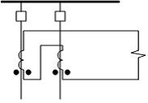
- 1 : Overcurrent Relay
- 2 : Percentage Differential Relay
- 3 : Linear Coupler
- 4 : High Impedance Relay
- คำตอบที่ถูกต้อง : 3
- ในกรณีที่มีสายป้อนจำนวนมากต่อเชื่อมเข้ากับบัส ควรจะเลือกใช้ระบบป้องกันด้วยรีเลย์แบบใด
- 1 : Over-current relay
- 2 : Percentage differential relay
- 3 : High-impedance relay
- 4 : Linear coupler
- คำตอบที่ถูกต้อง : 3
- การป้องกันบัสโดยใช้หลักการ Differential
Protection ดังรูป เมื่อเกิด Fault ขึ้นที่จุด F1
และมีกระแสไหลเข้าบัสตามรูป ค่ากระแสที่ไหลผ่าน Relay (R) จะเป็นเท่าใด

- 1 : 100 A
- 2 : 80 A
- 3 : 70 A
- 4 : 0 A
- คำตอบที่ถูกต้อง : 4
- การป้องกันบัสโดยใช้หลักการ Differential Protection ดังรูป ถ้าเกิด Fault ขึ้นที่จุด F5 จะมีกระแสไหลออกจาก CT3 เท่าใด
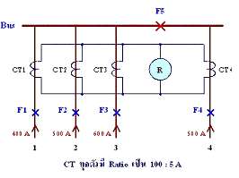
- 1 : 30 A
- 2 : 25 A
- 3 : 20 A
- 4 : 0 A
- คำตอบที่ถูกต้อง : 1
- การป้องกันบัส (Bus Protection) โดยใช้หลักการป้องกันแบบค่ากระแสผลต่าง (Current Differential Protection) มีแนวคิดหลักเป็นอย่างไร
- 1 : ผลรวมของปริมาณกระแสที่ไหลออกจากบัสมีค่าเป็นศูนย์
- 2 : ผลรวมของปริมาณกระแสที่ไหลข้าบัสมีค่าเป็นศูนย์
- 3 : ผลรวมของปริมาณกระแสที่ไหลเข้าบัสจะมีค่าเท่ากับผลรวมของปริมาณกระแสที่ไหลออกจากบัส ขณะที่บัสบาร์อยู่ในสถานะจ่ายไฟตามปกติ
- 4 : ผลรวมของปริมาณกระแสที่ไหลเข้าบัสกับปริมาณกระแสที่ไหลออกจากบัสเท่ากับกระแสพิกัดของบัส
- คำตอบที่ถูกต้อง : 3
- การป้องกันบัสโดยใช้ Backup Line Relays ดังรูป เมื่อเกิด Fault ที่บัส H เบรกเกอร์ตัวใดในวงจรควรจะเปิดวงจรเป็นอันดับแรก
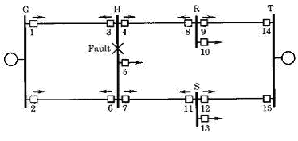
- 1 : เบรกเกอร์หมายเลข 3 , 4 , 6 และ 7
- 2 : เบรกเกอร์หมายเลข 1 , 2 , 8 และ 11
- 3 : เบรกเกอร์หมายเลข 3 , 4 , 5 , 6 และ 7
- 4 : เบรกเกอร์หมายเลข 1 , 2 , 4 และ 7
- คำตอบที่ถูกต้อง : 2
- การป้องกันบัสดังรูป เมื่อเกิด Fault ที่บัสขนาด 10,000 A โดยมีกระแสในส่วนต่างๆ แสดงดังรูป ค่ากระแสที่ผ่านรีเลย์มีค่าเท่าใด
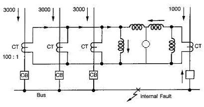
- 1 : 0 A
- 2 : 30 A
- 3 : 90 A
- 4 : 100 A
- คำตอบที่ถูกต้อง : 4
- การป้องกันบัสโดยใช้หลักการ Differential Protection ดังรูป ถ้าเกิด Fault ขึ้นที่จุด F2 จะมีกระแสไหลออกจาก CT2 เท่าใด
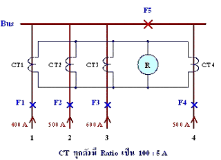
- 1 : 100 A
- 2 : 75 A
- 3 : 50 A
- 4 : 0 A
- คำตอบที่ถูกต้อง : 2
- การป้องกันบัสโดยใช้หลักการ Differential Protection ดังรูป ถ้าเกิด Fault ขึ้นที่จุด F3 จะมีกระแสไหลออกจาก CT3 เท่าใด

- 1 : 100 A
- 2 : 80 A
- 3 : 70 A
- 4 : 0 A
- คำตอบที่ถูกต้อง : 3
- การป้องกันบัสโดยใช้หลักการ Differential Protection ดังรูป ถ้าเกิด Fault ขึ้นที่จุด F4 จะมีกระแสไหลออกจาก CT4 เท่าใด
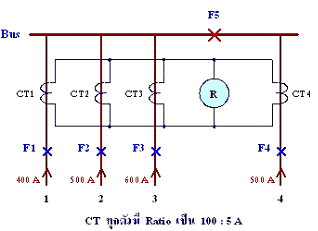
- 1 : 100 A
- 2 : 75 A
- 3 : 50 A
- 4 : 0 A
- คำตอบที่ถูกต้อง : 2
- การ
ป้องกันบัสโดยใช้หลักการ Differential Protection ดังรูป เมื่อเกิด Fault
ขึ้นที่จุด F5 และมีกระแสไหลเข้าบัสตามรูป ค่ากระแสที่ไหลผ่าน Relay (R)
จะเป็นเท่าใด
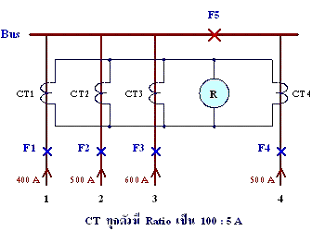
- 1 : 100 A
- 2 : 70 A
- 3 : 50 A
- 4 : 0 A
- คำตอบที่ถูกต้อง : 1
- บัส บาร์แบบ Single Bus Configuration วงจรรับไฟฟ้าเข้ามามี 1 วงจร วงจรจ่ายไฟออกมี 2 วงจร ได้รับการป้องกันจากรีเลย์อิมพีแดนซ์สูง ค่าระดับกระแสลัดวงจรที่สถานี คือ 45 kA หม้อแปลงทดกระแส (CT) ทุกตัวมีค่าอัตราการทดกระแส 1400/5 A ความต้านทานของขดลวดทุติยภูมิเท่ากับ 0.36 โอห์ม ความต้านทานของสาย 1 เส้นในวงจรทุติยภูมิที่มีความยาวมากที่สุดมีค่า 0.25 โอห์ม ค่า setting ของรีเลย์ อิมพีแดนซ์สูงควรมีค่าเท่าใด
- 1 : 50 V
- 2 : 100 V
- 3 : 125 V
- 4 : 150 V
- คำตอบที่ถูกต้อง : 4
- การป้องกัน Locked Rotor Protection สำหรับมอเตอร์ไฟฟ้าในอุตสาหกรรม ควรจะเลือกใช้รีเลย์ใดต่อไปนี้
- 1 : Distance Relay
- 2 : Differential Relay
- 3 : Directional Relay
- 4 : Over-current Relay
- คำตอบที่ถูกต้อง : 4
- ความผิดปกติแบบใดต่อไปนี้ ไม่เกี่ยวข้องกับมอเตอร์เหนี่ยวนำที่ไม่ใช่ชนิด Wound Rotor
- 1 : Overload
- 2 : Loss of Excitation
- 3 : Unbalanced Current
- 4 : Ground Fault
- คำตอบที่ถูกต้อง : 2
- ข้อใดจัดเป็นลักษณะความผิดพร่อง (Faults) ของมอเตอร์ไฟฟ้าที่เกี่ยวข้องกับโหลด
- 1 : Frame Faults
- 2 : Reverse Power
- 3 : Drop in Voltage
- 4 : Unbalance
- คำตอบที่ถูกต้อง : 2
- ข้อใดจัดเป็นลักษณะความผิดพร่อง (Faults) ภายในมอเตอร์ไฟฟ้า
- 1 : Frame Faults
- 2 : Overload
- 3 : Reverse Power
- 4 : Jamming
- คำตอบที่ถูกต้อง : 1
Negative Sequence Overcurrent Protection ที่ใช้ในการป้องกันมอเตอร์ขนาดใหญ่ จะต้องเลือกใช้รีเลย์เบอร์ใด ตามมาตรฐาน ANSI Code
- 1 :
ใช้รีเลย์เบอร์ 49
- 2 : ใช้รีเลย์เบอร์ 46
- 3 : ใช้รีเลย์เบอร์ 51
- 4 : ใช้รีเลย์เบอร์ 87
- คำตอบที่ถูกต้อง : 2
- การป้องกันมอเตอร์ขนาดใหญ่ ถ้าต้องการป้องกัน Locked Rotor Protection จะต้องเลือกใช้รีเลย์เบอร์ใด ตามมาตรฐาน ANSI Code
- 1 : ใช้รีเลย์เบอร์ 49
- 2 : ใช้รีเลย์เบอร์ 46
- 3 : ใช้รีเลย์เบอร์ 51
- 4 : ใช้รีเลย์เบอร์ 87
- คำตอบที่ถูกต้อง : 3
- ถ้าต้องการป้องกัน Undervoltage Protection ในมอเตอร์ไฟฟ้าเหนี่ยวนำ จะต้องเลือกใช้รีเลย์เบอร์ใด ตามมาตรฐาน ANSI Code
- 1 : ใช้รีเลย์เบอร์ 49
- 2 : ใช้รีเลย์เบอร์ 87
- 3 : ใช้รีเลย์เบอร์ 27
- 4 : ใช้รีเลย์เบอร์ 59
- คำตอบที่ถูกต้อง : 3
- การป้องกัน Field Undercurrent Protection สำหรับมอเตอร์ซิงโครนัส ควรเลือกใช้รีเลย์เบอร์ใด ตามมาตรฐาน ANSI Code
- 1 : ใช้รีเลย์เบอร์ 27
- 2 : ใช้รีเลย์เบอร์ 87
- 3 : ใช้รีเลย์เบอร์ 51
- 4 : ใช้รีเลย์เบอร์ 37
- คำตอบที่ถูกต้อง : 4
- การป้องกัน Loss Excitation Protection สำหรับมอเตอร์ซิงโครนัส ควรเลือกใช้รีเลย์เบอร์ใด ตามมาตรฐาน ANSI Code
- 1 : ใช้รีเลย์เบอร์ 27
- 2 : ใช้รีเลย์เบอร์ 40
- 3 : ใช้รีเลย์เบอร์ 51
- 4 : ใช้รีเลย์เบอร์ 87
- คำตอบที่ถูกต้อง : 2
- ถ้าต้องการป้องกันการเริ่มเดินเครื่องไม่สมบูรณ์ (Incomplete Sequence) ในมอเตอร์ไฟฟ้าเหนี่ยวนำขนาดใหญ่สำหรับอุตสาหกรรม จะต้องเลือกใช้รีเลย์เบอร์ใด ตามมาตรฐาน ANSI Code
- 1 : ใช้รีเลย์เบอร์ 51
- 2 : ใช้รีเลย์เบอร์ 87
- 3 : ใช้รีเลย์เบอร์ 46
- 4 : ใช้รีเลย์เบอร์ 48
- คำตอบที่ถูกต้อง : 4
- ถ้าต้องการป้องกันการเกิดลัดวง (Short Circuited) จรระหว่างเฟสในมอเตอร์ไฟฟ้าเหนี่ยวนำขนาดใหญ่สำหรับอุตสาหกรรม จะต้องเลือกใช้รีเลย์เบอร์ใด ตามมาตรฐาน ANSI Code
- 1 : ใช้รีเลย์เบอร์ 50
- 2 : ใช้รีเลย์เบอร์ 51
- 3 : ใช้รีเลย์เบอร์ 87
- 4 : ใช้รีเลย์เบอร์ 49
- คำตอบที่ถูกต้อง : 1
- ถ้าต้องการป้องกันการเกิดลัดวงลงดิน (Ground Fault) ที่ขดลวดอาร์เมเจอร์ของมอเตอร์ไฟฟ้าเหนี่ยวนำขนาดใหญ่สำหรับอุตสาหกรรม จะต้องเลือกใช้รีเลย์เบอร์ใด ตามมาตรฐาน ANSI Code
- 1 : ใช้รีเลย์เบอร์ 50GS
- 2 : ใช้รีเลย์เบอร์ 27
- 3 : ใช้รีเลย์เบอร์ 49
- 4 : ใช้รีเลย์เบอร์ 46
- คำตอบที่ถูกต้อง : 1
- ถ้าต้องการป้องกันสภาวะ Overload สำหรับมอเตอร์ไฟฟ้าเหนี่ยวนำทั่วไป นิยมเลือกใช้รีเลย์เบอร์ใด ตามมาตรฐาน ANSI Code
- 1 : ใช้รีเลย์เบอร์ 27
- 2 : ใช้รีเลย์เบอร์ 81U
- 3 :
ใช้รีเลย์เบอร์ 49
- 4 : ใช้รีเลย์เบอร์ 50
- คำตอบที่ถูกต้อง : 3
- Incomplete Sequence Relay (48) สำหรับการป้องกันมอเตอร์ไฟฟ้าเหนี่ยวนำทั่วไป ใช้เพื่อป้องกันเหตุการณ์ใดต่อไปนี้
- 1 : ใช้ป้องกันการสตาร์ทมอเตอร์ด้วยเวลาที่ยาวนานเกินไป
- 2 : ใช้ป้องกันการสตาร์ทมอเตอร์ซ้ำ หรือการสตาร์ทถี่เกินไป
- 3 : ใช้ป้องกันการสตาร์ทมอเตอร์ด้วยความเร็วที่ไม่ปกติ
- 4 : ถูกทุกข้อ
- คำตอบที่ถูกต้อง : 4
- การป้องกันมอเตอร์ไฟฟ้าสำหรับอุตสาหกรรมที่สำคัญ ได้แก่
- 1 : การป้องกันกระแสเกินโหลด
- 2 : การป้องกันความร้อนสูงเกินไป
- 3 : การป้องกันฟ้าผ่าและเสิร์จ
- 4 : การป้องกันแรงดันเกิน
- คำตอบที่ถูกต้อง : 1
- ข้อที่ต้องพิจารณาในการป้องกันมอเตอร์ไฟฟ้าสำหรับอุตสาหกรรม คือ
- 1 : Motor Characteristics
- 2 : Motor Starting Conditions
- 3 : Motor Importance
- 4 : ถูกทุกข้อ
- คำตอบที่ถูกต้อง : 4
- รีเลย์ใดต่อไปนี้ ไม่สามารถใช้ป้องกันสภาวะ Single Phasing สำหรับมอเตอร์เหนี่ยวนำ 3 เฟส ได้
- 1 : Phase Current Balance Relay
- 2 : Negative-Sequence Voltage Relay
- 3 : Negative-Sequence Current Relay
- 4 : Time Overcurrent Relay
- คำตอบที่ถูกต้อง : 4
- เหตุใดจึงต้องมีการตรวจวัดการลดลงของกระแสกระตุ้นสนามแม่เหล็ก (Field Current) ในมอเตอร์ไฟฟ้าแบบ Synchronous
- 1 : เพื่อป้องกันการเกิด Pull Out of Step ของมอเตอร์ไฟฟ้าในสภาวะที่มีโหลดน้อย (Light Load)
- 2 : เพื่อป้องกันการดึงกระแสในขดลวด Armature สูงมากเกินในกรณีมอเตอร์ไฟฟ้าที่มีโหลดมากซึ่งขดลวดอาจไหม้เสียหายได้
- 3 : เพื่อป้องกันการเกิด Voltage Drop ในขด Exciting Winding ของมอเตอร์
- 4 : เพื่อป้องกันการเกิด Over-Voltage ในขดลวด Armature ของมอเตอร์
- คำตอบที่ถูกต้อง : 2
- การป้องกันกระแสเกินเฟสแบบทันทีทันใด ในมอเตอร์ไฟฟ้ามีวัตถุประสงค์เพื่ออะไร
- 1 : ลดความเสียหายที่มีโอกาสเกิดขึ้นจากผลของการเกิดฟอลต์ (Fault)
- 2 : ลดช่วงเวลาของการเกิดแรงดันตกชั่วขณะ
- 3 : ลดโอกาสที่ฟอลต์ (Fault) จะลุกลามและแพร่ขยายความรุนแรงมากยิ่งขึ้น
- 4 : ถูกทุกข้อ
- คำตอบที่ถูกต้อง : 4
- มอเตอร์เหนี่ยวนำ 3 เฟส 50 Hz ขนาดพิกัด 1000 kW (CMR), 3.3 kV, P.F. = 0.9 lagging, Efficiency 92% ค่ากระแสพิกัด (In) ของมอเตอร์มีค่าเท่าใด
- 1 : In = 366.0 A
- 2 : In = 211.3 A
- 3 : In = 398.0 A
- 4 : In = 190.2 A
- คำตอบที่ถูกต้อง : 2
- อุปกรณ์ที่ใช้สำหรับการตรวจจับอุณหภูมิสูงเกินในมอเตอร์ไฟฟ้าทั่วไป คืออุปกรณ์ใด
- 1 :
Resistance Temperature Detectors หรือ RTD
- 2 : Thermocouples
- 3 : Thermistors
- 4 : ถูกทุกข้อ
- คำตอบที่ถูกต้อง : 4
- Thermistors แบบ Negative-Temperature Coefficient Type (NTC) มีคุณสมบัติตามข้อใด
- 1 : ค่าความต้านทานจะคงที่เมื่ออุณหภูมิลดลง
- 2 : ค่าความต้านทานจะเพิ่มขึ้นเมื่ออุณหภูมิเพิ่มสูงขึ้น
- 3 : ค่าความต้านทานจะลดลงเมื่ออุณหภูมิเพิ่มสูงขึ้น
- 4 : ค่าความต้านทานจะคงที่เมื่ออุณหภูมิเพิ่มสูงขึ้น
- คำตอบที่ถูกต้อง : 3
- Thermistors แบบ Positive-Temperature Coefficient Type (PTC) มีคุณสมบัติตามข้อใด
- 1 : ค่าความต้านทานจะคงที่เมื่ออุณหภูมิลดลง
- 2 : ค่าความต้านทานจะเพิ่มขึ้นเมื่ออุณหภูมิเพิ่มสูงขึ้น
- 3 : ค่าความต้านทานจะลดลงเมื่ออุณหภูมิเพิ่มสูงขึ้น
- 4 : ค่าความต้านทานจะคงที่เมื่ออุณหภูมิเพิ่มสูงขึ้น
- คำตอบที่ถูกต้อง : 2
- การป้องกัน Overload ในมอเตอร์ไฟฟ้าขนาดใหญ่จะต้องนำค่าพารามิเตอร์ใดมาใช้เพื่อคำนวณหาค่ากระแสปรับตั้งของรีเลย์
- 1 : ค่า Locked Rotor Current ของมอเตอร์
- 2 : ค่า Maximum Symmetrical Starting Current ของมอเตอร์
- 3 : ค่า Rated Current ของมอเตอร์
- 4 : ถูกทุกข้อ
- คำตอบที่ถูกต้อง : 3
- การป้องกันมอเตอร์ไฟฟ้าแบบใดต่อไปนี้ ที่ไม่ต้องการให้มีการหน่วงเวลาทำงานของรีเลย์
- 1 : Locked Rotor Protection
- 2 : Overload Protection
- 3 : Stall Protection
- 4 : Short Circuit Protection
- คำตอบที่ถูกต้อง : 4
- การป้องกันมอเตอร์ไฟฟ้า RTD มีไว้เพื่อใช้ประโยชน์อะไร
- 1 : ใช้ตรวจวัดแรงดันตกในมอเตอร์ไฟฟ้า
- 2 : ใช้ตรวจวัดอุณหภูมิในขดลวดหรือใน Shaft Bearings ของมอเตอร์ไฟฟ้า
- 3 : ใช้ตรวจวัดความเร็วรอบของมอเตอร์ไฟฟ้า
- 4 : ใช้ตรวจวัดการสั่นทางกล (Vibration) ที่เกิดขึ้นที่แกนเพลาของมอเตอร์ไฟฟ้า
- คำตอบที่ถูกต้อง : 2
- ฟอลต์ (Fault) ในข้อใดต่อไปนี้ ทำให้ซิงโครนัสมอเตอร์เสียหายน้อยที่สุด
- 1 : การสูญเสียซิงโครนัส
- 2 : การลัดวงจรลงโครงโลหะ
- 3 : การลัดวงจรระหว่างเฟส
- 4 : สภาวะที่โรเตอร์ถูกตรึง
- คำตอบที่ถูกต้อง : 1
- การป้องกันกระแสเกินแบบทันทีทันใด (Instantaneous) สำหรับมอเตอร์ไฟฟ้าเหนี่ยวนำขนาดใหญ่ การคำนวณหาค่ากระแสปรับตั้งของรีเลย์จะต้องพิจารณาถึงปัจจัยใดบ้าง
- 1 : ค่า Locked Rotor Current ของมอเตอร์
- 2 : DC Offset
- 3 : Safety Factor
- 4 : ถูกทุกข้อ
- คำตอบที่ถูกต้อง : 4
- Induction Motor แบบ 3-phase ขนาด 300 kW, 3.3 kV, กระแสพิกัด (In) = 60 A, Locked Rotor Current (LRC) = 330 A (10 s) และ Maximum Starting Current (MSC) = 545 A (0.1 s) การตั้งค่าเวลาทำงานของรีเลย์กระแสเกินเพื่อป้องกัน Short Circuit Protection ควรตั้งค่าอย่างไร
- 1 : ตั้งแบบ Instantaneous
- 2 : ตั้งแบบ Time Delay ไว้ที่ 10 s
- 3 :
ตั้งแบบ Time Delay ไว้ที่มากกว่า 10 s เล็กน้อย
- 4 : ตั้งแบบ Time Delay ไว้ที่มากกว่า 0.1 s แต่ไม่เกิน 10 s
- คำตอบที่ถูกต้อง : 1
- การเกิด Single Phasing หมายถึงข้อใด
- 1 : การที่ขดลวดของมอเตอร์ไฟฟ้าแบบ 3 เฟส เกิดลัดวงจรแบบ 1 เฟส ลงดิน (L-G Fault)
- 2 : การที่ไฟจากแหล่งจ่ายให้มอเตอร์ไฟฟ้าแบบ 3 เฟส เกิดมีสายหลุดหรือสายขาดไป 1 เส้น
- 3 : การที่ไฟจากแหล่งจ่ายให้มอเตอร์ไฟฟ้าแบบ 3 เฟส เกิดมีสายหลุดไป 2 เส้น
- 4 : การที่ขดลวดของมอเตอร์ไฟฟ้าแบบ 3 เฟส เกิดการลัดวงจรแบบ 2 เฟส ลงดิน (L-L-G Fault)
- คำตอบที่ถูกต้อง : 2
- มอเตอร์เหนี่ยวนำ 3 เฟส ขนาดพิกัด 1.2 MVA, 3.6 kV, 85% efficiency ถ้าต้องการจะป้องกัน Internal Faults ให้คำนวณหาพิกัด Line CT ที่เหมาะสม
- 1 : ใช้ Line CT 100/5 A
- 2 : ใช้ Line CT 200/5 A
- 3 : ใช้ Line CT 300/5 A
- 4 : ใช้ Line CT 800/5 A
- คำตอบที่ถูกต้อง : 3
- ข้อใดไม่ใช่สาเหตุของการเกิด Field Current Failure ในมอเตอร์ไฟฟ้าแบบ Synchronous
- 1 : เมื่อความต้านทานของหน้าสัมผัสมีค่าสูงหรือมีการเปิดวงจรระหว่าง Slip Ring และ Brushes
- 2 : เกิดอุบัติเหตุทำให้เกิดการทริปของขดลวดกระตุ้น (Exciter)
- 3 : การทริปของ Remote Exciter
- 4 : เกิด Negative Sequence Voltage และ Unbalance Voltage จากแหล่งจ่าย
- คำตอบที่ถูกต้อง : 4
- ข้อใดกล่าวถึง RTDs ไม่ถูกต้อง
- 1 : RTDs คือ Resistance Temperature Detectors ใช้ตรวจจับการเพิ่มขึ้นของอุณหภูมิในขดลวดมอเตอร์
- 2 : RTDs ที่มีใช้งานโดยทั่วไปจะมีค่าความต้านทานเป็น 10 Ohm หรือ 120 Ohm ที่สภาวะอุณหภูมิปกติ
- 3 : RTDs คือ Rotated Resistance Temperature Detectors ใช้ตรวจจับอุณหภูมิสูงเกินในขดลวดสนามกระตุ้น (Field Winding)
- 4 : RTDs คือ รีเลย์เบอร์ 26 (ANSI Code) สามารถเลือกปรับตั้งได้ทั้งแบบสั่งให้ Alarm และ Trip
- คำตอบที่ถูกต้อง : 3
- เหตุผลสำคัญของการป้องกันเฟสไม่สมดุล (Phase Unbalance Protection) ในมอเตอร์ไฟฟ้า คือข้อใด
- 1 : เพื่อป้องกันแรงดันตกชั่วขณะ (Voltage Dip)
- 2 : เพื่อป้องกันแรงบิดทางกล (Torque) ของมอเตอร์ลดลง
- 3 : เพื่อป้องกันความร้อนสูงเกินในมอเตอร์
- 4 : เพื่อป้องกันการสั่น (Vibration) ทางกลในมอเตอร์ ซึ่งจะทำให้มอเตอร์เกิดอาการสั่นคาง
- คำตอบที่ถูกต้อง : 3
- รีเลย์ชนิดใดต่อไปนี้ เหมาะสำหรับใช้ป้องกันการลัดวงจรภายในขดลวด Armature ของมอเตอร์ไฟฟ้า
- 1 : Impedance Relay
- 2 : Undervoltage Relay
- 3 : Current Balance Relay
- 4 : Percentage Differential Relay
- คำตอบที่ถูกต้อง : 4
- การป้องกันมอเตอร์ไฟฟ้าโดยทั่วไป เพราะเหตุใดจึงต้องมีการป้องกันแรงดันตก (Under Voltage Protection) ที่เกิดขึ้นเนื่องจากแหล่งจ่าย
- 1 : เพื่อป้องกันมอเตอร์มีความเร็วรอบเพิ่มสูงขึ้นมากจนเกินพิกัด
- 2 : เพื่อป้องกันการเกิดความร้อนสูงเกินในตัวมอเตอร์ เนื่องจากกระแสที่เพิ่มขึ้น
- 3 : เพื่อป้องกันการสั่นของมอเตอร์ ซึ่งอาจทำให้ฉนวนของขดลวดเสียหายได้
- 4 : เพื่อป้องกันการเพิ่มขึ้นของแรงบิด ซึ่งจะมีผลต่อภาระทางกลของมอเตอร์
- คำตอบที่ถูกต้อง : 2
- การป้องกันลัดวงจร (Short Circuit Protection) ระหว่างเฟสแบบทันทีทันใด (Instantaneous) ในมอเตอร์ไฟฟ้าเหนี่ยวนำทั่วไป จะต้องปรับตั้งค่ากระแสของรีเลย์อย่างไร
- 1 : ตั้งค่าให้รีเลย์เริ่มทำงานเมื่อกระแสมีค่าสูงกว่าค่า Locked Rotor Current ของมอเตอร์
- 2 : ตั้งค่าให้รีเลย์เริ่มทำงานเมื่อกระแสมีค่าสูงกว่าค่า Rated Current ของมอเตอร์
- 3 : ตั้งค่าให้รีเลย์เริ่มทำงานเมื่อกระแสมีค่าสูงกว่าค่า Maximum Symmetrical Starting Current ของมอเตอร์
- 4 : ตั้งค่าให้รีเลย์เริ่มทำงานเมื่อกระแสมีค่าสูงกว่าค่า Locked Rotor Current แต่ไม่เกินค่า Maximum Symmetrical Starting Current ของมอเตอร์
- คำตอบที่ถูกต้อง : 3
- การป้องกัน Thermal or Overload Protection ในมอเตอร์ไฟฟ้าเหนี่ยวนำทั่วไป ควรปรับตั้งค่ารีเลย์อย่างไรจึงจะเหมาะสม
- 1 : ตั้งค่าให้สูงกว่าค่าพิกัดกระแสของมอเตอร์ และให้รีเลย์ทำงานทันทีทันใด
- 2 : ตั้งค่าให้สูงกว่าค่าพิกัดกระแสของมอเตอร์เล็กน้อย และให้รีเลย์ทำงานแบบหน่วงเวลา
- 3 : ตั้งค่าให้สูงกว่าค่า Locked Rotor Current ของมอเตอร์ แต่ให้รีเลย์ทำงานแบบหน่วงเวลา
- 4 : ตั้งค่าให้ต่ำกว่าค่าพิกัดกระแสของมอเตอร์เล็กน้อย แต่ให้รีเลย์ทำงานแบบหน่วงเวลา
- คำตอบที่ถูกต้อง : 2
- การป้องกัน Stall Protection ในมอเตอร์ไฟฟ้าทั่วไป ควรปรับตั้งค่ารีเลย์อย่างไรจึงจะเหมาะสม
- 1 : ตั้งค่าให้เท่ากับ Locked Rotor Protection และให้รีเลย์ทำงานแบบหน่วงเวลา
- 2 : ตั้งค่าให้เท่ากับ Overload Protection และให้รีเลย์ทำงานแบบหน่วงเวลา
- 3 : ตั้งค่าให้เท่ากับ Locked Rotor Protection แต่ให้รีเลย์ทำงานทันทีทันใด
- 4 : ตั้งค่าให้สูงกว่า Overload Protection ประมาณ 125% และให้รีเลย์ทำงานทันทีทันใด
- คำตอบที่ถูกต้อง : 1
- การปรับตั้งค่าประวิงเวลา (Time Delay) การทำงานของรีเลย์ สำหรับ Stall Protection ในมอเตอร์ไฟฟ้าทั่วไป ควรปรับตั้งค่าเวลาอย่างไรจึงจะเหมาะสม
- 1 : ตั้งเวลาประวิงให้สูงกว่าค่า Starting Time ของมอเตอร์
- 2 : ตั้งเวลาประวิงให้สูงกว่าค่า Starting Time แต่ไม่เกินค่า Hot Stall Withstand Time ของมอเตอร์
- 3 : ตั้งเวลาประวิงให้สูงกว่าค่า Hot Stall Withstand Time แต่ไม่เกินค่า Cold Stall Withstand Time ของมอเตอร์
- 4 : ตั้งเวลาประวิงให้สูงกว่าค่า Hot Stall Withstand Time แต่ไม่เกินค่า Heating Time Constant ของมอเตอร์
- คำตอบที่ถูกต้อง : 2
- การปรับตั้งค่าประวิงเวลา (Time Delay) การทำงานของรีเลย์ สำหรับ Locked Rotor Protection ในมอเตอร์ไฟฟ้า ควรปรับตั้งค่าเวลาหน่วงไว้อย่างไรจึงจะเหมาะสม
- 1 : ตั้งเวลาประวิงให้ต่ำกว่าค่า Hot Stall Withstand Time ของมอเตอร์
- 2 : ตั้งเวลาประวิงให้สูงกว่าค่า Starting Time แต่ไม่เกินค่า Hot Stall Withstand Time ของมอเตอร์
- 3 : ตั้งเวลาประวิงให้สูงกว่าค่า Starting Time แต่ไม่เกินค่า Cold Stall Withstand Time ของมอเตอร์
- 4 : ตั้งเวลาประวิงให้สูงกว่าค่า Hot Stall Withstand Time แต่ไม่เกินค่า Heating Time Constant ของมอเตอร์
- คำตอบที่ถูกต้อง : 3
- การตรวจจับ Bearing Failures ในมอเตอร์ไฟฟ้าขนาดใหญ่ โดยทั่วไปจะใช้วิธีการใด
- 1 : ใช้วิธีตรวจวัดอุณหภูมิที่เพิ่มขึ้นที่ตัว Bearing
- 2 : ใช้วิธีตรวจวัดการสั่นทางกลที่แกนเพลาของมอเตอร์ไฟฟ้า
- 3 : ใช้วิธีตรวจวัดความเร็วรอบทางกล
- 4 : ใช้วิธีตรวจวัดกระแสรั่วไหลลงโครงโลหะของมอเตอร์ไฟฟ้า
- คำตอบที่ถูกต้อง : 1
- Induction Motor แบบ 3-phase ขนาดพิกัด 300 kW, 3.3 kV, กระแสพิกัด (In) = 60 A, Locked Rotor Current (LRC) = 330 A (10 s) และ Maximum Starting Current (MSC) = 545 A (0.1 s) การตั้งค่าเวลาทำงานของรีเลย์กระแสเกินเพื่อป้องกัน Locked Rotor Protection ควรตั้งค่าอย่างไรจึงเหมาะสม
- 1 : ตั้งแบบ Instantaneous
- 2 : ตั้งแบบ Time Delay ไว้ที่ 0.1 s
- 3 : ตั้งแบบ Time Delay ไว้ที่ 8 s
- 4 : ตั้งแบบ Time Delay ไว้ที่ 15 s
- คำตอบที่ถูกต้อง : 3
- Induction Motor แบบ 3-phase ขนาด 300 kW, 3.3 kV, กระแสพิกัด (In) = 60 A, Locked Rotor Current (LRC) = 330 A (10 s) และ Maximum Starting Current (MSC) = 545 A (0.1 s) จงเลือกขนาดพิกัดของ CT ที่เหมาะสม สำหรับการป้องกัน Overload และ Short Circuit Protection
- 1 : 50/5 A
- 2 : 100/5 A
- 3 : 300/5 A
- 4 : 600/5 A
- คำตอบที่ถูกต้อง : 2
- มอเตอร์เหนี่ยวนำ 3 เฟส ขนาดพิกัด 2400 kW, 6.6 kV, In = 244 A, LCR = 1250 A ใช้ CT Ratio = 500/5 A ถ้าต้องการป้องกัน Overload แบบหน่วงเวลาจากอุณหภูมิที่เพิ่มสูงขึ้น โดยใช้รีเลย์เบอร์ 49/50 เมื่อกำหนด Margin ไว้ที่ 10% ของกระแสพิกัด ให้คำนวณหาค่ากระแสปรับตั้งที่รีเลย์
- 1 : ค่ากระแสปรับตั้งที่รีเลย์ = 2.44 A
- 2 : ค่ากระแสปรับตั้งที่รีเลย์ = 2.68 A
- 3 : ค่ากระแสปรับตั้งที่รีเลย์ = 12.5 A
- 4 : ค่ากระแสปรับตั้งที่รีเลย์ = 13.75 A
- คำตอบที่ถูกต้อง : 2
- มอเตอร์เหนี่ยวนำ 3 เฟส ขนาดพิกัด 1200 kW, 3.3 kV, power factor = 0.9 , efficiency 92% ใช้ CT Ratio = 300/1 A ถ้าต้องการป้องกันอุณหภูมิสูงเกิน (Thermal Protection) โดยใช้ Overcurrent Relay แบบหน่วงเวลา ให้คำนวณหาค่ากระแสปรับตั้งที่รีเลย์
- 1 : ค่ากระแสปรับตั้งที่รีเลย์ = 0.85 A
- 2 : ค่ากระแสปรับตั้งที่รีเลย์ = 1.20 A
- 3 : ค่ากระแสปรับตั้งที่รีเลย์ = 1.46 A
- 4 : ค่ากระแสปรับตั้งที่รีเลย์ = 0.7 A
- คำตอบที่ถูกต้อง : 1
- มอเตอร์เหนี่ยวนำ 3 เฟส ขนาดพิกัด 1200 kW, 3.3 kV, power factor = 0.9 , efficiency 92%, มี Starting Current = 550% DOL ใช้ CT Ratio = 300/5 A ถ้าต้องการป้องกันการเกิดลัดวงจร (Short Circuit Protection) โดยตั้งค่าเผื่อไว้ 125% ให้คำนวณหาค่ากระแสปรับตั้งที่รีเลย์
- 1 : ค่า Setting Value ที่รีเลย์ = 6.25 A
- 2 : ค่า Setting Value ที่รีเลย์ = 24.1 A
- 3 : ค่า Setting Value ที่รีเลย์ = 26.7 A
- 4 : ค่า Setting Value ที่รีเลย์ = 29.1 A
- คำตอบที่ถูกต้อง : 4
- มอเตอร์เหนี่ยวนำ 3 เฟส ขนาดพิกัด 1200 kW, 3.3 kV, power factor = 0.9 , efficiency 92%, มี Starting Current = 550% DOL ใช้ CT Ratio = 300/5 A ถ้าต้องการทำการป้องกัน Locked Rotor Protection โดยตั้งค่าไว้เท่ากับ 200% ของค่ากระแสพิกัด ค่ากระแสปรับตั้งที่รีเลย์กระแสเกินต้องทำงานมีค่าเป็นเท่าใด
- 1 : ค่า Setting Value ที่รีเลย์ = 7.0 A
- 2 : ค่า Setting Value ที่รีเลย์ = 12.13 A
- 3 : ค่า Setting Value ที่รีเลย์ = 8.45 A
- 4 : ค่า Setting Value ที่รีเลย์ = 14.64 A
- คำตอบที่ถูกต้อง : 3
- ZCT หมายถึงข้อใด
- 1 : Zigzag Current Transformer
- 2 : Zero-Sequence Current Transformer
- 3 : Burden Impedance ของ CT มีหน่วยเป็นโอห์ม
- 4 : Zero-Sequence Coupling Current Transformer
- คำตอบที่ถูกต้อง : 2
- ข้อใดไม่ใช่ลักษณะของการเกิดผิดพร่อง (Faults) ในระบบไฟฟ้ากำลัง
- 1 : การเกิด Short Circuit ในระบบไฟฟ้า
- 2 : การเกิด Under Load ของมอเตอร์ไฟฟ้า
- 3 : การเกิด Over Load ของเครื่องกำเนิดไฟฟ้า
- 4 : การเกิด Loss of Synchronism ของเครื่องกำเนิดไฟฟ้า
- คำตอบที่ถูกต้อง : 2
- ข้อใดกล่าวถึง Faults ในระบบไฟฟ้ากำลังผิดจากความเป็นจริง
- 1 : Faults หมายถึง การเกิดลัดวงจรในระบบไฟฟ้าเพียงอย่างเดียวเท่านั้น
- 2 : การเกิดภาวะ Over Load จัดเป็น Faults ในระบบไฟฟ้ารูปแบบหนึ่ง
- 3 : การเกิดภาวะ Under Frequency จัดเป็น Faults ในระบบไฟฟ้ารูปแบบหนึ่ง
- 4 : การเกิดภาวะ Over Voltage จัดเป็น Faults ในระบบไฟฟ้ารูปแบบหนึ่ง
- คำตอบที่ถูกต้อง : 1
- การเกิด Faults บนสายส่งแบบ Overhead Line ในระบบ 3 phase รูปแบบใดที่มีความถี่ในการเกิดสูงที่สุด
- 1 : Single Line to Ground Fault
- 2 : Line to Line Fault
- 3 : Line to Line to Ground Fault
- 4 : Three Phase Fault
- คำตอบที่ถูกต้อง : 1
- การเกิด Faults บนสายส่งแบบ Overhead Line ในระบบ 3 phase รูปแบบใดที่มีความรุนแรงในการเกิดสูงที่สุด
- 1 : Single Line to Ground Fault
- 2 : Line to Line Fault
- 3 : Line to Line to Ground Fault
- 4 : Three Phase Fault
- คำตอบที่ถูกต้อง : 4
- ข้อใดคือคุณสมบัติของ SF6 Circuit Breaker
- 1 : มีความคงทนไดอิเล็กตริกต่ำ ใช้การดับอาร์กแบบลดความดัน ทนกระแส Interrupting ได้สูง
- 2 : มีความคงทนไดอิเล็กตริกต่ำ ใช้การดับอาร์กแบบลดความดัน ทนกระแส Interrupting ได้ต่ำ
- 3 : มีความคงทนไดอิเล็กตริกสูง ใช้การดับอาร์กแบบอัดความดัน ทนกระแส Interrupting ได้สูง
- 4 : มีความคงทนไดอิเล็กตริกสูง ใช้การดับอาร์กแบบลดความดัน ทนกระแส Interrupting ได้ต่ำ
- คำตอบที่ถูกต้อง : 3
- ข้อใดคือคุณสมบัติของ Vacuum Circuit Breaker
- 1 : มีความคงทนไดอิเล็กตริกสูง ใช้การดับอาร์กแบบอัดความดัน Interrupter ไม่ต้องบำรุงรักษาบ่อย
- 2 : มีความคงทนไดอิเล็กตริกสูง ใช้การดับอาร์กแบบลดความดัน Interrupter ต้องบำรุงรักษาบ่อย
- 3 : มีความคงทนไดอิเล็กตริกสูง ใช้การดับอาร์กในสภาวะสุญญากาศ Interrupter ต้องบำรุงรักษาบ่อย
- 4 : ใช้การดับอาร์กในสภาวะสุญญากาศ มีความคงทนไดอิเล็กตริกสูง Interrupter ไม่ต้องบำรุงรักษาบ่อย
- คำตอบที่ถูกต้อง : 3
- ข้อใดไม่ใช่ส่วนประกอบของระบบป้องกัน (Protective System)
- 1 : Circuit Breaker & Trip Circuit
- 2 : Power Transformer
- 3 : Instrument Transformers
- 4 : Batteries
- คำตอบที่ถูกต้อง : 2
- Instrument Transformers มีกี่ชนิด อะไรบ้าง
- 1 : 1 ชนิด คือ Current Transformer
- 2 : 2 ชนิด คือ Current Transformer และ Voltage Transformer
- 3 : 2 ชนิด คือ Current Transformer และ Transducer
- 4 : 3 ชนิด คือ Current Transformer, Voltage Transformer และ Transducer
- คำตอบที่ถูกต้อง : 2
- ข้อใดไม่ใช่หน้าที่ของหม้อแปลงทดกระแส (CT)
- 1 : แปลงขนาดกระแสของระบบไฟฟ้าค่าสูงให้เป็นค่าต่ำ เพื่อประโยชน์ในการวัดและการป้องกัน
- 2 : แยกวงจร Secondary ออกจากวงจร Primary เพื่อความปลอดภัยของผู้ปฏิบัติงาน
- 3 : ทำให้สามารถใช้กระแสมาตรฐานทางด้าน Secondary ได้
- 4 : แปลงขนาดกระแสของระบบไฟฟ้าค่าต่ำให้เป็นค่าสูง เพื่อประโยชน์ในการป้องกัน
- คำตอบที่ถูกต้อง : 4
- Rated Burden ของหม้อแปลงทดกระแส (CT) หมายถึง
- 1 : ค่าพิกัดกระแสมาตรฐานทางด้านทุติยภูมิของหม้อแปลงกระแส
- 2 : ค่าพิกัดแรงดันทางด้านทุติยภูมิของหม้อแปลงกระแส
- 3 : ค่าพิกัดแรงดันทางด้านปฐมภูมิของหม้อแปลงกระแส
- 4 : ค่าพิกัดโหลดสูงสุดของวงจรทางด้านทุติยภูมิของหม้อแปลงกระแส อาจกำหนดเป็น VA หรือ Ohm ก็ได้
- คำตอบที่ถูกต้อง : 4
- ค่า Standard secondary current ของหม้อแปลงทดกระแส สำหรับระบบป้องกันที่มีใช้งานในปัจจุบัน มีค่าเท่าใด
- 1 : 1 A. และ 3 A.
- 2 : 1 A. และ 5 A.
- 3 : 5 A. และ 10 A.
- 4 : 5 A. และ 50 A.
- คำตอบที่ถูกต้อง : 2
- หม้อ แปลงทดกระแส (CT) ขนาดพิกัดเบอร์เดน 15 VA มีอัตราการทดกระแสเป็น 200/5 A Accuracy Class 10 P 20 ค่า Accuracy Limit Factor (ALF) มีค่าเท่าใด
- 1 : ALF มีค่าเท่ากับ 20 เท่า
- 2 : ALF มีค่าเท่ากับ 10 เท่า
- 3 : ALF มีค่าเท่ากับ 15 เท่า
- 4 : ALF มีค่าเท่ากับ 40 เท่า
- คำตอบที่ถูกต้อง : 1
- หม้อ แปลงทดกระแส (CT) มีขนาดพิกัดเบอร์เดน 15 VA อัตราการทดกระแส 200/5 A Accuracy Class 10 P 20 ความคลาดเคลื่อนรวม (Composite Error) มีค่าเท่าใด
- 1 : 5 %
- 2 : 10 %
- 3 : 15 %
- 4 : 20 %
- คำตอบที่ถูกต้อง : 2
- CCVT ย่อมาจากคำว่าอะไร
- 1 : Coupling Capacitor Voltage Transformer
- 2 : Coupling Circuit Voltage Transformer
- 3 : Constant Coupling Voltage Transformer
- 4 : Circuit Capacitor Voltage Transformer
- คำตอบที่ถูกต้อง : 1
- ข้อใดอธิบายความหมายของอุปกรณ์ CCVT ได้อย่างถูกต้อง
- 1 : การใช้ตัวเก็บประจุต่อขนานกับหม้อแปลงทดแรงดันเพื่อความสะดวกและความเที่ยงตรงในการวัด
- 2 : การประยุกต์ใช้หม้อแปลงทดแรงดันต่อร่วมกับภาคแรงต่ำของโวลเตจดิไวเดอร์แบบตัวเก็บประจุ
- 3 : การลดทอนแรงดันสูงโดยใช้หม้อแปลงทดแรงดันที่มีโวลเตจดิไวเดอร์แบบตัวเก็บประจุต่ออยู่ทางด้าน Secondary ของหม้อแปลงทดแรงดัน
- 4 : การประยุกต์ใช้หม้อแปลงทดแรงดันต่ออนุกรมกับโวลเตจดิไวเดอร์แรงสูงแบบตัวเก็บประจุเพื่อประหยัดค่าใช้จ่าย
- คำตอบที่ถูกต้อง : 2
- ค่ามาตรฐานทางด้านทุติยภูมิ (Standard secondary) ของหม้อแปลงทดแรงดัน (Voltage Transformer: VT) ที่มีใช้งานในปัจจุบัน มีค่าเท่าใด
- 1 : 100 V. และ 220 V.
- 2 : 110 V. และ 120 V.
- 3 : 220 V. และ 380 V.
- 4 : 100 V. และ 150 V.
- คำตอบที่ถูกต้อง : 2
- Protection Class ของหม้อแปลงทดแรงดัน (Voltage Transformer : VT) ตามมาตรฐาน IEC คือข้อใด
- 1 : 3P และ 6P
- 2 : 3P และ 5P
- 3 : 5P และ 10P
- 4 : 10P และ 20P
- คำตอบที่ถูกต้อง : 1
- ข้อใดคือคุณสมบัติการมี Selectivity ของระบบป้องกันที่ดี
- 1 : ระบบป้องกันมีความแน่นอนของ Relays ที่สามารถทำงานได้จริง มีความเชื่อถือได้
- 2 : ระบบป้องกันสามารถตัดวงจรได้รวดเร็ว แต่บางครั้งอาจมีการหน่วงเวลาบ้างเพื่อให้มีการทำงานประสานกัน
- 3 : ระบบป้องกันต้องไม่ทำงานเมื่อไม่ต้องการให้ทำงาน การตัดวงจรโดยไม่จำเป็นจะส่งผลกระทบต่อผู้ใช้ไฟ
- 4 : ระบบป้องกันที่ออกแบบให้ Relays ทำงานแบ่งเป็น Zone โดย Relays ที่อยู่ใกล้ Fault มากที่สุดทำงานก่อน
- คำตอบที่ถูกต้อง : 4
- ข้อใดคือคุณสมบัติการมี Speed ของระบบป้องกันที่ดี
- 1 : ระบบป้องกันมีความแน่นอนของ Relays ที่สามารถทำงานได้จริง มีความเชื่อถือได้
- 2 : ระบบป้องกันสามารถตัดวงจรได้รวดเร็ว แต่บางครั้งอาจมีการหน่วงเวลาบ้างเพื่อให้มีการทำงานประสานกัน
- 3 : ระบบป้องกันต้องไม่ทำงานเมื่อไม่ต้องการให้ทำงาน การตัดวงจรโดยไม่จำเป็นจะส่งผลกระทบต่อผู้ใช้ไฟ
- 4 : ระบบป้องกันที่ออกแบบให้ Relays ทำงานแบ่งเป็น Zone โดย Relays ที่อยู่ใกล้ Fault มากที่สุดทำงานก่อน
- คำตอบที่ถูกต้อง : 2
- ข้อใดคือคุณสมบัติการมี Dependability ของระบบป้องกันที่ดี
- 1 : ระบบป้องกันมีความแน่นอนของ Relays ที่สามารถทำงานได้จริง, มีความเชื่อถือได้
- 2 : ระบบป้องกันต้องไม่ทำงานเมื่อไม่ต้องการให้ทำงาน การตัดวงจรโดยไม่จำเป็นจะส่งผลกระทบต่อผู้ใช้ไฟ
- 3 : ระบบป้องกันที่ออกแบบให้ Relays ทำงานแบ่งเป็น Zone โดย Relays ที่อยู่ใกล้ Fault มากที่สุดทำงานก่อน
- 4 : ระบบป้องกันสามารถทำงานถูกต้องทุกครั้งเมื่อเกิด Fault ใน Zone ป้องกัน แม้จะไม่ได้ทำงานมาเป็นเวลานานก็ตาม
- คำตอบที่ถูกต้อง : 4
- รีเลย์ชนิด Electro-mechanical relay ถ้าต้องการให้เป็น High speed relay จะต้องใช้โครงสร้างของรีเลย์แบบใด
- 1 : Damping magnet
- 2 : Split ring
- 3 : Attracted armature
- 4 : Induction disc
- คำตอบที่ถูกต้อง : 3
- เมื่อพิจารณาจากข้อมูลสถิติการเกิด Faults ที่พบโดยทั่วไป ข้อใดต่อไปนี้กล่าวถูกต้อง
- 1 : Fault แบบสามเฟสสมดุล (Balanced three-phase fault) มีความถี่ของการเกิดมากที่สุด
- 2 : Fault แบบเส้นเดียวลงดิน (Single line-to-ground fault) มีความถี่ของการเกิดมากที่สุด
- 3 : Fault แบบสามเฟสสมดุล (Balanced three-phase fault) มีความรุนแรงน้อยที่สุด
- 4 : Fault แบบเส้นเดียวลงดิน (Single line-to-ground fault) มีความรุนแรงน้อยที่สุด
- คำตอบที่ถูกต้อง : 2
- ระบบ ไฟฟ้ากำลังที่มีการต่อลงดินแบบ Solidly-Grounded ขณะที่มีเหตุการณ์ลัดวงจรลงดิน ปรากฏว่าค่ากระแสลำดับศูนย์ (Zero Sequence) เป็นศูนย์ ท่านคิดว่าน่าจะเป็นเหตุการณ์ประเภทใด ดังต่อไปนี้
- 1 : Three-phase-to-ground fault
- 2 : Single-phase-to-ground fault
- 3 : Two-phase-to- ground fault
- 4 : ไม่มีข้อใดถูกต้อง
- คำตอบที่ถูกต้อง : 1
- หม้อ แปลงทดกระแส (CT) สำหรับระบบป้องกัน มีอัตราการทดกระแส 400/5 A มีค่าเบอร์เดนเท่ากับ 3 VA ที่ค่า Plug Setting 2.5 A จงหาค่า Burden ประสิทธิผลของ CT มีค่าเท่าใด
- 1 : Burden ประสิทธิผลมีค่าเท่ากับ 3 VA
- 2 : Burden ประสิทธิผลมีค่าเท่ากับ 6.25 VA
- 3 : Burden ประสิทธิผลมีค่าเท่ากับ 7.5 VA
- 4 : Burden ประสิทธิผลมีค่าเท่ากับ 12 VA
- คำตอบที่ถูกต้อง : 4
- รี เลย์กระแสเกินมี Burden 1.0 โอห์ม ที่ค่ากระแส Pick Up = 5 A ถ้าตั้งค่ากระแส Pick Up ให้มีค่าเป็น 1 A ค่าเบอร์เดนของรีเลย์ที่กระแส Pick Up ใหม่ มีค่าเท่าใด
- 1 : 0.2 โอห์ม
- 2 : 0.4 โอห์ม
- 3 : 5.0 โอห์ม
- 4 : 25.0 โอห์ม
- คำตอบที่ถูกต้อง : 4
- ระบบ ป้องกันระบบหนึ่งประกอบด้วย รีเลย์กระแสเกินขนาด 10 VA, 5 A สาย pilot ของรีเลย์มีความต้านทานรวมเท่ากับ 0.15 โอห์ม ขนาดพิกัดของหม้อแปลงทดกระแส (CT) ที่เหมาะสมควรมีค่าเท่าใด
- 1 : ควรเลือกใช้ CT ขนาด 10 VA. และกระแสทุติยภูมิเท่ากับ 1 A.
- 2 : ควรเลือกใช้ CT ขนาด 15 VA. และกระแสทุติยภูมิเท่ากับ 1 A
- 3 : ควรเลือกใช้ CT ขนาด 10 VA. และกระแสทุติยภูมิเท่ากับ 5 A.
- 4 : ควรเลือกใช้ CT ขนาด 15 VA. และกระแสทุติยภูมิเท่ากับ 5 A.
- คำตอบที่ถูกต้อง : 4
- หม้อแปลงทดกระแส (CT) สำหรับระบบป้องกัน มีอัตราการทดกระแส 50/5 A มีพิกัดเบอร์เดน 12.5 VA ข้อใดกล่าวถูกต้อง
- 1 : หม้อแปลงกระแสมีพิกัดเบอร์เดน 0.6 โอห์ม ที่พิกัดกระแสทุติยภูมิ 5 แอมแปร์
- 2 : หม้อแปลงกระแสมีพิกัดเบอร์เดน 0.6 โอห์ม ที่พิกัดกระแสทุติยภูมิ 1 แอมแปร์
- 3 : หม้อแปลงกระแสมีพิกัดเบอร์เดน 0.5 โอห์ม ที่พิกัดกระแสทุติยภูมิ 5 แอมแปร์
- 4 : หม้อแปลงกระแสมีพิกัดเบอร์เดน 0.25 โอห์ม ที่พิกัดกระแสทุติยภูมิ 5 แอมแปร์
- คำตอบที่ถูกต้อง : 3
- หม้อ แปลงทดกระแส (CT) สำหรับระบบป้องกัน มีพิกัดกระแส Secondary เป็น 5 A มีเบอร์เดนเป็นรีเลย์ขนาด 2 VA ที่ค่า Plug Setting 2.5 A จงหาค่า VA ประสิทธิผลของ CT ที่พิกัดกระแส Secondary มีค่าเท่าใด
- 1 : VA ประสิทธิผลมีค่าเท่ากับ 2.0 VA
- 2 : VA ประสิทธิผลมีค่าเท่ากับ 2.5 VA
- 3 : VA ประสิทธิผลมีค่าเท่ากับ 5.0 VA
- 4 : VA ประสิทธิผลมีค่าเท่ากับ 8.0 VA
- คำตอบที่ถูกต้อง : 4
- หม้อ แปลงทดกระแส (CT) สำหรับระบบป้องกัน ขนาดพิกัด 100/5 A, 10 VA, 10 P 20 มีรีเลย์ป้องกันกระแสเกินและสายต่อวงจรต่ออยู่ทางด้าน Secondary มี Burden รวมเท่ากับ 7.5 VA ถ้าทางด้าน Primary มีกระแสไหล 200 A รีเลย์จะมองเห็นกระแสปรากฏมีค่าโดยประมาณเป็นเท่าใด
- 1 : 5 A
- 2 : 7.5 A
- 3 : 10 A
- 4 : 20 A
- คำตอบที่ถูกต้อง : 3
- ข้อใดกล่าวถึงหม้อแปลงทดกระแส (CT) สำหรับระบบป้องกัน ได้อย่างถูกต้องที่สุด
- 1 : CT แบ่งตามลักษณะการใช้งานได้เป็น 2 กลุ่ม คือ แบบ Bar Type และ แบบ Wound Type
- 2 : Standard secondary current ของ CT ที่มีใช้งานในปัจจุบันมี 3 ค่า คือ 1 A , 3 A และ 5 A
- 3 : การต่อ CT ในวงจร 3-phase วงจรทางด้าน Secondary ของ CT อาจต่อเป็นแบบ Wye หรือ Delta ก็ได้ โดยต้องพิจารณา Polarity ของ CT ประกอบด้วย
- 4 : การต่อ CT ในวงจร 3-phase อาจต่อเป็นแบบ Wye หรือ Delta ก็ได้ โดยไม่จำเป็นต้องคำนึงถึง Polarity ของ CT
- คำตอบที่ถูกต้อง : 3
- หม้อ แปลงทดกระแส (CT) สำหรับระบบป้องกัน ขนาดพิกัด 100/5 A, 10 VA, 10 P 20 มีรีเลย์ป้องกันกระแสเกินและสายต่อวงจรต่ออยู่ทางด้าน Secondary มี Burden รวมเท่ากับ 7.5 VA ถ้าทางด้าน Primary มีกระแสไหล 2000 A ข้อใดกล่าวถูกต้อง
- 1 : วงจรทางด้าน Secondary จะมีกระแสไหลเท่ากับ 100 A
- 2 :

- 3 : วงจรทางด้าน Secondary จะมีกระแสไหลเท่ากับ 200 A
- 4 : วงจรทางด้าน Secondary จะมีกระแสไหลประมาณ 75 A
- คำตอบที่ถูกต้อง : 2
- หม้อ แปลงทดกระแส (CT) สำหรับระบบป้องกัน ขนาดพิกัด 200/5 A, 15 VA, 5 P 10 วงจรทางด้าน Secondary มี Burden รวมเท่ากับ 0.2 Ohm ถ้าทางด้าน Primary มีกระแสไหล 150 A จงหากระแสไหลในวงจรด้าน Secondary โดยประมาณมีค่าเท่าใด
- 1 : 2 A
- 2 : 3 A
- 3 : 3.75 A
- 4 : 4 A
- คำตอบที่ถูกต้อง : 3
- หม้อ แปลงทดกระแส (CT) สำหรับระบบป้องกัน ขนาดพิกัด 200/5 A, 15 VA, 5 P 10 วงจรทางด้าน Secondary มี Burden รวมเท่ากับ 5 Ohm ถ้าทางด้าน Primary มีกระแสไหล 200 A จงหากระแสไหลในวงจรด้าน Secondary ข้อใดกล่าวถูกต้อง
- 1 : วงจรทางด้าน Secondary จะมีกระแสไหลเท่ากับ 5.25 A
- 2 : วงจรทางด้าน Secondary จะมีกระแสไหลเท่ากับ 2 A
- 3 : วงจรทางด้าน Secondary จะมีกระแสไหลเท่ากับ 5 A
- 4 : วงจรทางด้าน Secondary จะมีกระแสไหลน้อยกว่า 5 A
- คำตอบที่ถูกต้อง : 4
- หม้อแปลงทดกระแส (CT) 3 เฟส ต่อแบบ Wye ข้อใดกล่าวถูกต้อง
- 1 : กระแสทาง Secondary จะเป็นปฏิภาคกับ Phase Current และเกิด Phase Shift 30 องศา
- 2 : กระแสทาง Secondary จะเป็นปฏิภาคกับ Phase Current ไม่มี Phase Shift
- 3 : กระแสทาง Secondary จะเป็นปฏิภาคกับ Phase Current และเกิด Phase Shift 15 องศา
- 4 : กระแสทาง Secondary จะเป็นปฏิภาคกับ Phase Current และเกิด Phase Shift 45 องศา
- คำตอบที่ถูกต้อง : 2
- หม้อแปลงทดกระแส (CT) 3 เฟส ต่อแบบ Delta และมีเบอร์เดน (Burden) ต่ำกว่าพิกัด ข้อใดกล่าวถูกต้อง
- 1 : กระแสที่ต่อเข้า Burden จะเป็นปฏิภาคกับ Phase Current และเกิด Phase Shift 30 องศา
- 2 : กระแสที่ต่อเข้า Burden จะเป็นปฏิภาคกับ Phase Current ไม่มี Phase Shift
- 3 : กระแสที่ต่อเข้า Burden จะเป็นปฏิภาคกับ Phase Current คูณด้วย 1.732 แต่ไม่มี Phase Shift
- 4 : กระแสที่ต่อเข้า Burden จะเป็นปฏิภาคกับ Phase Current คูณด้วย 1.732 และเกิด Phase Shift 30 องศา
- คำตอบที่ถูกต้อง : 4
- CCVT ความเที่ยงตรงสูง มีตัวเก็บประจุภาคแรงสูง 150 pF ตัวเก็บประจุภาคแรงต่ำ 15 nF หม้อแปลงทดแรงดันมีอัตราส่วนเป็น 20:1 ต่อวัดแรงดันในสายส่งระบบ 500 kV จงหาแรงดันขาออกด้านแรงต่ำ เทียบกับ Ground ในสภาวะปกติมีค่าเท่าใด
- 1 : 250 V
- 2 : 142.9 V
- 3 : 500 V
- 4 : 247.5 V
- คำตอบที่ถูกต้อง : 2
- หม้อ แปลงทดกระแส (CT) ขนาดพิกัดเบอร์เดน 15 VA อัตราการทดกระแส 300/5 A มี Accuracy Class เป็น 10 P 20 ค่า Accuracy Limit Factor (ALF) และ Knee Point Voltage (Vk ) มีค่าเท่าใด
- 1 : ALF = 20 และ Vk ประมาณ 80 V
- 2 : ALF = 10 และ Vk ประมาณ 80 V
- 3 : ALF = 20 และ Vk ประมาณ 60 V
- 4 : ALF = 10 และ Vk ประมาณ 60 V
- คำตอบที่ถูกต้อง : 3
- วงจร ป้องกันมีรีเลย์กินไฟ 2.5 VA ที่ค่า Plug Setting 2.5 A ถ้าต้องการเลือกใช้งานหม้อแปลงทดกระแส (CT) ที่มีพิกัดกระแส Secondary เป็น 5 A ให้คำนวณหา Burden ประสิทธิผลของ CT ที่ต้องการใช้งาน อย่างน้อยต้องมีพิกัดเป็นเท่าใด
- 1 : 2.5 VA
- 2 : 5 VA
- 3 : 10 VA
- 4 : 15 VA
- คำตอบที่ถูกต้อง : 3
- หม้อแปลงทดกระแส (CT) มีอัตราการทดกระแส 100/5 A มี Accuracy Class เป็น 10 P 20 ข้อใดกล่าวถูกต้อง
- 1 : เป็น Protection CT ค่าความผิดพลาดรวมไม่เกิน 10% เมื่อกระแสด้านทุติยภูมิมีค่าไม่เกิน 6 A
- 2 : เป็น Protection CT ค่าความผิดพลาดรวมไม่เกิน 20% เมื่อกระแสด้านปฐมภูมิมีค่าไม่เกิน 1000 A
- 3 : เป็น Protection CT ค่าความผิดพลาดรวมไม่เกิน 10% เมื่อกระแสด้านทุติยภูมิมีค่าไม่เกิน 50 A และแรงดันจุดเข่า (Knee point) มีค่าเป็น 20 V
- 4 : เป็น Protection CT ค่าความผิดพลาดรวมไม่เกิน 10% เมื่อกระแสด้านปฐมภูมิมีค่าไม่เกิน 2000 A
- คำตอบที่ถูกต้อง : 4